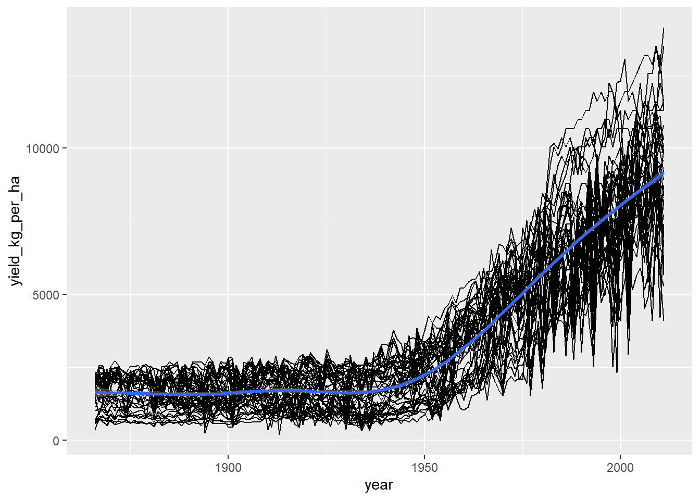
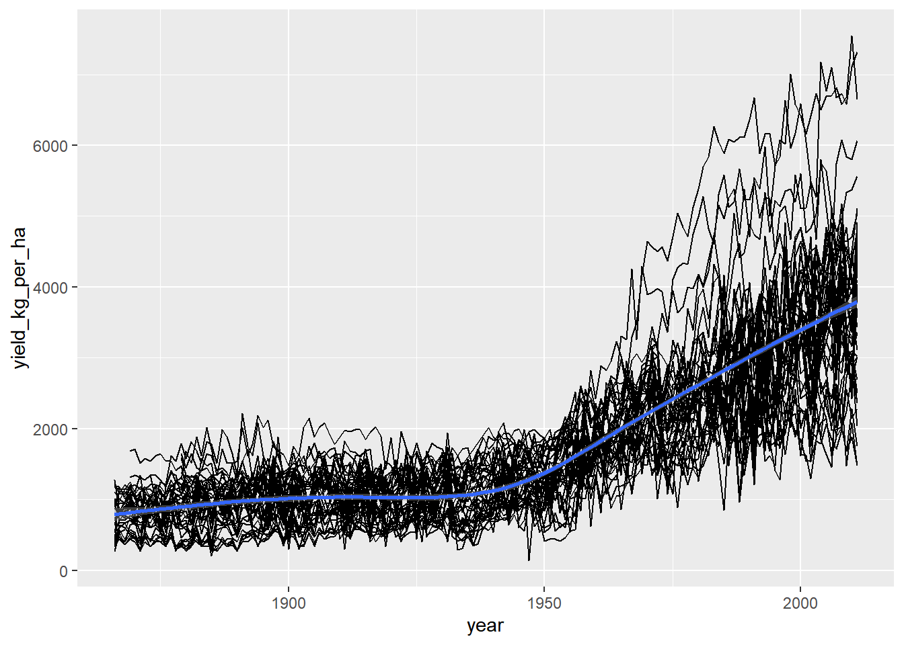
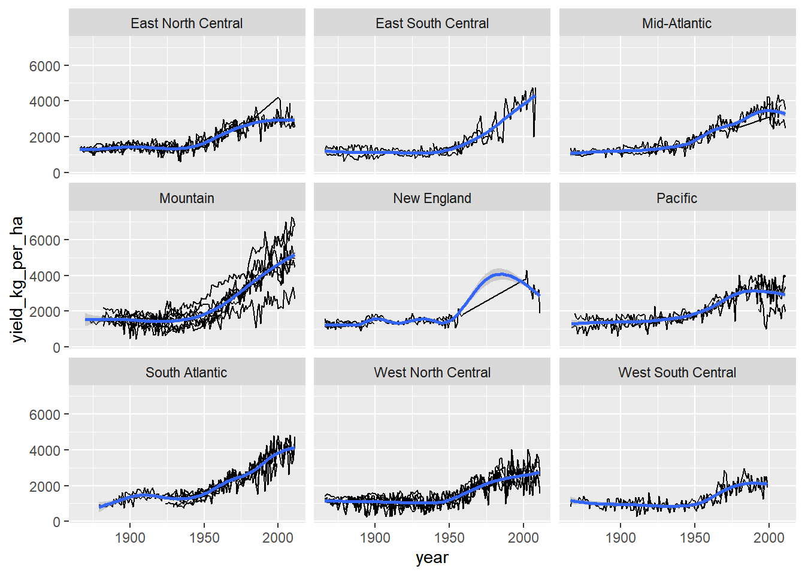

Chapter 12 Introduction to Writing Functions
12.1 Write a Function
12.1.1 Why write function?
Benefits of writing functions:
Functions eliminate repetition from your code, which
can reduce your workload, and
help avoid errors.
Functions also allow code reuse and sharing.
12.1.2 Convert scripts into functions
Make a template
Paste your script into the body
Choose the arguments
Replace specific values with arguments
Generalize variable names
Remove the final assignment
12.1.2.1 First function
# Your script, from a previous step
# Sample from coin_sides once
coin_sides <- c("head", "tail")
sample(coin_sides, 1)## [1] "head"# Paste your script into the function body
toss_coin <- function() {
coin_sides <- c("head", "tail")
sample(coin_sides, 1)
}
# Call your function
toss_coin()## [1] "head"12.1.2.2 Inputs to functions
The inputs to functions are called arguments.
# Update the function to return n coin tosses
toss_coin <- function(n_flips) {
coin_sides <- c("head", "tail")
sample(coin_sides, size = n_flips, replace = TRUE)
}
# Generate 10 coin tosses
toss_coin(10)## [1] "head" "head" "head" "tail" "tail" "head" "tail" "head" "head" "head"12.1.2.3 Multiple inputs to functions
If a function should have more than one argument, list them in the function signature, separated by commas.
Bias the coin by weighting the sampling. Specify the prob argument so that heads are sampled with probability p_head (and tails are sampled with probability 1 - p_head).
coin_sides <- c("head", "tail")
n_flips <- 10
p_head <- 0.8
# Define a vector of weights
weights <- c(p_head, 1 - p_head)
# Update so that heads are sampled with prob p_head
sample(coin_sides, n_flips, replace = TRUE, prob = weights)## [1] "tail" "head" "head" "head" "head" "tail" "head" "head" "head" "head"Update the definition of toss_coin() so it accepts an argument, p_head, and weights the samples using the code you wrote in the previous step.
# Update the function so heads have probability p_head
toss_coin <- function(n_flips, p_head) {
coin_sides <- c("head", "tail")
# Define a vector of weights
weights <- c(p_head, 1 - p_head)
# Modify the sampling to be weighted
sample(coin_sides, n_flips, replace = TRUE, prob = weights)
}
# Generate 10 coin tosses with an 80% chance of each head
toss_coin(10, 0.8)## [1] "head" "head" "head" "tail" "head" "head" "head" "head" "head" "head"12.1.3 Readable code
Function names should contain a verb
Readability vs. typeability
Understanding code >> typing code
Code editors have autocomplete
You can alias common functions
Types of argument
Data arguments: what you compute on
Detail arguments: how you perform the computation
Data args should precede detail args
Renaming GLM
R’s generalized linear regression function, glm(), suffers the same usability problems as lm(): its name is an acronym, and its formula and data arguments are in the wrong order.
To solve this exercise, you need to know two things about generalized linear regression:
glm()formulas are specified likelm()formulas: response is on the left, and explanatory variables are added on the right.To model count data, set
glm()’sfamilyargument topoisson, making it a Poisson regression.
library(tidyverse)
snake_river_visits <- read_rds("data/snake_river_visits.rds")
# Run a generalized linear regression
glm(
# Model no. of visits vs. gender, income, travel
n_visits ~ gender + income + travel,
# Use the snake_river_visits dataset
data = snake_river_visits,
# Make it a Poisson regression
family = poisson
)##
## Call: glm(formula = n_visits ~ gender + income + travel, family = poisson,
## data = snake_river_visits)
##
## Coefficients:
## (Intercept) genderfemale income($25k,$55k] income($55k,$95k]
## 4.0864 0.3740 -0.0199 -0.5807
## income($95k,$Inf) travel(0.25h,4h] travel(4h,Infh)
## -0.5782 -0.6271 -2.4230
##
## Degrees of Freedom: 345 Total (i.e. Null); 339 Residual
## (64 observations deleted due to missingness)
## Null Deviance: 18850
## Residual Deviance: 11530 AIC: 12860Define a function, run_poisson_regression(), to run a Poisson regression. This should take two arguments: data and formula, and call glm() .
# Write a function to run a Poisson regression
run_poisson_regression <- function(data, formula) {
glm(formula, data, family = poisson)
}# Re-run the Poisson regression, using your function
model <- snake_river_visits %>%
run_poisson_regression(n_visits ~ gender + income + travel)
# Run this to see the predictions
# snake_river_explanatory %>%
# mutate(predicted_n_visits = predict(model, ., type = "response"))%>%
# arrange(desc(predicted_n_visits))12.2 All About Arguments
12.2.1 Default arguments
12.2.1.1 Numeric defaults
Only set defaults for numeric detail arguments, not data arguments.
cut_by_quantile() converts a numeric vector into a categorical variable where quantiles define the cut points.
By specifying default arguments, you can make it easier to use. Let’s start with n, which specifies how many categories to cut x into.
# A numeric vector of the number of visits to Snake River
n_visits <- snake_river_visits$n_visits
# Set the default for n to 5
cut_by_quantile <- function(x, n = 5, na.rm, labels, interval_type) {
probs <- seq(0, 1, length.out = n + 1)
qtiles <- quantile(x, probs, na.rm = na.rm, names = FALSE)
right <- switch(interval_type, "(lo, hi]" = TRUE, "[lo, hi)" = FALSE)
cut(x, qtiles, labels = labels, right = right, include.lowest = TRUE)
}
# Remove the n argument from the call
cut_by_quantile(
n_visits,
na.rm = FALSE,
labels = c("very low", "low", "medium", "high", "very high"),
interval_type = "(lo, hi]"
)## [1] very low very low very low very low very low very low very low
## [8] very low very low very low very low very low very low very low
## [15] very low very low very low very low very low high very high
## [22] high very low medium low very low very low very low
## [29] very low very low very low very high very high very high very high
## [36] very high high very high very high very high very high very high
## [43] medium very high very high very high medium medium low
## [50] high high high very high very high high high
## [57] very high medium very high high medium high very high
## [64] very high very high very high high high very high high
## [71] very low very high high high medium high high
## [78] high medium very high very high very high high high
## [85] high very low very high medium high very high high
## [92] high very high high very low very low medium very low
## [99] medium medium very high medium medium medium high
## [106] low high very high medium very high medium very high
## [113] low very high low very high high very low very low
## [120] very low very low low very low very low very low very low
## [127] very low very low medium very low very low low low
## [134] very low very low low very low very low very low low
## [141] low medium medium medium medium medium very low
## [148] very low low very low low medium very low very low
## [155] very low very low very high high very high high medium
## [162] very high medium very low high medium high high
## [169] very high high high very high very high high very high
## [176] high high medium very high high high high
## [183] very high very high very low high very high high high
## [190] medium very high high very high high very high high
## [197] very high high very high very low high very high very high
## [204] very low very low medium very high medium low medium
## [211] high medium very low medium very high high very high
## [218] high very high high low high medium very high
## [225] medium high high high very low high high
## [232] high very high high medium medium very low very low
## [239] very low very low medium low very low very low very low
## [246] medium high very low very low medium very low very low
## [253] very low very low very low very low very low very low very low
## [260] very low very high medium very low very high medium very high
## [267] medium low very high medium medium medium low
## [274] high medium high very high medium very high very high
## [281] medium medium very high high medium very high high
## [288] medium low very low medium very low very low very low
## [295] very low very low low very low very low very low very low
## [302] very low very low very low very low low very low very low
## [309] very low very low low very low very low low very low
## [316] very low very low very low low very low very low very low
## [323] very low very low low very low very low very low very low
## [330] very low very low very low very low very low very low very low
## [337] very low very low very low very low very low very low very low
## [344] very low very low medium very low very low very low very low
## [351] very low very low very low very low very low very low very low
## [358] very low low very low very low very low very low very low
## [365] very low very low very low very low very low very low low
## [372] very low very low very low very high high very high very high
## [379] very high high very high very high very high very high medium
## [386] medium medium high very high high high high
## [393] high high high high very high high very high
## [400] medium high low high very high low very low
## [407] medium very low medium low
## Levels: very low low medium high very high12.2.1.2 Logical defaults
cut_by_quantile() is now slightly easier to use, but you still always have to specify the na.rm argument. This removes missing values.
Where functions have an argument for removing missing values, the best practice is to not remove them by default (in case you hadn’t spotted that you had missing values). That means that the default for na.rm should be FALSE.
# Set the default for na.rm to FALSE
cut_by_quantile <- function(x, n = 5, na.rm = FALSE, labels, interval_type) {
probs <- seq(0, 1, length.out = n + 1)
qtiles <- quantile(x, probs, na.rm = na.rm, names = FALSE)
right <- switch(interval_type, "(lo, hi]" = TRUE, "[lo, hi)" = FALSE)
cut(x, qtiles, labels = labels, right = right, include.lowest = TRUE)
}
# Remove the na.rm argument from the call
cut_by_quantile(
n_visits,
labels = c("very low", "low", "medium", "high", "very high"),
interval_type = "(lo, hi]"
)## [1] very low very low very low very low very low very low very low
## [8] very low very low very low very low very low very low very low
## [15] very low very low very low very low very low high very high
## [22] high very low medium low very low very low very low
## [29] very low very low very low very high very high very high very high
## [36] very high high very high very high very high very high very high
## [43] medium very high very high very high medium medium low
## [50] high high high very high very high high high
## [57] very high medium very high high medium high very high
## [64] very high very high very high high high very high high
## [71] very low very high high high medium high high
## [78] high medium very high very high very high high high
## [85] high very low very high medium high very high high
## [92] high very high high very low very low medium very low
## [99] medium medium very high medium medium medium high
## [106] low high very high medium very high medium very high
## [113] low very high low very high high very low very low
## [120] very low very low low very low very low very low very low
## [127] very low very low medium very low very low low low
## [134] very low very low low very low very low very low low
## [141] low medium medium medium medium medium very low
## [148] very low low very low low medium very low very low
## [155] very low very low very high high very high high medium
## [162] very high medium very low high medium high high
## [169] very high high high very high very high high very high
## [176] high high medium very high high high high
## [183] very high very high very low high very high high high
## [190] medium very high high very high high very high high
## [197] very high high very high very low high very high very high
## [204] very low very low medium very high medium low medium
## [211] high medium very low medium very high high very high
## [218] high very high high low high medium very high
## [225] medium high high high very low high high
## [232] high very high high medium medium very low very low
## [239] very low very low medium low very low very low very low
## [246] medium high very low very low medium very low very low
## [253] very low very low very low very low very low very low very low
## [260] very low very high medium very low very high medium very high
## [267] medium low very high medium medium medium low
## [274] high medium high very high medium very high very high
## [281] medium medium very high high medium very high high
## [288] medium low very low medium very low very low very low
## [295] very low very low low very low very low very low very low
## [302] very low very low very low very low low very low very low
## [309] very low very low low very low very low low very low
## [316] very low very low very low low very low very low very low
## [323] very low very low low very low very low very low very low
## [330] very low very low very low very low very low very low very low
## [337] very low very low very low very low very low very low very low
## [344] very low very low medium very low very low very low very low
## [351] very low very low very low very low very low very low very low
## [358] very low low very low very low very low very low very low
## [365] very low very low very low very low very low very low low
## [372] very low very low very low very high high very high very high
## [379] very high high very high very high very high very high medium
## [386] medium medium high very high high high high
## [393] high high high high very high high very high
## [400] medium high low high very high low very low
## [407] medium very low medium low
## Levels: very low low medium high very high12.2.1.3 NULL defaults
The cut() function used by cut_by_quantile() can automatically provide sensible labels for each category.
The code to generate these labels is pretty complicated, so rather than appearing in the function signature directly, its labels argument defaults to NULL, and the calculation details are shown on the ?cut help page.
(If you use this capability, make sure to document how the argument behaves in the function’s help page.)
# Set the default for labels to NULL
cut_by_quantile <- function(x, n = 5, na.rm = FALSE, labels = NULL, interval_type) {
probs <- seq(0, 1, length.out = n + 1)
qtiles <- quantile(x, probs, na.rm = na.rm, names = FALSE)
right <- switch(interval_type, "(lo, hi]" = TRUE, "[lo, hi)" = FALSE)
cut(x, qtiles, labels = labels, right = right, include.lowest = TRUE)
}
# Remove the labels argument from the call
cut_by_quantile(
n_visits,
interval_type = "(lo, hi]"
)## [1] [0,1] [0,1] [0,1] [0,1] [0,1] [0,1] [0,1] [0,1]
## [9] [0,1] [0,1] [0,1] [0,1] [0,1] [0,1] [0,1] [0,1]
## [17] [0,1] [0,1] [0,1] (10,35] (35,350] (10,35] [0,1] (2,10]
## [25] (1,2] [0,1] [0,1] [0,1] [0,1] [0,1] [0,1] (35,350]
## [33] (35,350] (35,350] (35,350] (35,350] (10,35] (35,350] (35,350] (35,350]
## [41] (35,350] (35,350] (2,10] (35,350] (35,350] (35,350] (2,10] (2,10]
## [49] (1,2] (10,35] (10,35] (10,35] (35,350] (35,350] (10,35] (10,35]
## [57] (35,350] (2,10] (35,350] (10,35] (2,10] (10,35] (35,350] (35,350]
## [65] (35,350] (35,350] (10,35] (10,35] (35,350] (10,35] [0,1] (35,350]
## [73] (10,35] (10,35] (2,10] (10,35] (10,35] (10,35] (2,10] (35,350]
## [81] (35,350] (35,350] (10,35] (10,35] (10,35] [0,1] (35,350] (2,10]
## [89] (10,35] (35,350] (10,35] (10,35] (35,350] (10,35] [0,1] [0,1]
## [97] (2,10] [0,1] (2,10] (2,10] (35,350] (2,10] (2,10] (2,10]
## [105] (10,35] (1,2] (10,35] (35,350] (2,10] (35,350] (2,10] (35,350]
## [113] (1,2] (35,350] (1,2] (35,350] (10,35] [0,1] [0,1] [0,1]
## [121] [0,1] (1,2] [0,1] [0,1] [0,1] [0,1] [0,1] [0,1]
## [129] (2,10] [0,1] [0,1] (1,2] (1,2] [0,1] [0,1] (1,2]
## [137] [0,1] [0,1] [0,1] (1,2] (1,2] (2,10] (2,10] (2,10]
## [145] (2,10] (2,10] [0,1] [0,1] (1,2] [0,1] (1,2] (2,10]
## [153] [0,1] [0,1] [0,1] [0,1] (35,350] (10,35] (35,350] (10,35]
## [161] (2,10] (35,350] (2,10] [0,1] (10,35] (2,10] (10,35] (10,35]
## [169] (35,350] (10,35] (10,35] (35,350] (35,350] (10,35] (35,350] (10,35]
## [177] (10,35] (2,10] (35,350] (10,35] (10,35] (10,35] (35,350] (35,350]
## [185] [0,1] (10,35] (35,350] (10,35] (10,35] (2,10] (35,350] (10,35]
## [193] (35,350] (10,35] (35,350] (10,35] (35,350] (10,35] (35,350] [0,1]
## [201] (10,35] (35,350] (35,350] [0,1] [0,1] (2,10] (35,350] (2,10]
## [209] (1,2] (2,10] (10,35] (2,10] [0,1] (2,10] (35,350] (10,35]
## [217] (35,350] (10,35] (35,350] (10,35] (1,2] (10,35] (2,10] (35,350]
## [225] (2,10] (10,35] (10,35] (10,35] [0,1] (10,35] (10,35] (10,35]
## [233] (35,350] (10,35] (2,10] (2,10] [0,1] [0,1] [0,1] [0,1]
## [241] (2,10] (1,2] [0,1] [0,1] [0,1] (2,10] (10,35] [0,1]
## [249] [0,1] (2,10] [0,1] [0,1] [0,1] [0,1] [0,1] [0,1]
## [257] [0,1] [0,1] [0,1] [0,1] (35,350] (2,10] [0,1] (35,350]
## [265] (2,10] (35,350] (2,10] (1,2] (35,350] (2,10] (2,10] (2,10]
## [273] (1,2] (10,35] (2,10] (10,35] (35,350] (2,10] (35,350] (35,350]
## [281] (2,10] (2,10] (35,350] (10,35] (2,10] (35,350] (10,35] (2,10]
## [289] (1,2] [0,1] (2,10] [0,1] [0,1] [0,1] [0,1] [0,1]
## [297] (1,2] [0,1] [0,1] [0,1] [0,1] [0,1] [0,1] [0,1]
## [305] [0,1] (1,2] [0,1] [0,1] [0,1] [0,1] (1,2] [0,1]
## [313] [0,1] (1,2] [0,1] [0,1] [0,1] [0,1] (1,2] [0,1]
## [321] [0,1] [0,1] [0,1] [0,1] (1,2] [0,1] [0,1] [0,1]
## [329] [0,1] [0,1] [0,1] [0,1] [0,1] [0,1] [0,1] [0,1]
## [337] [0,1] [0,1] [0,1] [0,1] [0,1] [0,1] [0,1] [0,1]
## [345] [0,1] (2,10] [0,1] [0,1] [0,1] [0,1] [0,1] [0,1]
## [353] [0,1] [0,1] [0,1] [0,1] [0,1] [0,1] (1,2] [0,1]
## [361] [0,1] [0,1] [0,1] [0,1] [0,1] [0,1] [0,1] [0,1]
## [369] [0,1] [0,1] (1,2] [0,1] [0,1] [0,1] (35,350] (10,35]
## [377] (35,350] (35,350] (35,350] (10,35] (35,350] (35,350] (35,350] (35,350]
## [385] (2,10] (2,10] (2,10] (10,35] (35,350] (10,35] (10,35] (10,35]
## [393] (10,35] (10,35] (10,35] (10,35] (35,350] (10,35] (35,350] (2,10]
## [401] (10,35] (1,2] (10,35] (35,350] (1,2] [0,1] (2,10] [0,1]
## [409] (2,10] (1,2]
## Levels: [0,1] (1,2] (2,10] (10,35] (35,350]12.2.1.4 Categorical defaults
Pass a character vector in the signature.
Call
match.arg()in the body.
The pattern for categorical defaults is:
function(cat_arg = c("choice1", "choice2")) {
cat_arg <- match.arg(cat_arg)
}When cutting up a numeric vector, you need to worry about what happens if a value lands exactly on a boundary. You can either put this value into a category of the lower interval or the higher interval. That is, you can choose your intervals to include values at the top boundary but not the bottom.
In mathematical terminology,
“open on the left, closed on the right” =
(lo, hi]“closed on the left, open on the right” =
[lo, hi)
cut_by_quantile() should allow these two choices.
# Take "rank()" for example, look at the ties.method argument
head(rank, 7)##
## 1 function (x, na.last = TRUE, ties.method = c("average", "first",
## 2 "last", "random", "max", "min"))
## 3 {
## 4 stopifnot(length(na.last) == 1L)
## 5 nas <- is.na(x)
## 6 nm <- names(x)
## 7 ties.method <- match.arg(ties.method)# Set the categories for interval_type to "(lo, hi]" and "[lo, hi)"
cut_by_quantile <- function(x, n = 5, na.rm = FALSE, labels = NULL,
interval_type = c("(lo, hi]", "[lo, hi)")) {
# Match the interval_type argument
interval_type <- match.arg(interval_type)
probs <- seq(0, 1, length.out = n + 1)
qtiles <- quantile(x, probs, na.rm = na.rm, names = FALSE)
right <- switch(interval_type, "(lo, hi]" = TRUE, "[lo, hi)" = FALSE)
cut(x, qtiles, labels = labels, right = right, include.lowest = TRUE)
}
# Remove the interval_type argument from the call
cut_by_quantile(n_visits)## [1] [0,1] [0,1] [0,1] [0,1] [0,1] [0,1] [0,1] [0,1]
## [9] [0,1] [0,1] [0,1] [0,1] [0,1] [0,1] [0,1] [0,1]
## [17] [0,1] [0,1] [0,1] (10,35] (35,350] (10,35] [0,1] (2,10]
## [25] (1,2] [0,1] [0,1] [0,1] [0,1] [0,1] [0,1] (35,350]
## [33] (35,350] (35,350] (35,350] (35,350] (10,35] (35,350] (35,350] (35,350]
## [41] (35,350] (35,350] (2,10] (35,350] (35,350] (35,350] (2,10] (2,10]
## [49] (1,2] (10,35] (10,35] (10,35] (35,350] (35,350] (10,35] (10,35]
## [57] (35,350] (2,10] (35,350] (10,35] (2,10] (10,35] (35,350] (35,350]
## [65] (35,350] (35,350] (10,35] (10,35] (35,350] (10,35] [0,1] (35,350]
## [73] (10,35] (10,35] (2,10] (10,35] (10,35] (10,35] (2,10] (35,350]
## [81] (35,350] (35,350] (10,35] (10,35] (10,35] [0,1] (35,350] (2,10]
## [89] (10,35] (35,350] (10,35] (10,35] (35,350] (10,35] [0,1] [0,1]
## [97] (2,10] [0,1] (2,10] (2,10] (35,350] (2,10] (2,10] (2,10]
## [105] (10,35] (1,2] (10,35] (35,350] (2,10] (35,350] (2,10] (35,350]
## [113] (1,2] (35,350] (1,2] (35,350] (10,35] [0,1] [0,1] [0,1]
## [121] [0,1] (1,2] [0,1] [0,1] [0,1] [0,1] [0,1] [0,1]
## [129] (2,10] [0,1] [0,1] (1,2] (1,2] [0,1] [0,1] (1,2]
## [137] [0,1] [0,1] [0,1] (1,2] (1,2] (2,10] (2,10] (2,10]
## [145] (2,10] (2,10] [0,1] [0,1] (1,2] [0,1] (1,2] (2,10]
## [153] [0,1] [0,1] [0,1] [0,1] (35,350] (10,35] (35,350] (10,35]
## [161] (2,10] (35,350] (2,10] [0,1] (10,35] (2,10] (10,35] (10,35]
## [169] (35,350] (10,35] (10,35] (35,350] (35,350] (10,35] (35,350] (10,35]
## [177] (10,35] (2,10] (35,350] (10,35] (10,35] (10,35] (35,350] (35,350]
## [185] [0,1] (10,35] (35,350] (10,35] (10,35] (2,10] (35,350] (10,35]
## [193] (35,350] (10,35] (35,350] (10,35] (35,350] (10,35] (35,350] [0,1]
## [201] (10,35] (35,350] (35,350] [0,1] [0,1] (2,10] (35,350] (2,10]
## [209] (1,2] (2,10] (10,35] (2,10] [0,1] (2,10] (35,350] (10,35]
## [217] (35,350] (10,35] (35,350] (10,35] (1,2] (10,35] (2,10] (35,350]
## [225] (2,10] (10,35] (10,35] (10,35] [0,1] (10,35] (10,35] (10,35]
## [233] (35,350] (10,35] (2,10] (2,10] [0,1] [0,1] [0,1] [0,1]
## [241] (2,10] (1,2] [0,1] [0,1] [0,1] (2,10] (10,35] [0,1]
## [249] [0,1] (2,10] [0,1] [0,1] [0,1] [0,1] [0,1] [0,1]
## [257] [0,1] [0,1] [0,1] [0,1] (35,350] (2,10] [0,1] (35,350]
## [265] (2,10] (35,350] (2,10] (1,2] (35,350] (2,10] (2,10] (2,10]
## [273] (1,2] (10,35] (2,10] (10,35] (35,350] (2,10] (35,350] (35,350]
## [281] (2,10] (2,10] (35,350] (10,35] (2,10] (35,350] (10,35] (2,10]
## [289] (1,2] [0,1] (2,10] [0,1] [0,1] [0,1] [0,1] [0,1]
## [297] (1,2] [0,1] [0,1] [0,1] [0,1] [0,1] [0,1] [0,1]
## [305] [0,1] (1,2] [0,1] [0,1] [0,1] [0,1] (1,2] [0,1]
## [313] [0,1] (1,2] [0,1] [0,1] [0,1] [0,1] (1,2] [0,1]
## [321] [0,1] [0,1] [0,1] [0,1] (1,2] [0,1] [0,1] [0,1]
## [329] [0,1] [0,1] [0,1] [0,1] [0,1] [0,1] [0,1] [0,1]
## [337] [0,1] [0,1] [0,1] [0,1] [0,1] [0,1] [0,1] [0,1]
## [345] [0,1] (2,10] [0,1] [0,1] [0,1] [0,1] [0,1] [0,1]
## [353] [0,1] [0,1] [0,1] [0,1] [0,1] [0,1] (1,2] [0,1]
## [361] [0,1] [0,1] [0,1] [0,1] [0,1] [0,1] [0,1] [0,1]
## [369] [0,1] [0,1] (1,2] [0,1] [0,1] [0,1] (35,350] (10,35]
## [377] (35,350] (35,350] (35,350] (10,35] (35,350] (35,350] (35,350] (35,350]
## [385] (2,10] (2,10] (2,10] (10,35] (35,350] (10,35] (10,35] (10,35]
## [393] (10,35] (10,35] (10,35] (10,35] (35,350] (10,35] (35,350] (2,10]
## [401] (10,35] (1,2] (10,35] (35,350] (1,2] [0,1] (2,10] [0,1]
## [409] (2,10] (1,2]
## Levels: [0,1] (1,2] (2,10] (10,35] (35,350]match.arg() handles throwing an error if the user types a value that wasn’t specified.
12.2.2 Pass arguments between functions
12.2.2.1 Harmonic mean
The harmonic mean is the reciprocal of the arithmetic mean of the reciprocal of the data. The harmonic mean is often used to average ratio data.

You’ll be using it on the price/earnings ratio of stocks in the Standard and Poor’s 500 index, provided as std_and_poor500. Price/earnings ratio is a measure of how expensive a stock is.
std_and_poor500 <- read_rds("data/std_and_poor500_with_pe_2019-06-21.rds")
glimpse(std_and_poor500)## Rows: 505
## Columns: 5
## $ symbol <chr> "MMM", "ABT", "ABBV", "ABMD", "ACN", "ATVI", "ADBE", "AMD", "…
## $ company <chr> "3M Company", "Abbott Laboratories", "AbbVie Inc.", "ABIOMED …
## $ sector <chr> "Industrials", "Health Care", "Health Care", "Health Care", "…
## $ industry <chr> "Industrial Conglomerates", "Health Care Equipment", "Pharmac…
## $ pe_ratio <dbl> 18.31678, 57.66621, 22.43805, 45.63993, 27.00233, 20.13596, 5…# Write a function to calculate the reciprocal
get_reciprocal <- function(x) {
1/x
}
# Write a function to calculate the harmonic mean
calc_harmonic_mean <- function(x) {
x %>%
get_reciprocal() %>%
mean() %>%
get_reciprocal()
}
# Calculate each sector Price/earnings ratio
std_and_poor500 %>%
# Group by sector
group_by(sector) %>%
# Summarize, calculating harmonic mean of P/E ratio
summarise(hmean_pe_ratio = calc_harmonic_mean(pe_ratio))## # A tibble: 11 × 2
## sector hmean_pe_ratio
## <chr> <dbl>
## 1 Communication Services NA
## 2 Consumer Discretionary NA
## 3 Consumer Staples NA
## 4 Energy NA
## 5 Financials NA
## 6 Health Care NA
## 7 Industrials NA
## 8 Information Technology NA
## 9 Materials NA
## 10 Real Estate 32.5
## 11 Utilities NAIt looks like we have a problem though: most sectors have missing values.
12.2.2.2 Handling missing values
It would be useful for your function to be able to remove missing values before calculating.
Rather than writing your own code for this, you can outsource this functionality to mean().
# Add an na.rm arg with a default, and pass it to mean()
calc_harmonic_mean <- function(x, na.rm = FALSE) {
x %>%
get_reciprocal() %>%
mean(na.rm = na.rm) %>%
get_reciprocal()
}
std_and_poor500 %>%
# Group by sector
group_by(sector) %>%
# Summarize, calculating harmonic mean of P/E ratio, and remove missing value
summarise(hmean_pe_ratio = calc_harmonic_mean(pe_ratio, na.rm = TRUE))## # A tibble: 11 × 2
## sector hmean_pe_ratio
## <chr> <dbl>
## 1 Communication Services 17.5
## 2 Consumer Discretionary 15.2
## 3 Consumer Staples 19.8
## 4 Energy 13.7
## 5 Financials 12.9
## 6 Health Care 26.6
## 7 Industrials 18.2
## 8 Information Technology 21.6
## 9 Materials 16.3
## 10 Real Estate 32.5
## 11 Utilities 23.912.2.2.3 Using ...
The tradeoff
Benefits
Less typing for you
No need to match signatures
Drawbacks
You need to trust the inner function
The interface is not as obvious to users
Rather than explicitly giving calc_harmonic_mean() and na.rm argument, you can use ... to simply “pass other arguments” to mean().
# Swap na.rm arg for ... in signature and body
calc_harmonic_mean <- function(x, ...) {
x %>%
get_reciprocal() %>%
mean(...) %>%
get_reciprocal()
}
std_and_poor500 %>%
# Group by sector
group_by(sector) %>%
# Summarize, calculating harmonic mean of P/E ratio, and remove missing value
summarise(hmean_pe_ratio = calc_harmonic_mean(pe_ratio, na.rm = TRUE))## # A tibble: 11 × 2
## sector hmean_pe_ratio
## <chr> <dbl>
## 1 Communication Services 17.5
## 2 Consumer Discretionary 15.2
## 3 Consumer Staples 19.8
## 4 Energy 13.7
## 5 Financials 12.9
## 6 Health Care 26.6
## 7 Industrials 18.2
## 8 Information Technology 21.6
## 9 Materials 16.3
## 10 Real Estate 32.5
## 11 Utilities 23.9Using ... doesn’t change how people use your function; it just means the function is more flexible.
12.2.3 Checking arguments
12.2.3.1 Throwing errors
If a user provides a bad input to a function, the best course of action is to throw an error letting them know. The two rules are
Throw the error message as soon as you realize there is a problem (typically at the start of the function).
Make the error message easily understandable.
You can use the assert() functions from assert package to check inputs and throw errors when they fail. (no output means no problem)
library(assert)
calc_harmonic_mean <- function(x, na.rm = FALSE) {
# Assert that x is numeric
assert(is.numeric(x))
x %>%
get_reciprocal() %>%
mean(na.rm = na.rm) %>%
get_reciprocal()
}
# See what happens when you pass it strings
calc_harmonic_mean(std_and_poor500$sector)Error: in calc_harmonic_mean(x = std_and_poor500$sector)
Failed checks:
is.numeric(x)12.2.3.2 Custom error logic
Sometimes the assert() functions in assert don’t give the most informative error message. For example, won’t say why that’s a problem. In that case, you can use the is_*() functions in conjunction with messages, warnings, or errors to define custom feedback.
The harmonic mean only makes sense when x has all positive values.
calc_harmonic_mean <- function(x, na.rm = FALSE) {
assert(is.numeric(x))
# Check if any values of x are non-positive
if(any(x < 0, na.rm = TRUE)) {
# Throw an error
stop("x contains non-positive values, so the harmonic mean makes no sense.")
}
x %>%
get_reciprocal() %>%
mean(na.rm = na.rm) %>%
get_reciprocal()
}
# See what happens when you pass it negative numbers
calc_harmonic_mean(std_and_poor500$pe_ratio - 20)Error in calc_harmonic_mean(std_and_poor500$pe_ratio - 20) :
x contains non-positive values, so the harmonic mean makes no sense.Explaining what went wrong is helpful to users. Explaining why it is wrong is even better!
12.2.3.3 Fixing function arguments
You still need to provide some checks on the na.rm argument. This time, rather than throwing errors when the input is in an incorrect form, you are going to try to fix it.
na.rm should be a logical vector with one element.
Fix the na.rm argument by using use_first() to select the first na.rm element, and coerce_to() to change it to logical.
library(assert)## Warning: package 'assert' was built under R version 4.3.1library(assertive.base)## Warning: package 'assertive.base' was built under R version 4.3.2# Update the function definition to fix the na.rm argument
calc_harmonic_mean <- function(x, na.rm = FALSE) {
assert(is.numeric(x))
if(any(x < 0, na.rm = TRUE)) {
stop("x contains non-positive values, so the harmonic mean makes no sense.")
}
# Use the first value of na.rm, and coerce to logical
na.rm <- coerce_to(use_first(na.rm), target_class = "logical")
x %>%
get_reciprocal() %>%
mean(na.rm = na.rm) %>%
get_reciprocal()
}
# See what happens when you pass it malformed na.rm
calc_harmonic_mean(std_and_poor500$pe_ratio, na.rm = 1:5)## Warning: Only the first value of na.rm (= 1) will be used.## Warning: Coercing use_first(na.rm) to class 'logical'.## [1] 18.2387112.3 Return Values and Scope
12.3.1 Returning values
Reasons for returning early
You already know the answer.
The input is an edge case.
12.3.1.1 Returning early
Sometimes, you don’t need to run through the whole body of a function to get the answer. In that case you can return early from that function using return().
Returning early can often improve the performance of your functions considerably for some input values.
You need to know that a leap year is every 400th year (like the year 2000) or every 4th year that isn’t a century (like 1904 but not 1900 or 1905).
# checking for the cases of year being divisible by 400, then 100, then 4, returning early from the function in each case.
is_leap_year <- function(year) {
# If year is div. by 400 return TRUE
if(year %% 400 == 0) {
return(TRUE)
}
# If year is div. by 100 return FALSE
if(year %% 100 == 0) {
return(FALSE)
}
# If year is div. by 4 return TRUE
if(year %% 4 == 0) {
return(TRUE)
}
# Otherwise return FALSE
else {
return(FALSE)
}
}12.3.1.2 Returning invisibly
When the main purpose of a function is to generate output, like drawing a plot or printing something in the console, you may not want a return value to be printed as well. In that case, the value should be invisibly returned: invisible()
The base R plot function returns NULL, since its main purpose is to draw a plot. Recall that plot() has a formula interface: plot(y ~ x, data = data)
# Using cars, draw a scatter plot of dist vs. speed
plt_dist_vs_speed <- base::plot(dist ~ speed, data = cars)
# Oh no! The plot object is NULL
plt_dist_vs_speedThis isn’t helpful if you want to use it in piped code: instead it should invisibly return the plot data to be piped on to the next step.
# Define a pipeable plot fn with data and formula args
pipeable_plot <- function(data, formula) {
# Call plot() with the formula interface
base::plot(formula, data)
# Invisibly return the input dataset
invisible(data)
}
# Draw the scatter plot of dist vs. speed again
plt_dist_vs_speed <- cars %>%
pipeable_plot(dist ~ speed)
# Now the plot object has a value
plt_dist_vs_speed12.3.2 Return multiple values
R functions can only return a single value, but there are two ways to get around this rule:
return several objects in a list
store objects as attributes
When to use each technique:
If you need the result to have a particular type, add additional return values as attributes.
Otherwise, collect all return values into a list
12.3.2.1 Returning many things
Functions can only return one value. If you want to return multiple things, then you can store them all in a list.
Multi-assignment
If users want to have the list items as separate variables, they can assign each list element to its own variable.
Using zeallot’s multi-assignment operator, %<-%, e.g, c(a, b) %<-% list(2 elements)
broom package:
glance(): modeltidy(): coefficientaugment(): observation
library(broom)
library(zeallot)## Warning: package 'zeallot' was built under R version 4.3.2# Look at the structure of model (it's a mess!)
str(model)## List of 31
## $ coefficients : Named num [1:7] 4.0864 0.374 -0.0199 -0.5807 -0.5782 ...
## ..- attr(*, "names")= chr [1:7] "(Intercept)" "genderfemale" "income($25k,$55k]" "income($55k,$95k]" ...
## $ residuals : Named num [1:346] -0.535 -0.768 -0.944 -0.662 -0.767 ...
## ..- attr(*, "names")= chr [1:346] "25" "26" "27" "29" ...
## $ fitted.values : Named num [1:346] 4.3 4.3 17.83 2.96 4.29 ...
## ..- attr(*, "names")= chr [1:346] "25" "26" "27" "29" ...
## $ effects : Named num [1:346] -360 -29.2 20.3 -10 23.4 ...
## ..- attr(*, "names")= chr [1:346] "(Intercept)" "genderfemale" "income($25k,$55k]" "income($55k,$95k]" ...
## $ R : num [1:7, 1:7] -97.4 0 0 0 0 ...
## ..- attr(*, "dimnames")=List of 2
## .. ..$ : chr [1:7] "(Intercept)" "genderfemale" "income($25k,$55k]" "income($55k,$95k]" ...
## .. ..$ : chr [1:7] "(Intercept)" "genderfemale" "income($25k,$55k]" "income($55k,$95k]" ...
## $ rank : int 7
## $ qr :List of 5
## ..$ qr : num [1:346, 1:7] -97.3861 0.0213 0.0434 0.0177 0.0213 ...
## .. ..- attr(*, "dimnames")=List of 2
## .. .. ..$ : chr [1:346] "25" "26" "27" "29" ...
## .. .. ..$ : chr [1:7] "(Intercept)" "genderfemale" "income($25k,$55k]" "income($55k,$95k]" ...
## ..$ rank : int 7
## ..$ qraux: num [1:7] 1.02 1.02 1.04 1.01 1 ...
## ..$ pivot: int [1:7] 1 2 3 4 5 6 7
## ..$ tol : num 1e-11
## ..- attr(*, "class")= chr "qr"
## $ family :List of 13
## ..$ family : chr "poisson"
## ..$ link : chr "log"
## ..$ linkfun :function (mu)
## ..$ linkinv :function (eta)
## ..$ variance :function (mu)
## ..$ dev.resids:function (y, mu, wt)
## ..$ aic :function (y, n, mu, wt, dev)
## ..$ mu.eta :function (eta)
## ..$ initialize: expression({ if (any(y < 0)) stop("negative values not allowed for the 'Poisson' family") n <- rep.int(1, nobs| __truncated__
## ..$ validmu :function (mu)
## ..$ valideta :function (eta)
## ..$ simulate :function (object, nsim)
## ..$ dispersion: num 1
## ..- attr(*, "class")= chr "family"
## $ linear.predictors: Named num [1:346] 1.46 1.46 2.88 1.09 1.46 ...
## ..- attr(*, "names")= chr [1:346] "25" "26" "27" "29" ...
## $ deviance : num 11529
## $ aic : num 12864
## $ null.deviance : num 18850
## $ iter : int 6
## $ weights : Named num [1:346] 4.3 4.3 17.83 2.96 4.29 ...
## ..- attr(*, "names")= chr [1:346] "25" "26" "27" "29" ...
## $ prior.weights : Named num [1:346] 1 1 1 1 1 1 1 1 1 1 ...
## ..- attr(*, "names")= chr [1:346] "25" "26" "27" "29" ...
## $ df.residual : int 339
## $ df.null : int 345
## $ y : Named num [1:346] 2 1 1 1 1 1 80 104 55 350 ...
## ..- attr(*, "names")= chr [1:346] "25" "26" "27" "29" ...
## $ converged : logi TRUE
## $ boundary : logi FALSE
## $ model :'data.frame': 346 obs. of 4 variables:
## ..$ n_visits: num [1:346] 2 1 1 1 1 1 80 104 55 350 ...
## ..$ gender : Factor w/ 2 levels "male","female": 2 2 1 1 2 1 2 2 1 2 ...
## ..$ income : Factor w/ 4 levels "[$0,$25k]","($25k,$55k]",..: 4 4 4 4 3 1 1 4 2 2 ...
## ..$ travel : Factor w/ 3 levels "[0h,0.25h]","(0.25h,4h]",..: 3 3 2 3 3 1 1 1 2 1 ...
## ..- attr(*, "terms")=Classes 'terms', 'formula' language n_visits ~ gender + income + travel
## .. .. ..- attr(*, "variables")= language list(n_visits, gender, income, travel)
## .. .. ..- attr(*, "factors")= int [1:4, 1:3] 0 1 0 0 0 0 1 0 0 0 ...
## .. .. .. ..- attr(*, "dimnames")=List of 2
## .. .. .. .. ..$ : chr [1:4] "n_visits" "gender" "income" "travel"
## .. .. .. .. ..$ : chr [1:3] "gender" "income" "travel"
## .. .. ..- attr(*, "term.labels")= chr [1:3] "gender" "income" "travel"
## .. .. ..- attr(*, "order")= int [1:3] 1 1 1
## .. .. ..- attr(*, "intercept")= int 1
## .. .. ..- attr(*, "response")= int 1
## .. .. ..- attr(*, ".Environment")=<environment: 0x000002cafb57c950>
## .. .. ..- attr(*, "predvars")= language list(n_visits, gender, income, travel)
## .. .. ..- attr(*, "dataClasses")= Named chr [1:4] "numeric" "factor" "factor" "factor"
## .. .. .. ..- attr(*, "names")= chr [1:4] "n_visits" "gender" "income" "travel"
## ..- attr(*, "na.action")= 'omit' Named int [1:64] 1 2 3 4 5 6 7 8 9 10 ...
## .. ..- attr(*, "names")= chr [1:64] "1" "2" "3" "4" ...
## $ na.action : 'omit' Named int [1:64] 1 2 3 4 5 6 7 8 9 10 ...
## ..- attr(*, "names")= chr [1:64] "1" "2" "3" "4" ...
## $ call : language glm(formula = formula, family = poisson, data = data)
## $ formula :Class 'formula' language n_visits ~ gender + income + travel
## .. ..- attr(*, ".Environment")=<environment: 0x000002cafb57c950>
## $ terms :Classes 'terms', 'formula' language n_visits ~ gender + income + travel
## .. ..- attr(*, "variables")= language list(n_visits, gender, income, travel)
## .. ..- attr(*, "factors")= int [1:4, 1:3] 0 1 0 0 0 0 1 0 0 0 ...
## .. .. ..- attr(*, "dimnames")=List of 2
## .. .. .. ..$ : chr [1:4] "n_visits" "gender" "income" "travel"
## .. .. .. ..$ : chr [1:3] "gender" "income" "travel"
## .. ..- attr(*, "term.labels")= chr [1:3] "gender" "income" "travel"
## .. ..- attr(*, "order")= int [1:3] 1 1 1
## .. ..- attr(*, "intercept")= int 1
## .. ..- attr(*, "response")= int 1
## .. ..- attr(*, ".Environment")=<environment: 0x000002cafb57c950>
## .. ..- attr(*, "predvars")= language list(n_visits, gender, income, travel)
## .. ..- attr(*, "dataClasses")= Named chr [1:4] "numeric" "factor" "factor" "factor"
## .. .. ..- attr(*, "names")= chr [1:4] "n_visits" "gender" "income" "travel"
## $ data :'data.frame': 410 obs. of 4 variables:
## ..$ n_visits: num [1:410] 0 0 0 0 0 0 0 0 0 0 ...
## ..$ gender : Factor w/ 2 levels "male","female": 1 1 1 2 1 2 2 2 1 1 ...
## ..$ income : Factor w/ 4 levels "[$0,$25k]","($25k,$55k]",..: 4 2 4 2 4 2 4 4 4 4 ...
## ..$ travel : Factor w/ 3 levels "[0h,0.25h]","(0.25h,4h]",..: NA NA NA NA NA NA NA NA NA NA ...
## $ offset : NULL
## $ control :List of 3
## ..$ epsilon: num 1e-08
## ..$ maxit : num 25
## ..$ trace : logi FALSE
## $ method : chr "glm.fit"
## $ contrasts :List of 3
## ..$ gender: chr "contr.treatment"
## ..$ income: chr "contr.treatment"
## ..$ travel: chr "contr.treatment"
## $ xlevels :List of 3
## ..$ gender: chr [1:2] "male" "female"
## ..$ income: chr [1:4] "[$0,$25k]" "($25k,$55k]" "($55k,$95k]" "($95k,$Inf)"
## ..$ travel: chr [1:3] "[0h,0.25h]" "(0.25h,4h]" "(4h,Infh)"
## - attr(*, "class")= chr [1:2] "glm" "lm"# Use broom tools to get a list of 3 data frames
list(
# Get model-level values
model = glance(model),
# Get coefficient-level values
coefficients = tidy(model),
# Get observation-level values
observations = augment(model)
)## $model
## # A tibble: 1 × 8
## null.deviance df.null logLik AIC BIC deviance df.residual nobs
## <dbl> <int> <dbl> <dbl> <dbl> <dbl> <int> <int>
## 1 18850. 345 -6425. 12864. 12891. 11529. 339 346
##
## $coefficients
## # A tibble: 7 × 5
## term estimate std.error statistic p.value
## <chr> <dbl> <dbl> <dbl> <dbl>
## 1 (Intercept) 4.09 0.0279 146. 0
## 2 genderfemale 0.374 0.0212 17.6 2.18e- 69
## 3 income($25k,$55k] -0.0199 0.0267 -0.746 4.56e- 1
## 4 income($55k,$95k] -0.581 0.0343 -16.9 3.28e- 64
## 5 income($95k,$Inf) -0.578 0.0310 -18.7 6.88e- 78
## 6 travel(0.25h,4h] -0.627 0.0217 -28.8 5.40e-183
## 7 travel(4h,Infh) -2.42 0.0492 -49.3 0
##
## $observations
## # A tibble: 346 × 11
## .rownames n_visits gender income travel .fitted .resid .hat .sigma
## <chr> <dbl> <fct> <fct> <fct> <dbl> <dbl> <dbl> <dbl>
## 1 25 2 female ($95k,$Inf) (4h,Inf… 1.46 -1.24 0.0109 5.84
## 2 26 1 female ($95k,$Inf) (4h,Inf… 1.46 -1.92 0.0109 5.84
## 3 27 1 male ($95k,$Inf) (0.25h,… 2.88 -5.28 0.0129 5.83
## 4 29 1 male ($95k,$Inf) (4h,Inf… 1.09 -1.32 0.00711 5.84
## 5 30 1 female ($55k,$95k] (4h,Inf… 1.46 -1.92 0.0121 5.84
## 6 31 1 male [$0,$25k] [0h,0.2… 4.09 -10.4 0.0465 5.81
## 7 33 80 female [$0,$25k] [0h,0.2… 4.46 -0.710 0.0479 5.84
## 8 34 104 female ($95k,$Inf) [0h,0.2… 3.88 6.90 0.0332 5.83
## 9 35 55 male ($25k,$55k] (0.25h,… 3.44 3.85 0.0153 5.84
## 10 36 350 female ($25k,$55k] [0h,0.2… 4.44 21.5 0.0360 5.72
## # ℹ 336 more rows
## # ℹ 2 more variables: .cooksd <dbl>, .std.resid <dbl># Wrap this code into a function, groom_model
groom_model <- function(model) {
list(
model = glance(model),
coefficients = tidy(model),
observations = augment(model)
)
}
# Call groom_model on model, assigning to 3 variables
c(mdl, cff, obs) %<-% groom_model(model)
# See these individual variables
mdl; cff; obs## # A tibble: 1 × 8
## null.deviance df.null logLik AIC BIC deviance df.residual nobs
## <dbl> <int> <dbl> <dbl> <dbl> <dbl> <int> <int>
## 1 18850. 345 -6425. 12864. 12891. 11529. 339 346## # A tibble: 7 × 5
## term estimate std.error statistic p.value
## <chr> <dbl> <dbl> <dbl> <dbl>
## 1 (Intercept) 4.09 0.0279 146. 0
## 2 genderfemale 0.374 0.0212 17.6 2.18e- 69
## 3 income($25k,$55k] -0.0199 0.0267 -0.746 4.56e- 1
## 4 income($55k,$95k] -0.581 0.0343 -16.9 3.28e- 64
## 5 income($95k,$Inf) -0.578 0.0310 -18.7 6.88e- 78
## 6 travel(0.25h,4h] -0.627 0.0217 -28.8 5.40e-183
## 7 travel(4h,Infh) -2.42 0.0492 -49.3 0## # A tibble: 346 × 11
## .rownames n_visits gender income travel .fitted .resid .hat .sigma
## <chr> <dbl> <fct> <fct> <fct> <dbl> <dbl> <dbl> <dbl>
## 1 25 2 female ($95k,$Inf) (4h,Inf… 1.46 -1.24 0.0109 5.84
## 2 26 1 female ($95k,$Inf) (4h,Inf… 1.46 -1.92 0.0109 5.84
## 3 27 1 male ($95k,$Inf) (0.25h,… 2.88 -5.28 0.0129 5.83
## 4 29 1 male ($95k,$Inf) (4h,Inf… 1.09 -1.32 0.00711 5.84
## 5 30 1 female ($55k,$95k] (4h,Inf… 1.46 -1.92 0.0121 5.84
## 6 31 1 male [$0,$25k] [0h,0.2… 4.09 -10.4 0.0465 5.81
## 7 33 80 female [$0,$25k] [0h,0.2… 4.46 -0.710 0.0479 5.84
## 8 34 104 female ($95k,$Inf) [0h,0.2… 3.88 6.90 0.0332 5.83
## 9 35 55 male ($25k,$55k] (0.25h,… 3.44 3.85 0.0153 5.84
## 10 36 350 female ($25k,$55k] [0h,0.2… 4.44 21.5 0.0360 5.72
## # ℹ 336 more rows
## # ℹ 2 more variables: .cooksd <dbl>, .std.resid <dbl>12.3.2.2 Returning metadata
Sometimes you want to return multiple things from a function, but you want the result to have a particular class (for example, a data frame or a numeric vector), so returning a list isn’t appropriate.
This is common when you have a result plus metadata about the result. (Metadata is “data about the data”. For example, it could be the file a dataset was loaded from)
In that case, you can store the metadata in attributes.
attr(object, "attribute_name") <- attribute_valuepipeable_plot <- function(data, formula) {
plot(formula, data)
# Add a "formula" attribute to data
attr(data, "formula") <- formula
invisible(data)
}
# From previous exercise
plt_dist_vs_speed <- cars %>%
pipeable_plot(dist ~ speed)
# Examine the structure of the result
str(plt_dist_vs_speed)12.3.3 Environments
Environments are a type of variable that is used to store other variables. Mostly, you can think of them as lists.
Every environment has a parent environment (except the empty environment, at the root of the environment tree). This determines which variables R know about at different places in your code.
12.3.3.1 Create & explore environments
ls.str(list): list the elements, give a compact summary of multiple variables at once.list2env(list): convert the list to an environment.environmentName(parent.env(env)): find the parent of an environment, and display it.
Facts about the Republic of South Africa are contained in capitals, national_parks, and population.
# create capitals
city <- c("Cape Town", "Bloemfontein", "Pretoria")
type_of_capital <- c("Legislative", "Judicial", "Administrative")
capitals <- data.frame(city, type_of_capital)
# create national_parks
national_parks <- c(
"Addo Elephant National Park",
"Agulhas National Park",
"Ai-Ais/Richtersveld Transfrontier Park",
"Augrabies Falls National Park",
"Bontebok National Park",
"Camdeboo National Park",
"Golden Gate Highlands National Park",
"Hluhluwe–Imfolozi Park",
"Karoo National Park",
"Kgalagadi Transfrontier Park",
"Knysna National Lake Area",
"Kruger National Park",
"Mapungubwe National Park",
"Marakele National Park",
"Mokala National Park",
"Mountain Zebra National Park",
"Namaqua National Park",
"Table Mountain National Park",
"Tankwa Karoo National Park",
"Tsitsikamma National Park",
"West Coast National Park",
"Wilderness National Park")
# create population
population <- ts(c(40583573, 44819778, 47390900, 51770560, 55908900), start = 1996, end = 2016, frequency = 0.2); population## Time Series:
## Start = 1996
## End = 2016
## Frequency = 0.2
## [1] 40583573 44819778 47390900 51770560 55908900# Add capitals, national_parks, & population to a named list
rsa_lst <- list(
capitals = capitals,
national_parks = national_parks,
population = population
)
# List the structure of each element of rsa_lst
ls.str(rsa_lst)## capitals : 'data.frame': 3 obs. of 2 variables:
## $ city : chr "Cape Town" "Bloemfontein" "Pretoria"
## $ type_of_capital: chr "Legislative" "Judicial" "Administrative"
## national_parks : chr [1:22] "Addo Elephant National Park" "Agulhas National Park" ...
## population : Time-Series [1:5] from 1996 to 2016: 40583573 44819778 47390900 51770560 55908900# Convert the list to an environment
rsa_env <- list2env(rsa_lst)
# List the structure of each variable
ls.str(rsa_env)## capitals : 'data.frame': 3 obs. of 2 variables:
## $ city : chr "Cape Town" "Bloemfontein" "Pretoria"
## $ type_of_capital: chr "Legislative" "Judicial" "Administrative"
## national_parks : chr [1:22] "Addo Elephant National Park" "Agulhas National Park" ...
## population : Time-Series [1:5] from 1996 to 2016: 40583573 44819778 47390900 51770560 55908900# Find the parent environment of rsa_env
parent <- parent.env(rsa_env)
# Print its name
environmentName(parent)## [1] "R_GlobalEnv"12.3.3.2 Do variables exist?
If R cannot find a variable in the current environment, it will look in the parent environment, then the grandparent environment, and so on until it finds it.
exists("variable", envir = env)
You can force R to only look in the environment you asked for by setting inherits to FALSE.
exists("variable", envir = env, inherits = FALSE)
# Compare the contents of the global environment and rsa_env
ls.str(globalenv())## a : num 5
## account_offices : spc_tbl_ [98 × 2] (S3: spec_tbl_df/tbl_df/tbl/data.frame)
## accounts : tibble [97 × 5] (S3: tbl_df/tbl/data.frame)
## accounts_clean : tibble [88 × 6] (S3: tbl_df/tbl/data.frame)
## acres_to_hectares : function (acres)
## acres_to_sq_yards : function (acres)
## actual_response : int [1:400] 0 0 0 0 0 0 0 0 0 0 ...
## ad_conversion : 'data.frame': 936 obs. of 3 variables:
## $ spent_usd : num 1.43 1.82 1.25 1.29 4.77 ...
## $ n_impressions: num 7350 17861 4259 4133 15615 ...
## $ n_clicks : num 1 2 1 1 3 1 1 3 7 1 ...
## airquality : spc_tbl_ [153 × 7] (S3: spec_tbl_df/tbl_df/tbl/data.frame)
## akl_daily : tibble [3,661 × 10] (S3: tbl_df/tbl/data.frame)
## akl_daily_raw : spc_tbl_ [3,661 × 7] (S3: spec_tbl_df/tbl_df/tbl/data.frame)
## akl_day : tibble [10,905 × 15] (S3: tbl_df/tbl/data.frame)
## akl_hourly : tibble [17,454 × 13] (S3: tbl_df/tbl/data.frame)
## akl_hourly_raw : spc_tbl_ [17,454 × 10] (S3: spec_tbl_df/tbl_df/tbl/data.frame)
## alcohol : spc_tbl_ [32 × 7] (S3: spec_tbl_df/tbl_df/tbl/data.frame)
## all_deals : 'data.frame': 10548 obs. of 2 variables:
## $ product : int 3544 5073 6149 7863 14 10247 3544 5073 6149 7863 ...
## $ num_users: int 19 43 87 83 17 2 29 13 80 23 ...
## all_wars_matrix : num [1:6, 1:2] 461 290 309 474 311 ...
## amir_deals : 'data.frame': 178 obs. of 5 variables:
## $ product : Factor w/ 14 levels "Product A","Product B",..: 6 3 2 9 5 2 3 13 6 2 ...
## $ client : Factor w/ 3 levels "Current","New",..: 1 2 2 1 1 2 1 1 1 1 ...
## $ status : Factor w/ 2 levels "Lost","Won": 2 2 2 2 2 2 2 2 2 2 ...
## $ amount : num 7390 4493 5738 2591 6623 ...
## $ num_users: num 19 43 87 83 17 2 29 13 80 23 ...
## animals_vector : chr [1:4] "Elephant" "Giraffe" "Donkey" "Horse"
## answer_counts : spc_tbl_ [227,452 × 2] (S3: spec_tbl_df/tbl_df/tbl/data.frame)
## answers : spc_tbl_ [451,118 × 4] (S3: spec_tbl_df/tbl_df/tbl/data.frame)
## answers_with_tags : spc_tbl_ [800,378 × 6] (S3: spec_tbl_df/tbl_df/tbl/data.frame)
## april_10_2014 : Date[1:1], format: "2014-04-10"
## astro : Named chr [1:4] "20-Mar-2015" "25-Jun-2015" "23-Sep-2015" "22-Dec-2015"
## astro_dates : Date[1:4], format: "2015-03-20" "2015-06-25" "2015-09-23" "2015-12-22"
## attrition_clus : tibble [40 × 31] (S3: tbl_df/tbl/data.frame)
## attrition_clust : tibble [644 × 31] (S3: tbl_df/tbl/data.frame)
## attrition_eq : tibble [150 × 31] (S3: tbl_df/tbl/data.frame)
## attrition_filtered : 'data.frame': 606 obs. of 31 variables:
## $ Age : int 19 18 18 18 19 33 21 30 19 30 ...
## $ Attrition : Factor w/ 2 levels "No","Yes": 2 1 2 2 2 2 2 1 2 2 ...
## $ BusinessTravel : Factor w/ 3 levels "Non-Travel","Travel_Frequently",..: 3 3 2 2 2 3 3 3 3 2 ...
## $ DailyRate : int 528 812 1306 544 602 350 156 202 489 448 ...
## $ Department : Factor w/ 3 levels "Human_Resources",..: 3 3 3 3 3 3 3 3 1 3 ...
## $ DistanceFromHome : int 22 10 5 3 1 5 12 2 2 12 ...
## $ Education : Ord.factor w/ 5 levels "Below_College"<..: 1 3 3 2 1 3 3 1 2 4 ...
## $ EducationField : Factor w/ 6 levels "Human_Resources",..: 3 4 3 4 6 3 2 6 6 2 ...
## $ EnvironmentSatisfaction : Ord.factor w/ 4 levels "Low"<"Medium"<..: 4 4 2 2 3 4 3 3 1 2 ...
## $ Gender : Factor w/ 2 levels "Female","Male": 2 1 2 1 1 1 1 2 2 2 ...
## $ HourlyRate : int 50 69 69 70 100 34 90 72 52 74 ...
## $ JobInvolvement : Ord.factor w/ 4 levels "Low"<"Medium"<..: 3 2 3 3 1 3 4 3 2 2 ...
## $ JobLevel : int 1 1 1 1 1 1 1 1 1 1 ...
## $ JobRole : Factor w/ 9 levels "Healthcare_Representative",..: 9 9 9 9 9 9 9 9 2 9 ...
## $ JobSatisfaction : Ord.factor w/ 4 levels "Low"<"Medium"<..: 3 3 2 4 1 3 2 2 4 1 ...
## $ MaritalStatus : Factor w/ 3 levels "Divorced","Married",..: 3 3 3 3 3 3 3 2 3 2 ...
## $ MonthlyIncome : int 1675 1200 1878 1569 2325 2851 2716 2476 2564 2033 ...
## $ MonthlyRate : int 26820 9724 8059 18420 20989 9150 25422 17434 18437 14470 ...
## $ NumCompaniesWorked : int 1 1 1 1 0 1 1 1 1 1 ...
## $ OverTime : Factor w/ 2 levels "No","Yes": 2 1 2 2 1 2 1 1 1 1 ...
## $ PercentSalaryHike : int 19 12 14 12 21 13 15 18 12 18 ...
## $ PerformanceRating : Ord.factor w/ 4 levels "Low"<"Good"<"Excellent"<..: 3 3 3 3 4 3 3 3 3 3 ...
## $ RelationshipSatisfaction: Ord.factor w/ 4 levels "Low"<"Medium"<..: 4 1 4 3 1 2 4 1 3 3 ...
## $ StockOptionLevel : int 0 0 0 0 0 0 0 1 0 1 ...
## $ TotalWorkingYears : int 0 0 0 0 1 1 1 1 1 1 ...
## $ TrainingTimesLastYear : int 2 2 3 2 5 2 0 3 3 2 ...
## $ WorkLifeBalance : Ord.factor w/ 4 levels "Bad"<"Good"<"Better"<..: 2 3 3 4 4 3 3 3 4 4 ...
## $ YearsAtCompany : int 0 0 0 0 0 1 1 1 1 1 ...
## $ YearsInCurrentRole : int 0 0 0 0 0 0 0 0 0 0 ...
## $ YearsSinceLastPromotion : int 0 0 0 0 0 0 0 0 0 0 ...
## $ YearsWithCurrManager : int 0 0 0 0 0 0 0 0 0 0 ...
## attrition_pop : 'data.frame': 1470 obs. of 31 variables:
## $ Age : int 21 19 18 18 18 27 18 18 18 18 ...
## $ Attrition : Factor w/ 2 levels "No","Yes": 1 2 2 1 2 1 1 2 1 2 ...
## $ BusinessTravel : Factor w/ 3 levels "Non-Travel","Travel_Frequently",..: 3 3 3 3 2 1 1 1 1 2 ...
## $ DailyRate : int 391 528 230 812 1306 443 287 247 1124 544 ...
## $ Department : Factor w/ 3 levels "Human_Resources",..: 2 3 2 3 3 2 2 2 2 3 ...
## $ DistanceFromHome : int 15 22 3 10 5 3 5 8 1 3 ...
## $ Education : Ord.factor w/ 5 levels "Below_College"<..: 2 1 3 3 3 3 2 1 3 2 ...
## $ EducationField : Factor w/ 6 levels "Human_Resources",..: 2 3 2 4 3 4 2 4 2 4 ...
## $ EnvironmentSatisfaction : Ord.factor w/ 4 levels "Low"<"Medium"<..: 3 4 3 4 2 4 2 3 4 2 ...
## $ Gender : Factor w/ 2 levels "Female","Male": 2 2 2 1 2 2 2 2 1 1 ...
## $ HourlyRate : int 96 50 54 69 69 50 73 80 97 70 ...
## $ JobInvolvement : Ord.factor w/ 4 levels "Low"<"Medium"<..: 3 3 3 2 3 3 3 3 3 3 ...
## $ JobLevel : int 1 1 1 1 1 1 1 1 1 1 ...
## $ JobRole : Factor w/ 9 levels "Healthcare_Representative",..: 7 9 3 9 9 7 7 3 3 9 ...
## $ JobSatisfaction : Ord.factor w/ 4 levels "Low"<"Medium"<..: 4 3 3 3 2 4 4 3 4 4 ...
## $ MaritalStatus : Factor w/ 3 levels "Divorced","Married",..: 3 3 3 3 3 2 3 3 3 3 ...
## $ MonthlyIncome : int 1232 1675 1420 1200 1878 1706 1051 1904 1611 1569 ...
## $ MonthlyRate : int 19281 26820 25233 9724 8059 16571 13493 13556 19305 18420 ...
## $ NumCompaniesWorked : int 1 1 1 1 1 1 1 1 1 1 ...
## $ OverTime : Factor w/ 2 levels "No","Yes": 1 2 1 1 2 1 1 1 1 2 ...
## $ PercentSalaryHike : int 14 19 13 12 14 11 15 12 15 12 ...
## $ PerformanceRating : Ord.factor w/ 4 levels "Low"<"Good"<"Excellent"<..: 3 3 3 3 3 3 3 3 3 3 ...
## $ RelationshipSatisfaction: Ord.factor w/ 4 levels "Low"<"Medium"<..: 4 4 3 1 4 3 4 4 3 3 ...
## $ StockOptionLevel : int 0 0 0 0 0 3 0 0 0 0 ...
## $ TotalWorkingYears : int 0 0 0 0 0 0 0 0 0 0 ...
## $ TrainingTimesLastYear : int 6 2 2 2 3 6 2 0 5 2 ...
## $ WorkLifeBalance : Ord.factor w/ 4 levels "Bad"<"Good"<"Better"<..: 3 2 3 3 3 2 3 3 4 4 ...
## $ YearsAtCompany : int 0 0 0 0 0 0 0 0 0 0 ...
## $ YearsInCurrentRole : int 0 0 0 0 0 0 0 0 0 0 ...
## $ YearsSinceLastPromotion : int 0 0 0 0 0 0 0 0 0 0 ...
## $ YearsWithCurrManager : int 0 0 0 0 0 0 0 0 0 0 ...
## attrition_pop_id : 'data.frame': 1470 obs. of 32 variables:
## $ rowid : int 1 2 3 4 5 6 7 8 9 10 ...
## $ Age : int 21 19 18 18 18 27 18 18 18 18 ...
## $ Attrition : Factor w/ 2 levels "No","Yes": 1 2 2 1 2 1 1 2 1 2 ...
## $ BusinessTravel : Factor w/ 3 levels "Non-Travel","Travel_Frequently",..: 3 3 3 3 2 1 1 1 1 2 ...
## $ DailyRate : int 391 528 230 812 1306 443 287 247 1124 544 ...
## $ Department : Factor w/ 3 levels "Human_Resources",..: 2 3 2 3 3 2 2 2 2 3 ...
## $ DistanceFromHome : int 15 22 3 10 5 3 5 8 1 3 ...
## $ Education : Ord.factor w/ 5 levels "Below_College"<..: 2 1 3 3 3 3 2 1 3 2 ...
## $ EducationField : Factor w/ 6 levels "Human_Resources",..: 2 3 2 4 3 4 2 4 2 4 ...
## $ EnvironmentSatisfaction : Ord.factor w/ 4 levels "Low"<"Medium"<..: 3 4 3 4 2 4 2 3 4 2 ...
## $ Gender : Factor w/ 2 levels "Female","Male": 2 2 2 1 2 2 2 2 1 1 ...
## $ HourlyRate : int 96 50 54 69 69 50 73 80 97 70 ...
## $ JobInvolvement : Ord.factor w/ 4 levels "Low"<"Medium"<..: 3 3 3 2 3 3 3 3 3 3 ...
## $ JobLevel : int 1 1 1 1 1 1 1 1 1 1 ...
## $ JobRole : Factor w/ 9 levels "Healthcare_Representative",..: 7 9 3 9 9 7 7 3 3 9 ...
## $ JobSatisfaction : Ord.factor w/ 4 levels "Low"<"Medium"<..: 4 3 3 3 2 4 4 3 4 4 ...
## $ MaritalStatus : Factor w/ 3 levels "Divorced","Married",..: 3 3 3 3 3 2 3 3 3 3 ...
## $ MonthlyIncome : int 1232 1675 1420 1200 1878 1706 1051 1904 1611 1569 ...
## $ MonthlyRate : int 19281 26820 25233 9724 8059 16571 13493 13556 19305 18420 ...
## $ NumCompaniesWorked : int 1 1 1 1 1 1 1 1 1 1 ...
## $ OverTime : Factor w/ 2 levels "No","Yes": 1 2 1 1 2 1 1 1 1 2 ...
## $ PercentSalaryHike : int 14 19 13 12 14 11 15 12 15 12 ...
## $ PerformanceRating : Ord.factor w/ 4 levels "Low"<"Good"<"Excellent"<..: 3 3 3 3 3 3 3 3 3 3 ...
## $ RelationshipSatisfaction: Ord.factor w/ 4 levels "Low"<"Medium"<..: 4 4 3 1 4 3 4 4 3 3 ...
## $ StockOptionLevel : int 0 0 0 0 0 3 0 0 0 0 ...
## $ TotalWorkingYears : int 0 0 0 0 0 0 0 0 0 0 ...
## $ TrainingTimesLastYear : int 6 2 2 2 3 6 2 0 5 2 ...
## $ WorkLifeBalance : Ord.factor w/ 4 levels "Bad"<"Good"<"Better"<..: 3 2 3 3 3 2 3 3 4 4 ...
## $ YearsAtCompany : int 0 0 0 0 0 0 0 0 0 0 ...
## $ YearsInCurrentRole : int 0 0 0 0 0 0 0 0 0 0 ...
## $ YearsSinceLastPromotion : int 0 0 0 0 0 0 0 0 0 0 ...
## $ YearsWithCurrManager : int 0 0 0 0 0 0 0 0 0 0 ...
## attrition_samp : 'data.frame': 200 obs. of 32 variables:
## $ rowid : int 418 1296 1235 635 1192 1233 387 801 840 1128 ...
## $ Age : int 24 41 40 32 53 55 33 40 46 36 ...
## $ Attrition : Factor w/ 2 levels "No","Yes": 1 1 1 1 1 1 2 1 1 1 ...
## $ BusinessTravel : Factor w/ 3 levels "Non-Travel","Travel_Frequently",..: 3 3 2 2 3 3 3 2 3 2 ...
## $ DailyRate : int 506 582 1395 967 238 836 603 720 991 541 ...
## $ Department : Factor w/ 3 levels "Human_Resources",..: 2 2 2 3 3 2 3 2 1 3 ...
## $ DistanceFromHome : int 29 28 26 8 1 2 9 16 1 3 ...
## $ Education : Ord.factor w/ 5 levels "Below_College"<..: 1 4 3 3 1 4 4 4 2 4 ...
## $ EducationField : Factor w/ 6 levels "Human_Resources",..: 4 2 4 3 4 6 3 4 2 4 ...
## $ EnvironmentSatisfaction : Ord.factor w/ 4 levels "Low"<"Medium"<..: 2 1 2 2 4 2 1 1 4 1 ...
## $ Gender : Factor w/ 2 levels "Female","Male": 2 1 1 1 1 2 1 2 1 2 ...
## $ HourlyRate : int 91 60 54 43 34 98 77 51 44 48 ...
## $ JobInvolvement : Ord.factor w/ 4 levels "Low"<"Medium"<..: 3 2 3 3 3 2 3 2 3 2 ...
## $ JobLevel : int 1 4 2 3 2 1 2 2 1 3 ...
## $ JobRole : Factor w/ 9 levels "Healthcare_Representative",..: 3 5 7 8 8 7 8 3 2 8 ...
## $ JobSatisfaction : Ord.factor w/ 4 levels "Low"<"Medium"<..: 1 2 2 4 1 4 1 3 1 4 ...
## $ MaritalStatus : Factor w/ 3 levels "Divorced","Married",..: 1 2 1 3 3 2 3 3 3 2 ...
## $ MonthlyIncome : int 3907 13570 5605 8998 8381 2662 8224 5094 3423 9699 ...
## $ MonthlyRate : int 3622 5640 8504 15589 7507 7975 18385 11983 22957 7246 ...
## $ NumCompaniesWorked : int 1 0 1 1 7 8 0 6 6 4 ...
## $ OverTime : Factor w/ 2 levels "No","Yes": 1 1 1 1 1 1 2 1 1 1 ...
## $ PercentSalaryHike : int 13 23 11 14 20 20 17 14 12 11 ...
## $ PerformanceRating : Ord.factor w/ 4 levels "Low"<"Good"<"Excellent"<..: 3 4 3 3 4 4 3 3 3 3 ...
## $ RelationshipSatisfaction: Ord.factor w/ 4 levels "Low"<"Medium"<..: 2 3 1 4 4 2 1 4 3 1 ...
## $ StockOptionLevel : int 3 1 1 0 0 1 0 0 0 1 ...
## $ TotalWorkingYears : int 6 21 20 9 18 19 6 10 10 16 ...
## $ TrainingTimesLastYear : int 2 3 2 2 2 2 3 6 3 2 ...
## $ WorkLifeBalance : Ord.factor w/ 4 levels "Bad"<"Good"<"Better"<..: 4 3 3 3 4 4 3 3 4 3 ...
## $ YearsAtCompany : int 6 20 20 9 14 5 5 1 7 13 ...
## $ YearsInCurrentRole : int 2 7 7 8 7 2 2 0 6 9 ...
## $ YearsSinceLastPromotion : int 1 0 2 3 8 0 0 0 5 1 ...
## $ YearsWithCurrManager : int 2 10 13 7 10 4 3 0 7 12 ...
## attrition_shuffled : 'data.frame': 1470 obs. of 32 variables:
## $ rowid : int 1 2 3 4 5 6 7 8 9 10 ...
## $ Age : int 50 40 37 53 29 40 34 35 21 36 ...
## $ Attrition : Factor w/ 2 levels "No","Yes": 1 1 2 1 1 1 1 1 2 1 ...
## $ BusinessTravel : Factor w/ 3 levels "Non-Travel","Travel_Frequently",..: 3 3 3 3 3 3 3 3 3 3 ...
## $ DailyRate : int 1464 448 807 868 1401 759 704 528 337 132 ...
## $ Department : Factor w/ 3 levels "Human_Resources",..: 2 2 1 3 2 3 3 1 3 2 ...
## $ DistanceFromHome : int 2 16 6 8 6 2 28 8 7 6 ...
## $ Education : Ord.factor w/ 5 levels "Below_College"<..: 4 3 4 3 1 2 3 4 1 3 ...
## $ EducationField : Factor w/ 6 levels "Human_Resources",..: 4 2 1 3 4 3 3 6 3 2 ...
## $ EnvironmentSatisfaction : Ord.factor w/ 4 levels "Low"<"Medium"<..: 2 3 3 1 2 4 4 3 2 2 ...
## $ Gender : Factor w/ 2 levels "Female","Male": 2 1 2 2 1 1 1 2 2 1 ...
## $ HourlyRate : int 62 84 63 73 54 46 95 100 31 55 ...
## $ JobInvolvement : Ord.factor w/ 4 levels "Low"<"Medium"<..: 3 3 3 3 3 3 2 3 3 4 ...
## $ JobLevel : int 5 3 1 4 1 2 2 1 1 1 ...
## $ JobRole : Factor w/ 9 levels "Healthcare_Representative",..: 6 5 2 8 3 8 8 2 9 3 ...
## $ JobSatisfaction : Ord.factor w/ 4 levels "Low"<"Medium"<..: 3 4 1 4 4 2 3 3 2 4 ...
## $ MaritalStatus : Factor w/ 3 levels "Divorced","Married",..: 2 3 1 2 2 1 2 3 3 2 ...
## $ MonthlyIncome : int 19237 7945 2073 11836 3131 5715 6712 4323 2679 3038 ...
## $ MonthlyRate : int 12853 19948 23648 22789 26342 22553 8978 7108 4567 22002 ...
## $ NumCompaniesWorked : int 2 6 4 5 1 7 1 1 1 3 ...
## $ OverTime : Factor w/ 2 levels "No","Yes": 2 2 2 1 1 1 1 1 1 1 ...
## $ PercentSalaryHike : int 11 15 22 14 13 12 21 17 13 12 ...
## $ PerformanceRating : Ord.factor w/ 4 levels "Low"<"Good"<"Excellent"<..: 3 3 4 3 3 3 4 3 3 3 ...
## $ RelationshipSatisfaction: Ord.factor w/ 4 levels "Low"<"Medium"<..: 4 4 4 3 1 3 4 2 2 2 ...
## $ StockOptionLevel : int 1 0 0 1 1 2 2 0 0 0 ...
## $ TotalWorkingYears : int 29 18 7 28 10 8 8 6 1 5 ...
## $ TrainingTimesLastYear : int 2 2 3 3 5 5 2 2 3 3 ...
## $ WorkLifeBalance : Ord.factor w/ 4 levels "Bad"<"Good"<"Better"<..: 2 2 3 3 3 3 3 1 3 3 ...
## $ YearsAtCompany : int 8 4 3 2 10 5 8 5 1 1 ...
## $ YearsInCurrentRole : int 1 2 2 0 8 4 7 4 0 0 ...
## $ YearsSinceLastPromotion : int 7 3 0 2 0 1 1 1 1 0 ...
## $ YearsWithCurrManager : int 7 3 2 2 8 3 7 4 0 0 ...
## attrition_srs : 'data.frame': 367 obs. of 31 variables:
## $ Age : int 50 40 28 43 27 40 29 58 41 58 ...
## $ Attrition : Factor w/ 2 levels "No","Yes": 1 1 1 1 1 2 1 1 1 1 ...
## $ BusinessTravel : Factor w/ 3 levels "Non-Travel","Travel_Frequently",..: 3 3 3 2 1 3 3 1 3 3 ...
## $ DailyRate : int 1464 1342 1117 559 210 575 1378 350 334 682 ...
## $ Department : Factor w/ 3 levels "Human_Resources",..: 2 3 2 2 3 3 2 3 3 3 ...
## $ DistanceFromHome : int 2 9 8 10 1 22 13 2 2 10 ...
## $ Education : Ord.factor w/ 5 levels "Below_College"<..: 4 2 2 4 1 2 2 3 4 4 ...
## $ EducationField : Factor w/ 6 levels "Human_Resources",..: 4 4 2 2 3 3 5 4 2 4 ...
## $ EnvironmentSatisfaction : Ord.factor w/ 4 levels "Low"<"Medium"<..: 2 1 4 3 3 3 4 2 4 4 ...
## $ Gender : Factor w/ 2 levels "Female","Male": 2 2 1 1 2 2 2 2 2 2 ...
## $ HourlyRate : int 62 47 66 82 73 68 46 52 88 37 ...
## $ JobInvolvement : Ord.factor w/ 4 levels "Low"<"Medium"<..: 3 3 3 2 3 2 2 3 3 3 ...
## $ JobLevel : int 5 2 1 2 2 2 2 4 4 4 ...
## $ JobRole : Factor w/ 9 levels "Healthcare_Representative",..: 6 8 7 3 8 8 3 4 4 8 ...
## $ JobSatisfaction : Ord.factor w/ 4 levels "Low"<"Medium"<..: 3 1 4 3 2 3 2 2 2 3 ...
## $ MaritalStatus : Factor w/ 3 levels "Divorced","Married",..: 2 2 3 1 2 2 2 1 3 3 ...
## $ MonthlyIncome : int 19237 5473 3310 5257 6349 6380 4025 16291 16015 13872 ...
## $ MonthlyRate : int 12853 19345 4488 6227 22107 6110 23679 22577 15896 24409 ...
## $ NumCompaniesWorked : int 2 0 1 1 0 2 4 4 1 0 ...
## $ OverTime : Factor w/ 2 levels "No","Yes": 2 1 1 1 2 2 2 1 1 1 ...
## $ PercentSalaryHike : int 11 12 21 11 13 12 13 22 19 13 ...
## $ PerformanceRating : Ord.factor w/ 4 levels "Low"<"Good"<"Excellent"<..: 3 3 4 3 3 3 3 4 3 3 ...
## $ RelationshipSatisfaction: Ord.factor w/ 4 levels "Low"<"Medium"<..: 4 4 4 2 4 1 1 4 2 3 ...
## $ StockOptionLevel : int 1 0 0 1 1 2 1 1 0 0 ...
## $ TotalWorkingYears : int 29 9 5 9 6 8 10 37 22 38 ...
## $ TrainingTimesLastYear : int 2 5 3 3 0 6 2 0 2 1 ...
## $ WorkLifeBalance : Ord.factor w/ 4 levels "Bad"<"Good"<"Better"<..: 2 4 3 4 3 3 3 2 3 2 ...
## $ YearsAtCompany : int 8 8 5 9 5 6 4 16 22 37 ...
## $ YearsInCurrentRole : int 1 4 3 7 4 4 3 9 10 10 ...
## $ YearsSinceLastPromotion : int 7 7 0 0 1 1 0 14 0 1 ...
## $ YearsWithCurrManager : int 7 1 2 0 4 0 3 14 4 8 ...
## attrition_srs10 : 'data.frame': 10 obs. of 31 variables:
## $ Age : int 37 40 29 33 21 32 30 34 29 20
## $ Attrition : Factor w/ 2 levels "No","Yes": 2 1 1 2 1 1 2 1 1 2
## $ BusinessTravel : Factor w/ 3 levels "Non-Travel","Travel_Frequently",..: 3 3 3 3 3 3 3 2 3 2
## $ DailyRate : int 370 1398 441 603 1343 638 138 1069 352 871
## $ Department : Factor w/ 3 levels "Human_Resources",..: 2 3 2 3 3 2 2 2 1 2
## $ DistanceFromHome : int 10 2 8 9 22 8 22 2 6 6
## $ Education : Ord.factor w/ 5 levels "Below_College"<..: 4 4 1 4 1 2 3 1 1 3
## $ EducationField : Factor w/ 6 levels "Human_Resources",..: 4 2 5 3 6 4 2 2 4 2
## $ EnvironmentSatisfaction : Ord.factor w/ 4 levels "Low"<"Medium"<..: 4 3 3 1 3 3 1 4 4 4
## $ Gender : Factor w/ 2 levels "Female","Male": 2 1 1 1 2 1 1 2 2 1
## $ HourlyRate : int 58 79 39 77 49 91 48 45 87 66
## $ JobInvolvement : Ord.factor w/ 4 levels "Low"<"Medium"<..: 3 3 1 3 3 4 3 2 2 2
## $ JobLevel : int 2 5 2 2 1 2 1 2 1 1
## $ JobRole : Factor w/ 9 levels "Healthcare_Representative",..: 5 4 1 8 9 7 7 5 2 3
## $ JobSatisfaction : Ord.factor w/ 4 levels "Low"<"Medium"<..: 1 3 1 1 3 3 3 3 2 4
## $ MaritalStatus : Factor w/ 3 levels "Divorced","Married",..: 3 2 2 3 3 2 2 2 2 3
## $ MonthlyIncome : int 4213 18041 9715 8224 3447 5175 2132 9547 2804 2926
## $ MonthlyRate : int 4992 13022 7288 18385 24444 22162 11539 14074 15434 19783
## $ NumCompaniesWorked : int 1 0 3 0 1 5 4 1 1 1
## $ OverTime : Factor w/ 2 levels "No","Yes": 1 1 1 2 1 1 2 1 1 2
## $ PercentSalaryHike : int 15 14 13 17 11 12 11 17 11 18
## $ PerformanceRating : Ord.factor w/ 4 levels "Low"<"Good"<"Excellent"<..: 3 3 3 3 3 3 3 3 3 3
## $ RelationshipSatisfaction: Ord.factor w/ 4 levels "Low"<"Medium"<..: 2 4 3 1 3 3 2 3 4 2
## $ StockOptionLevel : int 0 0 1 0 0 1 0 0 0 0
## $ TotalWorkingYears : int 10 21 9 6 3 9 7 10 1 1
## $ TrainingTimesLastYear : int 4 2 3 3 2 3 2 2 3 5
## $ WorkLifeBalance : Ord.factor w/ 4 levels "Bad"<"Good"<"Better"<..: 1 3 3 3 3 2 3 2 3 3
## $ YearsAtCompany : int 10 20 7 5 3 5 5 10 1 1
## $ YearsInCurrentRole : int 3 15 7 2 2 3 2 9 0 0
## $ YearsSinceLastPromotion : int 0 1 0 0 1 1 0 1 0 1
## $ YearsWithCurrManager : int 8 12 7 3 2 3 1 9 0 0
## attrition_strat : tibble [366 × 31] (S3: tbl_df/tbl/data.frame)
## attrition_sys_samp : 'data.frame': 200 obs. of 32 variables:
## $ rowid : int 7 14 21 28 35 42 49 56 63 70 ...
## $ Age : int 18 35 22 21 20 29 19 28 19 24 ...
## $ Attrition : Factor w/ 2 levels "No","Yes": 1 1 1 2 1 2 2 2 1 1 ...
## $ BusinessTravel : Factor w/ 3 levels "Non-Travel","Travel_Frequently",..: 1 3 3 3 3 3 3 2 3 1 ...
## $ DailyRate : int 287 464 534 156 959 805 419 1009 265 830 ...
## $ Department : Factor w/ 3 levels "Human_Resources",..: 2 2 2 3 2 2 3 2 2 3 ...
## $ DistanceFromHome : int 5 4 15 12 1 1 21 1 25 13 ...
## $ Education : Ord.factor w/ 5 levels "Below_College"<..: 2 2 3 3 3 2 3 3 3 2 ...
## $ EducationField : Factor w/ 6 levels "Human_Resources",..: 2 5 4 2 2 2 5 4 2 2 ...
## $ EnvironmentSatisfaction : Ord.factor w/ 4 levels "Low"<"Medium"<..: 2 3 2 3 4 2 4 1 2 4 ...
## $ Gender : Factor w/ 2 levels "Female","Male": 2 2 1 1 1 1 2 2 1 1 ...
## $ HourlyRate : int 73 75 59 90 83 36 37 45 57 78 ...
## $ JobInvolvement : Ord.factor w/ 4 levels "Low"<"Medium"<..: 3 3 3 4 2 2 2 2 4 3 ...
## $ JobLevel : int 1 1 1 1 1 1 1 1 1 1 ...
## $ JobRole : Factor w/ 9 levels "Healthcare_Representative",..: 7 3 3 9 7 3 9 3 7 9 ...
## $ JobSatisfaction : Ord.factor w/ 4 levels "Low"<"Medium"<..: 4 4 4 2 2 1 2 2 4 2 ...
## $ MaritalStatus : Factor w/ 3 levels "Divorced","Married",..: 3 1 3 3 3 2 3 1 3 2 ...
## $ MonthlyIncome : int 1051 1951 2871 2716 2836 2319 2121 2596 2994 2033 ...
## $ MonthlyRate : int 13493 10910 23785 25422 11757 6689 9947 7160 21221 7103 ...
## $ NumCompaniesWorked : int 1 1 1 1 1 1 1 1 1 1 ...
## $ OverTime : Factor w/ 2 levels "No","Yes": 1 1 1 1 1 2 2 1 2 1 ...
## $ PercentSalaryHike : int 15 12 15 15 13 11 13 15 12 13 ...
## $ PerformanceRating : Ord.factor w/ 4 levels "Low"<"Good"<"Excellent"<..: 3 3 3 3 3 3 3 3 3 3 ...
## $ RelationshipSatisfaction: Ord.factor w/ 4 levels "Low"<"Medium"<..: 4 3 3 4 4 4 2 1 4 3 ...
## $ StockOptionLevel : int 0 1 0 0 0 1 0 2 0 1 ...
## $ TotalWorkingYears : int 0 1 1 1 1 1 1 1 1 1 ...
## $ TrainingTimesLastYear : int 2 3 5 0 0 1 3 2 2 2 ...
## $ WorkLifeBalance : Ord.factor w/ 4 levels "Bad"<"Good"<"Better"<..: 3 3 3 3 4 3 4 3 3 3 ...
## $ YearsAtCompany : int 0 1 0 1 1 1 1 1 1 1 ...
## $ YearsInCurrentRole : int 0 0 0 0 0 0 0 0 0 0 ...
## $ YearsSinceLastPromotion : int 0 0 0 0 0 0 0 0 0 0 ...
## $ YearsWithCurrManager : int 0 0 0 0 0 0 0 0 1 0 ...
## attrition_weight : 'data.frame': 400 obs. of 31 variables:
## $ Age : int 34 36 41 32 34 46 46 44 31 56 ...
## $ Attrition : Factor w/ 2 levels "No","Yes": 1 1 1 2 1 2 1 1 1 2 ...
## $ BusinessTravel : Factor w/ 3 levels "Non-Travel","Travel_Frequently",..: 2 3 1 3 3 3 3 3 2 3 ...
## $ DailyRate : int 702 1403 247 1089 665 669 526 200 715 1162 ...
## $ Department : Factor w/ 3 levels "Human_Resources",..: 2 2 2 2 2 3 3 2 3 2 ...
## $ DistanceFromHome : int 16 6 7 7 6 9 1 29 2 24 ...
## $ Education : Ord.factor w/ 5 levels "Below_College"<..: 4 3 1 2 4 2 2 4 4 2 ...
## $ EducationField : Factor w/ 6 levels "Human_Resources",..: 2 2 2 2 5 4 3 5 5 2 ...
## $ EnvironmentSatisfaction : Ord.factor w/ 4 levels "Low"<"Medium"<..: 3 4 2 4 1 3 2 4 4 1 ...
## $ Gender : Factor w/ 2 levels "Female","Male": 1 2 1 2 1 2 1 2 2 2 ...
## $ HourlyRate : int 100 47 55 79 41 64 92 32 54 97 ...
## $ JobInvolvement : Ord.factor w/ 4 levels "Low"<"Medium"<..: 2 3 1 3 3 2 3 3 3 3 ...
## $ JobLevel : int 1 1 5 2 2 3 3 2 2 1 ...
## $ JobRole : Factor w/ 9 levels "Healthcare_Representative",..: 7 3 6 3 7 8 8 7 8 3 ...
## $ JobSatisfaction : Ord.factor w/ 4 levels "Low"<"Medium"<..: 4 4 3 3 3 4 1 4 1 4 ...
## $ MaritalStatus : Factor w/ 3 levels "Divorced","Married",..: 3 2 1 2 3 3 1 3 3 3 ...
## $ MonthlyIncome : int 2553 3210 19973 4883 4809 9619 10453 4541 5332 2587 ...
## $ MonthlyRate : int 8306 20251 20284 22845 12482 13596 2137 7744 21602 10261 ...
## $ NumCompaniesWorked : int 1 0 1 1 1 1 1 1 7 1 ...
## $ OverTime : Factor w/ 2 levels "No","Yes": 1 1 1 1 1 1 1 1 1 1 ...
## $ PercentSalaryHike : int 16 11 22 18 14 16 25 25 13 16 ...
## $ PerformanceRating : Ord.factor w/ 4 levels "Low"<"Good"<"Excellent"<..: 3 3 4 3 3 3 4 4 3 3 ...
## $ RelationshipSatisfaction: Ord.factor w/ 4 levels "Low"<"Medium"<..: 3 3 2 1 3 4 3 2 4 4 ...
## $ StockOptionLevel : int 0 1 2 1 0 0 3 0 0 0 ...
## $ TotalWorkingYears : int 6 16 21 10 16 9 24 20 10 5 ...
## $ TrainingTimesLastYear : int 3 4 3 3 3 3 2 3 3 3 ...
## $ WorkLifeBalance : Ord.factor w/ 4 levels "Bad"<"Good"<"Better"<..: 3 3 3 3 3 3 3 3 3 3 ...
## $ YearsAtCompany : int 5 15 21 10 16 9 24 20 5 4 ...
## $ YearsInCurrentRole : int 2 13 16 4 13 8 13 11 2 2 ...
## $ YearsSinceLastPromotion : int 1 10 5 1 2 4 15 13 0 1 ...
## $ YearsWithCurrManager : int 3 11 10 1 10 7 7 17 3 0 ...
## auctions : spc_tbl_ [343 × 3] (S3: spec_tbl_df/tbl_df/tbl/data.frame)
## avg_review : num 4.72
## avg_sum : num 22.3
## avg_sum_trimmed : num 22.6
## awards : chr [1:6] "Won 1 Oscar." "Won 1 Oscar. Another 9 wins & 24 nominations." ...
## babynames_fraction : tibble [1,924,665 × 7] (S3: tbl_df/tbl/data.frame)
## babynames_ratios_filtered : gropd_df [541,903 × 8] (S3: grouped_df/tbl_df/tbl/data.frame)
## bad_credit : tibble [1 × 14] (S3: tbl_df/tbl/data.frame)
## barley : 'data.frame': 4839 obs. of 4 variables:
## $ year : int 1866 1866 1866 1866 1866 1866 1866 1866 1866 1866 ...
## $ state : chr "Connecticut" "Illinois" "Indiana" "Iowa" ...
## $ farmed_area_acres : num 1000 96000 11000 66000 2000 10000 34000 7000 21000 20000 ...
## $ yield_bushels_per_acre: num 22.5 23.4 23 22 23 23.5 21.5 25.5 26 26 ...
## basics : function (x)
## batman : tibble [10,111 × 13] (S3: tbl_df/tbl/data.frame)
## batman_colors : tibble [56 × 3] (S3: tbl_df/tbl/data.frame)
## batman_parts : tibble [3,455 × 3] (S3: tbl_df/tbl/data.frame)
## batmobile : tibble [173 × 5] (S3: tbl_df/tbl/data.frame)
## batwing : tibble [323 × 5] (S3: tbl_df/tbl/data.frame)
## below_zero : function (x)
## bike_model : List of 30
## $ coefficients : Named num [1:32] 5.935 -0.58 -0.892 -1.662 -2.35 ...
## $ residuals : Named num [1:744] 0.724 0.973 1.52 1.085 -0.502 ...
## $ fitted.values : Named num [1:744] 86.43 47.13 35.71 15.82 8.03 ...
## $ effects : Named num [1:744] -2648.1 77 77.2 70.8 61.7 ...
## $ R : num [1:32, 1:32] -451 0 0 0 0 ...
## $ rank : int 32
## $ qr :List of 5
## $ family :List of 12
## $ linear.predictors: Named num [1:744] 4.46 3.85 3.58 2.76 2.08 ...
## $ deviance : num 28775
## $ aic : num NA
## $ null.deviance : num 133365
## $ iter : int 5
## $ weights : Named num [1:744] 86.43 47.13 35.71 15.82 8.03 ...
## $ prior.weights : Named num [1:744] 1 1 1 1 1 1 1 1 1 1 ...
## $ df.residual : int 712
## $ df.null : int 743
## $ y : Named int [1:744] 149 93 90 33 4 10 27 50 142 219 ...
## $ converged : logi TRUE
## $ boundary : logi FALSE
## $ model :'data.frame': 744 obs. of 9 variables:
## $ call : language glm(formula = cnt ~ hr + holiday + workingday + weathersit + temp + atemp + hum + windspeed, family = "quasi| __truncated__
## $ formula :Class 'formula' language cnt ~ hr + holiday + workingday + weathersit + temp + atemp + hum + windspeed
## $ terms :Classes 'terms', 'formula' language cnt ~ hr + holiday + workingday + weathersit + temp + atemp + hum + windspeed
## $ data :'data.frame': 744 obs. of 12 variables:
## $ offset : NULL
## $ control :List of 3
## $ method : chr "glm.fit"
## $ contrasts :List of 4
## $ xlevels :List of 2
## bike_model_rf : List of 14
## $ predictions : num [1:744] 122.9 78.1 95.1 70.2 44.9 ...
## $ num.trees : num 500
## $ num.independent.variables: num 8
## $ mtry : num 2
## $ min.node.size : num 5
## $ prediction.error : num 8231
## $ forest :List of 8
## $ splitrule : chr "variance"
## $ treetype : chr "Regression"
## $ r.squared : num 0.821
## $ call : language ranger(fmla, bikesJuly, num.trees = 500, respect.unordered.factors = "order", seed = seed)
## $ importance.mode : chr "none"
## $ num.samples : int 744
## $ replace : logi TRUE
## bike_model_xgb : List of 9
## $ handle :Class 'xgb.Booster.handle' <externalptr>
## $ raw : raw [1:67255] 7b 4c 00 00 ...
## $ niter : num 30
## $ evaluation_log:Classes 'data.table' and 'data.frame': 30 obs. of 2 variables:
## $ call : language xgb.train(params = params, data = dtrain, nrounds = nrounds, watchlist = watchlist, verbose = verbose, print| __truncated__ ...
## $ params :List of 4
## $ callbacks :List of 1
## $ feature_names : chr [1:33] "holiday" "workingday" "temp" "atemp" ...
## $ nfeatures : int 33
## bike_share_rides : spc_tbl_ [35,231 × 6] (S3: spec_tbl_df/tbl_df/tbl/data.frame)
## bike_share_rides_past : tibble [34,025 × 10] (S3: tbl_df/tbl/data.frame)
## bike_share_rides_unique : tibble [35,229 × 6] (S3: tbl_df/tbl/data.frame)
## bikes : chr [1:4] "bikesJuly" "bikesAugust" "bikesJuly" "bikesAugust"
## bikesAugust : 'data.frame': 744 obs. of 13 variables:
## $ hr : Factor w/ 24 levels "0","1","2","3",..: 1 2 3 4 5 6 7 8 9 10 ...
## $ holiday : logi FALSE FALSE FALSE FALSE FALSE FALSE ...
## $ workingday: logi TRUE TRUE TRUE TRUE TRUE TRUE ...
## $ weathersit: chr "Clear to partly cloudy" "Clear to partly cloudy" "Clear to partly cloudy" "Clear to partly cloudy" ...
## $ temp : num 0.68 0.66 0.64 0.64 0.64 0.64 0.64 0.64 0.66 0.68 ...
## $ atemp : num 0.636 0.606 0.576 0.576 0.591 ...
## $ hum : num 0.79 0.83 0.83 0.83 0.78 0.78 0.78 0.83 0.78 0.74 ...
## $ windspeed : num 0.1642 0.0896 0.1045 0.1045 0.1343 ...
## $ cnt : int 47 33 13 7 4 49 185 487 681 350 ...
## $ instant : int 13748 13749 13750 13751 13752 13753 13754 13755 13756 13757 ...
## $ mnth : int 8 8 8 8 8 8 8 8 8 8 ...
## $ yr : int 1 1 1 1 1 1 1 1 1 1 ...
## $ pred : num 52.38 40.3 6.55 12.72 -22.96 ...
## bikesAugust.treat : 'data.frame': 744 obs. of 33 variables:
## $ holiday : num 0 0 0 0 0 0 0 0 0 0 ...
## $ workingday : num 1 1 1 1 1 1 1 1 1 1 ...
## $ temp : num 0.68 0.66 0.64 0.64 0.64 0.64 0.64 0.64 0.66 0.68 ...
## $ atemp : num 0.636 0.606 0.576 0.576 0.591 ...
## $ hum : num 0.79 0.83 0.83 0.83 0.78 0.78 0.78 0.83 0.78 0.74 ...
## $ windspeed : num 0.1642 0.0896 0.1045 0.1045 0.1343 ...
## $ hr_lev_x_0 : num 1 0 0 0 0 0 0 0 0 0 ...
## $ hr_lev_x_1 : num 0 1 0 0 0 0 0 0 0 0 ...
## $ hr_lev_x_10 : num 0 0 0 0 0 0 0 0 0 0 ...
## $ hr_lev_x_11 : num 0 0 0 0 0 0 0 0 0 0 ...
## $ hr_lev_x_12 : num 0 0 0 0 0 0 0 0 0 0 ...
## $ hr_lev_x_13 : num 0 0 0 0 0 0 0 0 0 0 ...
## $ hr_lev_x_14 : num 0 0 0 0 0 0 0 0 0 0 ...
## $ hr_lev_x_15 : num 0 0 0 0 0 0 0 0 0 0 ...
## $ hr_lev_x_16 : num 0 0 0 0 0 0 0 0 0 0 ...
## $ hr_lev_x_17 : num 0 0 0 0 0 0 0 0 0 0 ...
## $ hr_lev_x_18 : num 0 0 0 0 0 0 0 0 0 0 ...
## $ hr_lev_x_19 : num 0 0 0 0 0 0 0 0 0 0 ...
## $ hr_lev_x_2 : num 0 0 1 0 0 0 0 0 0 0 ...
## $ hr_lev_x_20 : num 0 0 0 0 0 0 0 0 0 0 ...
## $ hr_lev_x_21 : num 0 0 0 0 0 0 0 0 0 0 ...
## $ hr_lev_x_22 : num 0 0 0 0 0 0 0 0 0 0 ...
## $ hr_lev_x_23 : num 0 0 0 0 0 0 0 0 0 0 ...
## $ hr_lev_x_3 : num 0 0 0 1 0 0 0 0 0 0 ...
## $ hr_lev_x_4 : num 0 0 0 0 1 0 0 0 0 0 ...
## $ hr_lev_x_5 : num 0 0 0 0 0 1 0 0 0 0 ...
## $ hr_lev_x_6 : num 0 0 0 0 0 0 1 0 0 0 ...
## $ hr_lev_x_7 : num 0 0 0 0 0 0 0 1 0 0 ...
## $ hr_lev_x_8 : num 0 0 0 0 0 0 0 0 1 0 ...
## $ hr_lev_x_9 : num 0 0 0 0 0 0 0 0 0 1 ...
## $ weathersit_lev_x_Clear_to_partly_cloudy: num 1 1 1 1 0 0 1 0 0 0 ...
## $ weathersit_lev_x_Light_Precipitation : num 0 0 0 0 0 0 0 0 0 0 ...
## $ weathersit_lev_x_Misty : num 0 0 0 0 1 1 0 1 1 1 ...
## bikesJuly : 'data.frame': 744 obs. of 12 variables:
## $ hr : Factor w/ 24 levels "0","1","2","3",..: 1 2 3 4 5 6 7 8 9 10 ...
## $ holiday : logi FALSE FALSE FALSE FALSE FALSE FALSE ...
## $ workingday: logi FALSE FALSE FALSE FALSE FALSE FALSE ...
## $ weathersit: chr "Clear to partly cloudy" "Clear to partly cloudy" "Clear to partly cloudy" "Clear to partly cloudy" ...
## $ temp : num 0.76 0.74 0.72 0.72 0.7 0.68 0.7 0.74 0.78 0.82 ...
## $ atemp : num 0.727 0.697 0.697 0.712 0.667 ...
## $ hum : num 0.66 0.7 0.74 0.84 0.79 0.79 0.79 0.7 0.62 0.56 ...
## $ windspeed : num 0 0.1343 0.0896 0.1343 0.194 ...
## $ cnt : int 149 93 90 33 4 10 27 50 142 219 ...
## $ instant : int 13004 13005 13006 13007 13008 13009 13010 13011 13012 13013 ...
## $ mnth : int 7 7 7 7 7 7 7 7 7 7 ...
## $ yr : int 1 1 1 1 1 1 1 1 1 1 ...
## bikesJuly.treat : 'data.frame': 744 obs. of 33 variables:
## $ holiday : num 0 0 0 0 0 0 0 0 0 0 ...
## $ workingday : num 0 0 0 0 0 0 0 0 0 0 ...
## $ temp : num 0.76 0.74 0.72 0.72 0.7 0.68 0.7 0.74 0.78 0.82 ...
## $ atemp : num 0.727 0.697 0.697 0.712 0.667 ...
## $ hum : num 0.66 0.7 0.74 0.84 0.79 0.79 0.79 0.7 0.62 0.56 ...
## $ windspeed : num 0 0.1343 0.0896 0.1343 0.194 ...
## $ hr_lev_x_0 : num 1 0 0 0 0 0 0 0 0 0 ...
## $ hr_lev_x_1 : num 0 1 0 0 0 0 0 0 0 0 ...
## $ hr_lev_x_10 : num 0 0 0 0 0 0 0 0 0 0 ...
## $ hr_lev_x_11 : num 0 0 0 0 0 0 0 0 0 0 ...
## $ hr_lev_x_12 : num 0 0 0 0 0 0 0 0 0 0 ...
## $ hr_lev_x_13 : num 0 0 0 0 0 0 0 0 0 0 ...
## $ hr_lev_x_14 : num 0 0 0 0 0 0 0 0 0 0 ...
## $ hr_lev_x_15 : num 0 0 0 0 0 0 0 0 0 0 ...
## $ hr_lev_x_16 : num 0 0 0 0 0 0 0 0 0 0 ...
## $ hr_lev_x_17 : num 0 0 0 0 0 0 0 0 0 0 ...
## $ hr_lev_x_18 : num 0 0 0 0 0 0 0 0 0 0 ...
## $ hr_lev_x_19 : num 0 0 0 0 0 0 0 0 0 0 ...
## $ hr_lev_x_2 : num 0 0 1 0 0 0 0 0 0 0 ...
## $ hr_lev_x_20 : num 0 0 0 0 0 0 0 0 0 0 ...
## $ hr_lev_x_21 : num 0 0 0 0 0 0 0 0 0 0 ...
## $ hr_lev_x_22 : num 0 0 0 0 0 0 0 0 0 0 ...
## $ hr_lev_x_23 : num 0 0 0 0 0 0 0 0 0 0 ...
## $ hr_lev_x_3 : num 0 0 0 1 0 0 0 0 0 0 ...
## $ hr_lev_x_4 : num 0 0 0 0 1 0 0 0 0 0 ...
## $ hr_lev_x_5 : num 0 0 0 0 0 1 0 0 0 0 ...
## $ hr_lev_x_6 : num 0 0 0 0 0 0 1 0 0 0 ...
## $ hr_lev_x_7 : num 0 0 0 0 0 0 0 1 0 0 ...
## $ hr_lev_x_8 : num 0 0 0 0 0 0 0 0 1 0 ...
## $ hr_lev_x_9 : num 0 0 0 0 0 0 0 0 0 1 ...
## $ weathersit_lev_x_Clear_to_partly_cloudy: num 1 1 1 1 1 1 1 1 1 1 ...
## $ weathersit_lev_x_Light_Precipitation : num 0 0 0 0 0 0 0 0 0 0 ...
## $ weathersit_lev_x_Misty : num 0 0 0 0 0 0 0 0 0 0 ...
## blocks : num 4
## bloodpressure : 'data.frame': 11 obs. of 4 variables:
## $ blood_pressure: int 132 143 153 162 154 168 137 149 159 128 ...
## $ age : int 52 59 67 73 64 74 54 61 65 46 ...
## $ weight : int 173 184 194 211 196 220 188 188 207 167 ...
## $ prediction : num 134 143 154 165 152 ...
## bloodpressure_model : List of 12
## $ coefficients : Named num [1:3] 30.994 0.861 0.335
## $ residuals : Named num [1:11] -1.718 -0.432 -0.672 -2.533 2.243 ...
## $ effects : Named num [1:11] -497.8 42.17 5.94 -2.11 2.65 ...
## $ rank : int 3
## $ fitted.values: Named num [1:11] 134 143 154 165 152 ...
## $ assign : int [1:3] 0 1 2
## $ qr :List of 5
## $ df.residual : int 8
## $ xlevels : Named list()
## $ call : language lm(formula = blood_pressure ~ age + weight, data = bloodpressure)
## $ terms :Classes 'terms', 'formula' language blood_pressure ~ age + weight
## $ model :'data.frame': 11 obs. of 3 variables:
## blue_range : function (n)
## blues : chr [1:9] "#F7FBFF" "#DEEBF7" "#C6DBEF" "#9ECAE1" "#6BAED6" "#4292C6" ...
## boot_distn_mean : tibble [1 × 1] (S3: tbl_df/tbl/data.frame)
## boot_distn_sd : tibble [1 × 1] (S3: tbl_df/tbl/data.frame)
## bootstrap_distn : tibble [1,000 × 1] (S3: tbl_df/tbl/data.frame)
## bootstrap_distribution : tibble [2,000 × 1] (S3: tbl_df/tbl/data.frame)
## box_office : num [1:6] 461 314 290 248 309 ...
## breaks : num [1:4] 2.27 0 1440 1668
## bushels_per_acre_to_kgs_per_hectare : function (bushels_per_acre, crop = c("barley", "corn", "wheat"))
## bushels_to_kgs : function (bushels, crop)
## bushels_to_lbs : function (bushels, crop)
## by_continent : tibble [5 × 2] (S3: tbl_df/tbl/data.frame)
## by_continent_2007 : tibble [5 × 3] (S3: tbl_df/tbl/data.frame)
## by_type_year_tag : tibble [57,331 × 4] (S3: tbl_df/tbl/data.frame)
## by_type_year_tag_filtered : tibble [38 × 4] (S3: tbl_df/tbl/data.frame)
## by_year : tibble [12 × 2] (S3: tbl_df/tbl/data.frame)
## by_year_continent : gropd_df [60 × 3] (S3: grouped_df/tbl_df/tbl/data.frame)
## c : int 3
## calc_harmonic_mean : function (x, na.rm = FALSE)
## calc_neg_log_likelihood : function (coeffs)
## calc_sum_of_squares : function (coeffs)
## capitals : 'data.frame': 3 obs. of 2 variables:
## $ city : chr "Cape Town" "Bloemfontein" "Pretoria"
## $ type_of_capital: chr "Legislative" "Judicial" "Administrative"
## cars : spc_tbl_ [428 × 19] (S3: spec_tbl_df/tbl_df/tbl/data.frame)
## cars_no_out : spc_tbl_ [424 × 19] (S3: spec_tbl_df/tbl_df/tbl/data.frame)
## cat_experiment : 'data.frame': 12 obs. of 3 variables:
## $ creatinine: num 1.98 1.97 2.35 2.09 1.87 1.95 2.08 2.01 1.84 2.06 ...
## $ food : num 1 3 4 1 2 3 2 3 4 1 ...
## $ color : num 1 1 1 4 4 4 2 2 2 3 ...
## cat_model : List of 12
## $ coefficients : Named num [1:3] 2.0325 0.0224 -0.0224
## $ residuals : Named num [1:12] -0.0525 -0.1072 0.2504 0.1246 -0.1178 ...
## $ effects : Named num [1:12] -7.0408 -0.1097 -0.0835 0.2086 0.0211 ...
## $ rank : int 3
## $ fitted.values: Named num [1:12] 2.03 2.08 2.1 1.97 1.99 ...
## $ assign : int [1:3] 0 1 2
## $ qr :List of 5
## $ df.residual : int 9
## $ xlevels : Named list()
## $ call : language aov(formula = creatinine ~ food + color, data = cat_experiment)
## $ terms :Classes 'terms', 'formula' language creatinine ~ food + color
## $ model :'data.frame': 12 obs. of 3 variables:
## census_regions : chr [1:9] "New England" "Mid-Atlantic" "East North Central" ...
## cff : tibble [7 × 5] (S3: tbl_df/tbl/data.frame)
## char : chr "u"
## chars : chr [1:40] "r" "'" "s" " " "i" "n" "t" "e" "r" "n" "a" "l" "s" " " "a" "r" ...
## churn : 'data.frame': 400 obs. of 3 variables:
## $ has_churned : int 0 0 0 0 0 0 0 0 0 0 ...
## $ time_since_first_purchase: num -1.0892 1.183 -0.8462 0.0869 -1.1666 ...
## $ time_since_last_purchase : num -0.721 3.634 -0.428 -0.536 -0.673 ...
## cities : 'data.frame': 5 obs. of 1 variable:
## $ city_actual: chr "new york" "los angeles" "atlanta" "san francisco" ...
## city : chr [1:3] "Cape Town" "Bloemfontein" "Pretoria"
## city_mpg_boxplot : List of 9
## $ data : spc_tbl_ [428 × 19] (S3: spec_tbl_df/tbl_df/tbl/data.frame)
## $ layers :List of 1
## $ scales :Classes 'ScalesList', 'ggproto', 'gg' <ggproto object: Class ScalesList, gg>
## add: function
## clone: function
## find: function
## get_scales: function
## has_scale: function
## input: function
## n: function
## non_position_scales: function
## scales: list
## super: <ggproto object: Class ScalesList, gg>
## $ mapping :List of 2
## $ theme : list()
## $ coordinates:Classes 'CoordCartesian', 'Coord', 'ggproto', 'gg' <ggproto object: Class CoordCartesian, Coord, gg>
## aspect: function
## backtransform_range: function
## clip: on
## default: TRUE
## distance: function
## expand: TRUE
## is_free: function
## is_linear: function
## labels: function
## limits: list
## modify_scales: function
## range: function
## render_axis_h: function
## render_axis_v: function
## render_bg: function
## render_fg: function
## setup_data: function
## setup_layout: function
## setup_panel_guides: function
## setup_panel_params: function
## setup_params: function
## train_panel_guides: function
## transform: function
## super: <ggproto object: Class CoordCartesian, Coord, gg>
## $ facet :Classes 'FacetNull', 'Facet', 'ggproto', 'gg' <ggproto object: Class FacetNull, Facet, gg>
## compute_layout: function
## draw_back: function
## draw_front: function
## draw_labels: function
## draw_panels: function
## finish_data: function
## init_scales: function
## map_data: function
## params: list
## setup_data: function
## setup_params: function
## shrink: TRUE
## train_scales: function
## vars: function
## super: <ggproto object: Class FacetNull, Facet, gg>
## $ plot_env :<environment: 0x000002cabf6f5880>
## $ labels :List of 2
## city_mpg_density : List of 9
## $ data : spc_tbl_ [428 × 19] (S3: spec_tbl_df/tbl_df/tbl/data.frame)
## $ layers :List of 1
## $ scales :Classes 'ScalesList', 'ggproto', 'gg' <ggproto object: Class ScalesList, gg>
## add: function
## clone: function
## find: function
## get_scales: function
## has_scale: function
## input: function
## n: function
## non_position_scales: function
## scales: list
## super: <ggproto object: Class ScalesList, gg>
## $ mapping :List of 1
## $ theme : list()
## $ coordinates:Classes 'CoordCartesian', 'Coord', 'ggproto', 'gg' <ggproto object: Class CoordCartesian, Coord, gg>
## aspect: function
## backtransform_range: function
## clip: on
## default: TRUE
## distance: function
## expand: TRUE
## is_free: function
## is_linear: function
## labels: function
## limits: list
## modify_scales: function
## range: function
## render_axis_h: function
## render_axis_v: function
## render_bg: function
## render_fg: function
## setup_data: function
## setup_layout: function
## setup_panel_guides: function
## setup_panel_params: function
## setup_params: function
## train_panel_guides: function
## transform: function
## super: <ggproto object: Class CoordCartesian, Coord, gg>
## $ facet :Classes 'FacetNull', 'Facet', 'ggproto', 'gg' <ggproto object: Class FacetNull, Facet, gg>
## compute_layout: function
## draw_back: function
## draw_front: function
## draw_labels: function
## draw_panels: function
## finish_data: function
## init_scales: function
## map_data: function
## params: list
## setup_data: function
## setup_params: function
## shrink: TRUE
## train_scales: function
## vars: function
## super: <ggproto object: Class FacetNull, Facet, gg>
## $ plot_env :<environment: 0x000002cabfb7be48>
## $ labels :List of 4
## coeffs : Named num [1:6] 9.242 6.872 8.113 0.834 0.852 ...
## coin_sides : chr [1:2] "head" "tail"
## color : Factor w/ 4 levels "Black","Orange",..: 1 1 1 4 4 4 2 2 2 3 ...
## color_palette : Named chr [1:42] "#05131D" "#0055BF" "#237841" "#C91A09" "#F2CD37" ...
## colors : spc_tbl_ [262 × 4] (S3: spec_tbl_df/tbl_df/tbl/data.frame)
## colors_joined : tibble [42 × 10] (S3: tbl_df/tbl/data.frame)
## cols : chr [1:8] "country" "year_1960" "year_1961" "year_1962" "year_1963" ...
## comics : spc_tbl_ [23,272 × 11] (S3: spec_tbl_df/tbl_df/tbl/data.frame)
## comics_filtered : spc_tbl_ [19,856 × 11] (S3: spec_tbl_df/tbl_df/tbl/data.frame)
## comments : chr [1:5] "I would watch it again" "Amazing!" "I liked it" ...
## common_cyl : spc_tbl_ [413 × 19] (S3: spec_tbl_df/tbl_df/tbl/data.frame)
## con :## Loading required package: RSQLite## Warning: package 'RSQLite' was built under R version 4.3.2## Formal class 'SQLiteConnection' [package "RSQLite"] with 8 slots
## conf_int_quantile : tibble [1 × 2] (S3: tbl_df/tbl/data.frame)
## conf_int_std_error : tibble [1 × 4] (S3: tbl_df/tbl/data.frame)
## confusion : List of 1
## $ table: 'table' num [1:2, 1:2] 102 98 53 147
## corn : 'data.frame': 6381 obs. of 7 variables:
## $ year : int 1866 1866 1866 1866 1866 1866 1866 1866 1866 1866 ...
## $ state : chr "Alabama" "Arkansas" "California" "Connecticut" ...
## $ farmed_area_acres : num 1050000 280000 42000 57000 200000 ...
## $ yield_bushels_per_acre: num 9 18 28 34 23 9 6 29 36.5 32 ...
## $ farmed_area_ha : num 424920 113312 16997 23067 80937 ...
## $ yield_kg_per_ha : num 565 1130 1757 2134 1444 ...
## $ census_region : chr "East South Central" "West South Central" "Pacific" "New England" ...
## corn_model : List of 48
## $ coefficients : Named num [1:18] 3914 -1377 -376 -498 113 ...
## $ residuals : num [1:6381] -346.6 83.3 -1068.5 -267.4 496.5 ...
## $ fitted.values : num [1:6381] 912 1047 2826 2401 947 ...
## $ family :List of 12
## $ linear.predictors: num [1:6381] 912 1047 2826 2401 947 ...
## $ deviance : num 5.31e+09
## $ null.deviance : num 4.4e+10
## $ iter : int 1
## $ weights : num [1:6381] 1 1 1 1 1 1 1 1 1 1 ...
## $ prior.weights : num [1:6381] 1 1 1 1 1 1 1 1 1 1 ...
## $ df.null : int 6380
## $ y : num [1:6381] 565 1130 1757 2134 1444 ...
## $ converged : logi TRUE
## $ sig2 : num 834781
## $ edf : Named num [1:18] 1 1 1 1 1 ...
## $ edf1 : Named num [1:18] 1 1 1 1 1 ...
## $ hat : num [1:6381] 0.00681 0.007 0.00771 0.00669 0.00596 ...
## $ R : num [1:18, 1:18] -79.9 0 0 0 0 ...
## $ boundary : logi FALSE
## $ sp : Named num 0.235
## $ nsdf : int 9
## $ Ve : num [1:18, 1:18] 1145 -1144 -1144 -1147 -1147 ...
## $ Vp : num [1:18, 1:18] 1145 -1144 -1144 -1147 -1147 ...
## $ rV : num [1:18, 1:18] -2.18e-06 -3.03e-07 -2.26e-07 -1.01e-04 1.64e-04 ...
## $ mgcv.conv :List of 7
## $ gcv.ubre : Named num 836963
## $ aic : num 105132
## $ rank : int 18
## $ gcv.ubre.dev : num 836963
## $ scale.estimated : logi TRUE
## $ method : chr "GCV"
## $ smooth :List of 1
## $ formula :Class 'formula' language yield_kg_per_ha ~ s(year) + census_region
## $ var.summary :List of 2
## $ cmX : Named num [1:18] 1 0.0915 0.0686 0.1454 0.0898 ...
## $ model :'data.frame': 6381 obs. of 3 variables:
## $ control :List of 20
## $ terms :Classes 'terms', 'formula' language yield_kg_per_ha ~ census_region + year
## $ pred.formula :Class 'formula' language ~census_region + year
## $ pterms :Classes 'terms', 'formula' language yield_kg_per_ha ~ census_region
## $ assign : int [1:9] 0 1 1 1 1 1 1 1 1
## $ contrasts :List of 1
## $ xlevels :List of 1
## $ offset : num [1:6381] 0 0 0 0 0 0 0 0 0 0 ...
## $ df.residual : num 6364
## $ min.edf : num 10
## $ optimizer : chr "magic"
## $ call : language gam(formula = yield_kg_per_ha ~ s(year) + census_region, data = corn)
## counties : spc_tbl_ [3,138 × 40] (S3: spec_tbl_df/tbl_df/tbl/data.frame)
## counties_selected : tibble [3,138 × 5] (S3: tbl_df/tbl/data.frame)
## countries : 'data.frame': 209 obs. of 1 variable:
## $ country: chr "Afghanistan" "Albania" "Algeria" "American Samoa" ...
## counts : 'data.frame': 4 obs. of 2 variables:
## $ shipment_mode: chr "Air" "Air Charter" "N/A" "Ocean"
## $ n : int 909 6 1 84
## creatinine : num [1:12] 1.98 1.97 2.35 2.09 1.87 1.95 2.08 2.01 1.84 2.06 ...
## currencies : 'data.frame': 224 obs. of 6 variables:
## $ curr_id : int 1 2 3 4 5 6 7 8 9 10 ...
## $ code : chr "AFG" "ALB" "DZA" "AND" ...
## $ basic_unit : chr "Afghan afghani" "Albanian lek" "Algerian dinar" "Euro" ...
## $ curr_code : chr "AFN" "ALL" "DZD" "EUR" ...
## $ frac_unit : chr "Pul" "Qindarke" "Santeem" "Cent" ...
## $ frac_perbasic: int 100 100 100 100 100 100 100 100 100 100 ...
## cut.pokemon : int [1:800] 1 1 1 1 1 1 1 1 1 1 ...
## cut_by_quantile : function (x, n = 5, na.rm = FALSE, labels = NULL, interval_type = c("(lo, hi]",
## "[lo, hi)"))
## cv : List of 9
## $ call : language xgb.cv(data = as.matrix(bikesJuly.treat), nrounds = 50, nfold = 5, label = bikesJuly$cnt, verbose = FALSE, e| __truncated__ ...
## $ params :List of 4
## $ callbacks :List of 2
## $ evaluation_log :Classes 'data.table' and 'data.frame': 38 obs. of 5 variables:
## $ niter : int 38
## $ nfeatures : int 33
## $ folds :List of 5
## $ best_iteration : int 33
## $ best_ntreelimit: num 33
## da2 : Ord.factor w/ 3 levels "slow"<"medium"<..: 1
## da5 : Ord.factor w/ 3 levels "slow"<"medium"<..: 3
## data.dist : 'dist' num [1:161596] 10.31 6.77 10.46 8.66 8.4 ...
## data.scaled : num [1:569, 1:30] 1.096 1.828 1.578 -0.768 1.749 ...
## datacamp_light_blue : chr "#51A8C9"
## date_difference : Formal class 'Interval' [package "lubridate"] with 3 slots
## date_landing : Date[1:1], format: "1969-07-20"
## date_stamp : function (x, locale = "C")
## date1 : Date[1:1], format: "1996-05-23"
## date2 : Date[1:1], format: "2012-03-15"
## date3 : Date[1:1], format: "2006-01-30"
## dates : chr [1:17454] "2016-01-01T00:00:00Z" "2016-01-01T00:30:00Z" ...
## day_diff : 'difftime' num [1:4] 2 5 6 5
## day1 : Date[1:1], format: "2023-09-15"
## day2 : Date[1:1], format: "2023-09-17"
## day3 : Date[1:1], format: "2023-09-22"
## day4 : Date[1:1], format: "2023-09-28"
## day5 : Date[1:1], format: "2023-10-03"
## days_vector : chr [1:5] "Monday" "Tuesday" "Wednesday" "Thursday" "Friday"
## deals : int [1:52] 0 1 2 2 0 0 1 1 2 1 ...
## degrees_of_freedom : num 998
## dem_votes_potus_12_16 : 'data.frame': 500 obs. of 4 variables:
## $ state : chr "Alabama" "Alabama" "Alabama" "Alabama" ...
## $ county : chr "Bullock" "Chilton" "Clay" "Cullman" ...
## $ dem_percent_12: num 76.3 19.5 26.7 14.7 36.9 ...
## $ dem_percent_16: num 74.9 15.8 18.7 10 31 ...
## demo : 'data.frame': 20 obs. of 7 variables:
## $ id : num 1 2 3 4 5 6 7 8 9 10 ...
## $ country : chr "Argentina " "Benin " "Burundi " "Chile " ...
## $ contint : Factor w/ 4 levels "Africa","Americas",..: 2 1 1 2 2 2 1 4 3 3 ...
## $ m_illit : num 3 45.2 33.2 4.2 12 17.6 37.1 0.6 16.5 23 ...
## $ f_illit : num 3 74.5 48.1 4.4 12.7 22.9 54.3 0.7 29.6 39.1 ...
## $ lifeexpt: num 16 7 5 14 12 11 7 15 11 9 ...
## $ gdp : num 3375 521 86 4523 2408 ...
## demo_1 : 'data.frame': 20 obs. of 7 variables:
## $ id : num 1 2 3 4 5 6 7 8 9 10 ...
## $ country : chr "Argentina " "Benin " "Burundi " "Chile " ...
## $ contint : Factor w/ 4 levels "Africa","Americas",..: 2 1 1 2 2 2 1 4 3 3 ...
## $ m_illit : num 3 45.2 33.2 4.2 12 17.6 37.1 0.6 16.5 23 ...
## $ f_illit : num 3 74.5 48.1 4.4 12.7 22.9 54.3 0.7 29.6 39.1 ...
## $ lifeexpt: num 16 7 5 14 12 11 7 15 11 9 ...
## $ gdp : num 3375 521 86 4523 2408 ...
## demo_2 : 'data.frame': 20 obs. of 7 variables:
## $ id : num 1 2 3 4 5 6 7 8 9 10 ...
## $ country : chr "Argentina " "Benin " "Burundi " "Chile " ...
## $ contint : num 2 1 1 2 2 2 1 4 3 3 ...
## $ m_illit : num 3 45.2 33.2 4.2 12 17.6 37.1 0.6 16.5 23 ...
## $ f_illit : num 3 74.5 48.1 4.4 12.7 22.9 54.3 0.7 29.6 39.1 ...
## $ lifeexpt: num 16 7 5 14 12 11 7 15 11 9 ...
## $ gdp : num 3375 521 86 4523 2408 ...
## denominator : num 0.00751
## departed_list : List of 4
## $ title : chr "The Departed"
## $ actors : chr [1:6] "Leonardo DiCaprio" "Matt Damon" "Jack Nicholson" "Mark Wahlberg" ...
## $ reviews:'data.frame': 5 obs. of 2 variables:
## $ average: num 4.72
## designs : chr [1:14] "design.ab" "design.alpha" "design.bib" "design.crd" ...
## dest_size : chr [1:4] "Small" "Medium" "Large" "Hub"
## dest_sizes : 'data.frame': 4 obs. of 2 variables:
## $ dest_size : chr "Small" "Medium" "Large" "Hub"
## $ passengers_per_day: chr "0-20K" "20K-70K" "70K-100K" "100K+"
## dframe : spc_tbl_ [10 × 3] (S3: spec_tbl_df/tbl_df/tbl/data.frame)
## dframe.treat : 'data.frame': 10 obs. of 4 variables:
## $ size : num 11 15 14 13 11 9 12 7 12 11
## $ color_lev_x_b: num 0 1 0 1 0 0 0 1 0 0
## $ color_lev_x_g: num 0 0 1 0 0 0 1 0 1 1
## $ color_lev_x_r: num 1 0 0 0 1 1 0 0 0 0
## diagnosis : num [1:569] 1 1 1 1 1 1 1 1 1 1 ...
## diameter : num [1:8] 0.382 0.949 1 0.532 11.209 ...
## dice : tibble [32,768 × 6] (S3: tbl_df/tbl/data.frame)
## diff_stats : 'data.frame': 1 obs. of 2 variables:
## $ xbar_diff: num 6.83
## $ s_diff : num 5.04
## dims : int [1:2, 1:3] 209 8 209 9 209 38
## donation_model : List of 30
## $ coefficients : Named num [1:4] -2.9514 -0.3078 0.0672 0.1101
## $ residuals : Named num [1:93462] -1.05 -1.05 -1.05 -1.05 -1.06 ...
## $ fitted.values : Named num [1:93462] 0.0497 0.0497 0.0497 0.0497 0.0529 ...
## $ effects : Named num [1:93462] 196.27 -2.196 1.87 2.354 -0.237 ...
## $ R : num [1:4, 1:4] -66.883 0 0 0 -0.735 ...
## $ rank : int 4
## $ qr :List of 5
## $ family :List of 13
## $ linear.predictors: Named num [1:93462] -2.95 -2.95 -2.95 -2.95 -2.88 ...
## $ deviance : num 37316
## $ aic : num 37324
## $ null.deviance : num 37330
## $ iter : int 5
## $ weights : Named num [1:93462] 0.0472 0.0472 0.0472 0.0472 0.0501 ...
## $ prior.weights : Named num [1:93462] 1 1 1 1 1 1 1 1 1 1 ...
## $ df.residual : int 93458
## $ df.null : int 93461
## $ y : Named num [1:93462] 0 0 0 0 0 0 0 0 0 0 ...
## $ converged : logi TRUE
## $ boundary : logi FALSE
## $ model :'data.frame': 93462 obs. of 4 variables:
## $ call : language glm(formula = donated ~ bad_address + interest_religion + interest_veterans, family = "binomial", data = donors)
## $ formula :Class 'formula' language donated ~ bad_address + interest_religion + interest_veterans
## $ terms :Classes 'terms', 'formula' language donated ~ bad_address + interest_religion + interest_veterans
## $ data : spc_tbl_ [93,462 × 13] (S3: spec_tbl_df/tbl_df/tbl/data.frame)
## $ offset : NULL
## $ control :List of 3
## $ method : chr "glm.fit"
## $ contrasts : NULL
## $ xlevels : Named list()
## donors : spc_tbl_ [93,462 × 18] (S3: spec_tbl_df/tbl_df/tbl/data.frame)
## eclipse_2017 : POSIXct[1:1], format: "2017-08-21 18:26:40"
## economies : 'data.frame': 380 obs. of 11 variables:
## $ econ_id : int 1 2 3 4 5 6 7 8 9 10 ...
## $ code : chr "AFG" "AFG" "AGO" "AGO" ...
## $ year : int 2010 2015 2010 2015 2010 2015 2010 2015 2010 2015 ...
## $ income_group : chr "Low income" "Low income" "Upper middle income" "Upper middle income" ...
## $ gdp_percapita : num 540 615 3599 3876 4098 ...
## $ gross_savings : num 37.133 21.466 23.534 -0.425 20.011 ...
## $ inflation_rate : num 2.18 -1.55 14.48 10.29 3.6 ...
## $ total_investment : num 30.4 18.6 14.43 9.55 31.3 ...
## $ unemployment_rate: num NA NA NA NA 14 17.1 NA NA 7.75 NA ...
## $ exports : num 46.39 -49.11 -3.27 6.72 10.64 ...
## $ imports : num 24.38 -7.29 -21.08 -21.78 -8.01 ...
## economies2015 : 'data.frame': 166 obs. of 4 variables:
## $ code : chr "ABW" "AGO" "ALB" "ARG" ...
## $ year : int 2015 2015 2015 2015 2015 2015 2015 2015 2015 2015 ...
## $ income_group : chr "High income" "Lower middle income" "Upper middle income" "Upper middle income" ...
## $ gross_savings: num 14.9 25 16.9 14.3 18.4 ...
## economies2019 : 'data.frame': 151 obs. of 4 variables:
## $ code : chr "AGO" "ALB" "ARG" "ARM" ...
## $ year : int 2019 2019 2019 2019 2019 2019 2019 2019 2019 2019 ...
## $ income_group : chr "Lower middle income" "Upper middle income" "Upper middle income" "Upper middle income" ...
## $ gross_savings: num 25.52 14.5 14.29 9.82 26.38 ...
## edu_equal_1 : 'data.frame': 12214 obs. of 27 variables:
## $ hhid : num 1 1 1 2 2 3 4 4 5 6 ...
## $ hhweight : num 627 627 627 627 627 ...
## $ location : Factor w/ 2 levels "urban location",..: 1 1 1 1 1 2 2 2 1 1 ...
## $ region : Factor w/ 9 levels "Sofia city","Bourgass",..: 8 8 8 9 9 4 4 4 8 8 ...
## $ ethnicity_head : Factor w/ 4 levels "Bulgaria","Turks",..: 2 2 2 1 1 1 1 1 1 1 ...
## $ age : num 37 11 8 73 70 75 79 80 82 83 ...
## $ gender : Factor w/ 2 levels "male","female": 2 2 1 1 2 1 1 2 2 2 ...
## $ relation : Factor w/ 9 levels "head ",..: 1 3 3 1 2 1 1 2 1 1 ...
## $ literate : Factor w/ 2 levels "no","yes": 1 2 2 2 2 2 2 2 2 2 ...
## $ income_mnt : num 13.3 13.3 13.3 142.5 142.5 ...
## $ income : num 160 160 160 1710 1710 ...
## $ aggregate : num 1042 1042 1042 3271 3271 ...
## $ aggr_ind_annual : num 347 347 347 1635 1635 ...
## $ educ_completed : int 2 4 4 4 3 3 3 3 4 4 ...
## $ grade_complete : num 4 3 0 3 4 4 4 4 5 5 ...
## $ grade_all : num 4 11 8 11 8 8 8 8 13 13 ...
## $ unemployed : int 2 1 1 1 1 1 1 1 1 1 ...
## $ reason_OLF : int NA NA NA 3 3 3 9 9 3 3 ...
## $ sector : int NA NA NA NA NA NA 1 1 NA NA ...
## $ occupation : int NA NA NA NA NA NA 5 5 NA NA ...
## $ earn_mont : num 0 0 0 0 0 0 20 20 0 0 ...
## $ earn_ann : num 0 0 0 0 0 0 240 240 0 0 ...
## $ hours_week : num NA NA NA NA NA NA 30 35 NA NA ...
## $ hours_mnt : num NA NA NA NA NA ...
## $ fulltime : int NA NA NA NA NA NA 1 1 NA NA ...
## $ hhexp : num 100 100 100 343 343 ...
## $ legacy_pension_amt: num NA NA NA NA NA NA NA NA NA NA ...
## edu_equal_2 : 'data.frame': 12214 obs. of 27 variables:
## $ hhid : num 1 1 1 2 2 3 4 4 5 6 ...
## $ hhweight : num 627 627 627 627 627 ...
## $ location : int 1 1 1 1 1 2 2 2 1 1 ...
## $ region : int 8 8 8 9 9 4 4 4 8 8 ...
## $ ethnicity_head : int 2 2 2 1 1 1 1 1 1 1 ...
## $ age : num 37 11 8 73 70 75 79 80 82 83 ...
## $ gender : int 2 2 1 1 2 1 1 2 2 2 ...
## $ relation : int 1 3 3 1 2 1 1 2 1 1 ...
## $ literate : int 1 2 2 2 2 2 2 2 2 2 ...
## $ income_mnt : num 13.3 13.3 13.3 142.5 142.5 ...
## $ income : num 160 160 160 1710 1710 ...
## $ aggregate : num 1042 1042 1042 3271 3271 ...
## $ aggr_ind_annual : num 347 347 347 1635 1635 ...
## $ educ_completed : int 2 4 4 4 3 3 3 3 4 4 ...
## $ grade_complete : num 4 3 0 3 4 4 4 4 5 5 ...
## $ grade_all : num 4 11 8 11 8 8 8 8 13 13 ...
## $ unemployed : int 2 1 1 1 1 1 1 1 1 1 ...
## $ reason_OLF : int NA NA NA 3 3 3 9 9 3 3 ...
## $ sector : int NA NA NA NA NA NA 1 1 NA NA ...
## $ occupation : int NA NA NA NA NA NA 5 5 NA NA ...
## $ earn_mont : num 0 0 0 0 0 0 20 20 0 0 ...
## $ earn_ann : num 0 0 0 0 0 0 240 240 0 0 ...
## $ hours_week : num NA NA NA NA NA NA 30 35 NA NA ...
## $ hours_mnt : num NA NA NA NA NA ...
## $ fulltime : int NA NA NA NA NA NA 1 1 NA NA ...
## $ hhexp : num 100 100 100 343 343 ...
## $ legacy_pension_amt: num NA NA NA NA NA NA NA NA NA NA ...
## edu_equal_3 : 'data.frame': 12214 obs. of 27 variables:
## $ hhid : num 1 1 1 2 2 3 4 4 5 6 ...
## $ hhweight : num 627 627 627 627 627 ...
## $ location : Factor w/ 2 levels "urban location",..: 1 1 1 1 1 2 2 2 1 1 ...
## $ region : Factor w/ 9 levels "Sofia city","Bourgass",..: 8 8 8 9 9 4 4 4 8 8 ...
## $ ethnicity.head : Factor w/ 4 levels "Bulgaria","Turks",..: 2 2 2 1 1 1 1 1 1 1 ...
## $ age : num 37 11 8 73 70 75 79 80 82 83 ...
## $ gender : Factor w/ 2 levels "male","female": 2 2 1 1 2 1 1 2 2 2 ...
## $ relation : Factor w/ 9 levels "head ",..: 1 3 3 1 2 1 1 2 1 1 ...
## $ literate : Factor w/ 2 levels "no","yes": 1 2 2 2 2 2 2 2 2 2 ...
## $ income.mnt : num 13.3 13.3 13.3 142.5 142.5 ...
## $ income : num 160 160 160 1710 1710 ...
## $ aggregate : num 1042 1042 1042 3271 3271 ...
## $ aggr.ind.annual : num 347 347 347 1635 1635 ...
## $ educ.completed : int 2 4 4 4 3 3 3 3 4 4 ...
## $ grade.complete : num 4 3 0 3 4 4 4 4 5 5 ...
## $ grade.all : num 4 11 8 11 8 8 8 8 13 13 ...
## $ unemployed : int 2 1 1 1 1 1 1 1 1 1 ...
## $ reason.OLF : int NA NA NA 3 3 3 9 9 3 3 ...
## $ sector : int NA NA NA NA NA NA 1 1 NA NA ...
## $ occupation : int NA NA NA NA NA NA 5 5 NA NA ...
## $ earn.mont : num 0 0 0 0 0 0 20 20 0 0 ...
## $ earn.ann : num 0 0 0 0 0 0 240 240 0 0 ...
## $ hours.week : num NA NA NA NA NA NA 30 35 NA NA ...
## $ hours.mnt : num NA NA NA NA NA ...
## $ fulltime : int NA NA NA NA NA NA 1 1 NA NA ...
## $ hhexp : num 100 100 100 343 343 ...
## $ legacy.pension.amt: num NA NA NA NA NA NA NA NA NA NA ...
## education_counts_eq : tibble [5 × 3] (S3: tbl_df/tbl/data.frame)
## education_counts_pop : 'data.frame': 5 obs. of 3 variables:
## $ Education: Ord.factor w/ 5 levels "Below_College"<..: 3 4 2 1 5
## $ n : int 572 398 282 170 48
## $ percent : num 38.91 27.07 19.18 11.56 3.27
## education_counts_strat : tibble [5 × 3] (S3: tbl_df/tbl/data.frame)
## elisabeth : 'data.frame': 4 obs. of 1 variable:
## $ tweat_id: num 87 49 77 77
## elog : Classes 'data.table' and 'data.frame': 38 obs. of 5 variables:
## $ iter : num 1 2 3 4 5 6 7 8 9 10 ...
## $ train_rmse_mean: num 161.5 121.2 105.4 92.3 81 ...
## $ train_rmse_std : num 1.25 1.16 2.29 1.56 4.09 ...
## $ test_rmse_mean : num 169 135 121 107 101 ...
## $ test_rmse_std : num 6 4.69 8.65 6.42 3.83 ...
## email : tibble [3,921 × 22] (S3: tbl_df/tbl/data.frame)
## emails : chr [1:6] "john.doe@ivyleague.edu" "education@world.gov" ...
## emissions_by_country : tibble [130 × 2] (S3: tbl_df/tbl/data.frame)
## empire_strikes : num [1:2] 290 248
## errors : num [1:6] 1.9 -2.6 4 -9.5 -3.4 7.3
## eu_countries : 'data.frame': 27 obs. of 2 variables:
## $ code: chr "AUT" "BEL" "BGR" "HRV" ...
## $ name: chr "Austria" "Belgium" "Bulgaria" "Croatia" ...
## europe_categories : chr [1:3] "EU" "eur" "Europ"
## every_two_weeks : Formal class 'Period' [package "lubridate"] with 6 slots
## expected_val : num 2.9
## explanatory_data : tibble [4,331 × 2] (S3: tbl_df/tbl/data.frame)
## extremes : function (x)
## extremes_avg : function (x)
## fac : List of 3
## $ levels : chr [1:3] "Beef" "Meat" "Poultry"
## $ ordered : logi FALSE
## $ include_na: logi FALSE
## facebook : List of 7
## $ : num 17
## $ : num 7
## $ : num 5
## $ : num 16
## $ : num 8
## $ : num 13
## $ : num 14
## factor_animals_vector : Factor w/ 4 levels "Donkey","Elephant",..: 2 3 1 4
## factor_sex_vector : Factor w/ 2 levels "Female","Male": 2 1 1 2 2
## factor_speed_vector : Ord.factor w/ 3 levels "slow"<"medium"<..: 2 1 1 2 3
## factor_survey_vector : Factor w/ 2 levels "Female","Male": 2 1 1 2 2
## factor_temperature_vector : Ord.factor w/ 3 levels "Low"<"Medium"<..: 3 1 3 1 2
## fb : num 9
## fb_vec : num [1:7] 17 7 5 16 8 13 14
## fdata : spc_tbl_ [100 × 3] (S3: spec_tbl_df/tbl_df/tbl/data.frame)
## fdata2 : gropd_df [100 × 5] (S3: grouped_df/tbl_df/tbl/data.frame)
## fe_mean : num 5.57
## films : 'data.frame': 4968 obs. of 9 variables:
## $ id : int 1 2 3 4 5 6 7 8 9 10 ...
## $ title : chr "Intolerance: Love's Struggle Throughout the Ages" "Over the Hill to the Poorhouse" "The Big Parade" "Metropolis" ...
## $ release_year : num 1916 1920 1925 1927 1929 ...
## $ country : chr "USA" "USA" "USA" "Germany" ...
## $ duration : num 123 110 151 145 110 100 96 79 89 66 ...
## $ language : chr NA NA NA "German" ...
## $ certification: chr "Not Rated" NA "Not Rated" "Not Rated" ...
## $ gross : num NA 3000000 NA 26435 9950 ...
## $ budget : num 385907 100000 245000 6000000 NA ...
## finished : chr "I finished 'Dates and Times in R' on Thursday, September 4, 2017!"
## first_two_weeks : 'data.frame': 672 obs. of 13 variables:
## $ hr : Factor w/ 24 levels "0","1","2","3",..: 1 2 3 4 5 6 7 8 9 10 ...
## $ holiday : logi FALSE FALSE FALSE FALSE FALSE FALSE ...
## $ workingday: logi TRUE TRUE TRUE TRUE TRUE TRUE ...
## $ weathersit: chr "Clear to partly cloudy" "Clear to partly cloudy" "Clear to partly cloudy" "Clear to partly cloudy" ...
## $ temp : num 0.68 0.66 0.64 0.64 0.64 0.64 0.64 0.64 0.66 0.68 ...
## $ atemp : num 0.636 0.606 0.576 0.576 0.591 ...
## $ hum : num 0.79 0.83 0.83 0.83 0.78 0.78 0.78 0.83 0.78 0.74 ...
## $ windspeed : num 0.1642 0.0896 0.1045 0.1045 0.1343 ...
## $ instant : num 0 0.0417 0.0833 0.125 0.1667 ...
## $ mnth : int 8 8 8 8 8 8 8 8 8 8 ...
## $ yr : int 1 1 1 1 1 1 1 1 1 1 ...
## $ valuetype : chr "cnt" "cnt" "cnt" "cnt" ...
## $ value : num 47 33 13 7 4 49 185 487 681 350 ...
## fish : chr [1:3] "fish.species" "fish.year" "fish.tidy"
## fish.species : 'data.frame': 61 obs. of 8 variables:
## $ Year : int 1950 1951 1952 1953 1954 1955 1956 1957 1958 1959 ...
## $ Pink : int 100600 259000 132600 235900 123400 244400 203400 270119 200798 200085 ...
## $ Chum : int 139300 155900 113800 99800 148700 143700 158480 125377 132407 113114 ...
## $ Sockeye : int 64100 51200 58200 66100 83800 72000 84800 69676 100520 62472 ...
## $ Coho : int 30500 40900 33600 32400 38300 45100 40000 39900 39200 32865 ...
## $ Rainbow : int 0 100 100 100 100 100 100 100 100 100 ...
## $ Chinook : int 23200 25500 24900 25300 24500 27700 25300 21200 20900 20335 ...
## $ Atlantic: int 10800 9701 9800 8800 9600 7800 8100 9000 8801 8700 ...
## fish.tidy : 'data.frame': 427 obs. of 3 variables:
## $ Species: Factor w/ 7 levels "Pink","Chum",..: 1 1 1 1 1 1 1 1 1 1 ...
## $ Year : int 1950 1951 1952 1953 1954 1955 1956 1957 1958 1959 ...
## $ Capture: int 100600 259000 132600 235900 123400 244400 203400 270119 200798 200085 ...
## fish.year : 'data.frame': 7 obs. of 62 variables:
## $ Species: Factor w/ 7 levels "Pink","Chum",..: 1 2 3 4 5 6 7
## $ 1950 : int 100600 139300 64100 30500 0 23200 10800
## $ 1951 : int 259000 155900 51200 40900 100 25500 9701
## $ 1952 : int 132600 113800 58200 33600 100 24900 9800
## $ 1953 : int 235900 99800 66100 32400 100 25300 8800
## $ 1954 : int 123400 148700 83800 38300 100 24500 9600
## $ 1955 : int 244400 143700 72000 45100 100 27700 7800
## $ 1956 : int 203400 158480 84800 40000 100 25300 8100
## $ 1957 : int 270119 125377 69676 39900 100 21200 9000
## $ 1958 : int 200798 132407 100520 39200 100 20900 8801
## $ 1959 : int 200085 113114 62472 32865 100 20335 8700
## $ 1960 : int 111880 120760 83171 26898 100 17412 8900
## $ 1961 : int 178133 109053 93311 37524 200 18130 9400
## $ 1962 : int 163558 110707 66126 39883 300 17489 11500
## $ 1963 : int 222477 106491 53140 41547 1600 18928 10766
## $ 1964 : int 143623 94498 56189 38948 2300 20932 14342
## $ 1965 : int 161131 76503 94286 44207 1500 21197 12363
## $ 1966 : int 174844 93949 81080 46874 900 21549 12337
## $ 1967 : int 168960 88027 75582 43396 1700 21375 14411
## $ 1968 : int 155729 95624 113332 46463 11200 20720 12823
## $ 1969 : int 195169 67888 65106 30973 3000 21915 13316
## $ 1970 : int 133466 113650 106436 44050 4400 24000 13457
## $ 1971 : int 178823 105879 79160 43110 4600 25800 12397
## $ 1972 : int 93852 137655 43932 33880 4900 24000 12665
## $ 1973 : int 151180 125364 55637 38550 6900 27400 15387
## $ 1974 : int 94026 121052 53027 42631 8099 24148 15158
## $ 1975 : int 171012 127561 38615 31782 10302 24137 14736
## $ 1976 : int 146895 125110 60357 36965 9492 24984 11372
## $ 1977 : int 224475 118677 64651 30777 6166 26351 11491
## $ 1978 : int 174314 129513 75737 30712 7219 25417 8948
## $ 1979 : int 249558 150176 109439 34279 7036 25452 10259
## $ 1980 : int 226191 166803 111830 30557 9027 23023 12965
## $ 1981 : int 264855 186550 132651 28702 8819 22789 12425
## $ 1982 : int 170373 182561 128176 42281 6839 25147 10326
## $ 1983 : int 255129 196414 163790 30291 7473 18926 10862
## $ 1984 : int 210511 210507 126834 40834 7977 18449 10562
## $ 1985 : int 300987 267794 150860 38823 9373 20318 12422
## $ 1986 : int 211685 239065 136452 42825 9709 21187 11739
## $ 1987 : int 218121 217129 131135 28173 12196 25475 11413
## $ 1988 : int 165236 286572 107361 32245 11872 31338 10093
## $ 1989 : int 363456 243728 169410 31614 12249 20725 15795
## $ 1990 : int 235190 299438 198168 34635 12529 18249 10860
## $ 1991 : int 438998 266940 161218 38078 12545 15373 9793
## $ 1992 : int 216110 238427 199709 38433 9731 15093 9308
## $ 1993 : int 302568 286996 242613 25451 19091 15036 8161
## $ 1994 : int 326065 328765 183686 45602 12624 13623 7231
## $ 1995 : int 394735 424595 189612 28922 13450 13801 6819
## $ 1996 : int 294915 411395 188584 28201 12407 10509 6493
## $ 1997 : int 318717 347560 132075 13191 13147 13000 5579
## $ 1998 : int 371552 311965 78972 19386 18940 9840 4744
## $ 1999 : int 386928 281260 130128 15449 15874 8735 4107
## $ 2000 : int 285338 276355 124782 18035 14918 8437 4710
## $ 2001 : int 360973 307662 108618 20006 14927 8771 4772
## $ 2002 : int 268544 314098 103325 20757 12241 13911 4139
## $ 2003 : int 377749 360429 109822 16995 17128 15046 3648
## $ 2004 : int 266554 351188 142385 24546 16601 15899 4082
## $ 2005 : int 456350 318389 147151 18791 16886 13571 3727
## $ 2006 : int 316205 361561 151523 18275 17079 10497 3087
## $ 2007 : int 506343 331266 164609 17228 14844 8900 3014
## $ 2008 : int 294876 295819 138896 21280 16819 6443 3002
## $ 2009 : int 591654 359908 150040 19725 17884 6303 2373
## $ 2010 : int 370044 143959 170972 20770 20754 7968 2363
## five_rolls : int [1:5] 5 6 6 8 4
## florida : 'data.frame': 67 obs. of 5 variables:
## $ gore : num 47300 2392 18850 3072 97318 ...
## $ bush : num 34062 5610 38637 5413 115185 ...
## $ buchanan: num 262 73 248 65 570 789 90 182 270 186 ...
## $ nader : num 3215 53 828 84 4470 ...
## $ total : num 84839 8128 58563 8634 217543 ...
## flower_model : List of 13
## $ coefficients : Named num [1:3] 83.4642 -0.0405 -12.1583
## $ residuals : Named num [1:24] -2.94 12.16 -3.86 -4.96 -3.49 ...
## $ effects : Named num [1:24] -275.02 -50.79 29.78 -5.16 -2.41 ...
## $ rank : int 3
## $ fitted.values: Named num [1:24] 65.2 65.2 59.2 59.2 53.1 ...
## $ assign : int [1:3] 0 1 2
## $ qr :List of 5
## $ df.residual : int 21
## $ contrasts :List of 1
## $ xlevels :List of 1
## $ call : language lm(formula = Flowers ~ Intensity + Time, data = flowers)
## $ terms :Classes 'terms', 'formula' language Flowers ~ Intensity + Time
## $ model :'data.frame': 24 obs. of 3 variables:
## flowers : spc_tbl_ [24 × 4] (S3: spec_tbl_df/tbl_df/tbl/data.frame)
## fmla : chr "cnt ~ hr + holiday + workingday + weathersit + temp + atemp + hum + windspeed"
## fmla_add : Class 'formula' language Metabol ~ Gastric + Sex
## fmla_interaction : Class 'formula' language Metabol ~ Gastric + Gastric:Sex
## fodors : 'data.frame': 533 obs. of 7 variables:
## $ id : int 0 1 2 3 4 5 6 7 8 9 ...
## $ name : chr "arnie morton's of chicago" "art's delicatessen" "hotel bel-air" "cafe bizou" ...
## $ addr : chr "435 s. la cienega blv ." "12224 ventura blvd." "701 stone canyon rd." "14016 ventura blvd." ...
## $ city : Factor w/ 5 levels "atlanta","los angeles",..: 2 2 2 2 2 2 2 2 2 2 ...
## $ phone: chr "310-246-1501" "818-762-1221" "310-472-1211" "818-788-3536" ...
## $ type : chr "american" "american" "californian" "french" ...
## $ class: int 0 1 2 3 4 5 6 7 8 9 ...
## food : Factor w/ 4 levels "A","B","C","D": 1 3 4 1 2 3 2 3 4 1 ...
## food_consumption : spc_tbl_ [1,430 × 4] (S3: spec_tbl_df/tbl_df/tbl/data.frame)
## formats : chr [1:2] "%Y-%m-%d" "%B %d, %Y"
## fortified_barley : 'data.frame': 4839 obs. of 7 variables:
## $ year : int 1866 1866 1866 1866 1866 1866 1866 1866 1866 1866 ...
## $ state : chr "Connecticut" "Illinois" "Indiana" "Iowa" ...
## $ farmed_area_acres : num 1000 96000 11000 66000 2000 10000 34000 7000 21000 20000 ...
## $ yield_bushels_per_acre: num 22.5 23.4 23 22 23 23.5 21.5 25.5 26 26 ...
## $ farmed_area_ha : num 405 38850 4452 26709 809 ...
## $ yield_kg_per_ha : num 1211 1259 1237 1184 1237 ...
## $ census_region : chr "New England" "East North Central" "East North Central" "West North Central" ...
## fortify_with_census_region : function (data)
## fortify_with_metric_units : function (data, crop)
## freezing_l : List of 7
## $ : num -1
## $ : num(0)
## $ : num [1:2] -1 -3
## $ : num -2
## $ : num(0)
## $ : num -3
## $ : num(0)
## freezing_s : List of 7
## $ : num -1
## $ : num(0)
## $ : num [1:2] -1 -3
## $ : num -2
## $ : num(0)
## $ : num -3
## $ : num(0)
## freight_cost_group : spc_tbl_ [1,000 × 1] (S3: spec_tbl_df/tbl_df/tbl/data.frame)
## full_model : List of 31
## $ coefficients : Named num [1:20] 17.16209 -0.02071 -5.4423 0.00109 -0.15611 ...
## $ residuals : Named num [1:70916] -1.07 -1.05 -1.07 -1.06 -1.04 ...
## $ fitted.values : Named num [1:70916] 0.0643 0.0438 0.0657 0.0593 0.037 ...
## $ effects : Named num [1:70916] 168.6739 -0.0204 -0.0773 -2.5109 2.2058 ...
## $ R : num [1:20, 1:20] -58.6 0 0 0 0 ...
## $ rank : int 17
## $ qr :List of 5
## $ family :List of 13
## $ linear.predictors: Named num [1:70916] -2.68 -3.08 -2.66 -2.76 -3.26 ...
## $ deviance : num 28405
## $ aic : num 28439
## $ null.deviance : num 28714
## $ iter : int 6
## $ weights : Named num [1:70916] 0.0601 0.0419 0.0613 0.0558 0.0356 ...
## $ prior.weights : Named num [1:70916] 1 1 1 1 1 1 1 1 1 1 ...
## $ df.residual : int 70899
## $ df.null : int 70915
## $ y : Named num [1:70916] 0 0 0 0 0 0 0 0 0 0 ...
## $ converged : logi TRUE
## $ boundary : logi FALSE
## $ model :'data.frame': 70916 obs. of 18 variables:
## $ na.action : 'omit' Named int [1:22546] 3 6 8 9 11 14 16 20 33 34 ...
## $ call : language glm(formula = donated ~ ., family = "binomial", data = donors)
## $ formula :Class 'formula' language donated ~ .
## $ terms :Classes 'terms', 'formula' language donated ~ veteran + bad_address + age + has_children + wealth_rating + interest_veterans + interest_religion| __truncated__ ...
## $ data : spc_tbl_ [93,462 × 18] (S3: spec_tbl_df/tbl_df/tbl/data.frame)
## $ offset : NULL
## $ control :List of 3
## $ method : chr "glm.fit"
## $ contrasts :List of 4
## $ xlevels :List of 4
## game2 : POSIXct[1:1], format: "2015-06-11 19:00:00"
## game2_local : POSIXct[1:1], format: "2015-06-11 19:00:00"
## game3 : POSIXct[1:1], format: "2015-06-15 18:30:00"
## game3_local : POSIXct[1:1], format: "2015-06-15 18:30:00"
## gap_asia : tibble [33 × 8] (S3: tbl_df/tbl/data.frame)
## gap2007 : tibble [142 × 7] (S3: tbl_df/tbl/data.frame)
## gapminder_1952 : tibble [142 × 6] (S3: tbl_df/tbl/data.frame)
## generated : infer [2,000,000 × 3] (S3: infer/grouped_df/tbl_df/tbl/data.frame)
## get_reciprocal : function (x)
## global_mean : num 67
## gm2007 : spc_tbl_ [20 × 3] (S3: spec_tbl_df/tbl_df/tbl/data.frame)
## gm2007_full : spc_tbl_ [142 × 3] (S3: spec_tbl_df/tbl_df/tbl/data.frame)
## good_credit : tibble [1 × 14] (S3: tbl_df/tbl/data.frame)
## gp : num [1:234] 0.285 0.796 0.239 0.233 0.609 ...
## grade_aov : List of 13
## $ coefficients : Named num [1:7] 7.27 3.64 6.71 10.1 12.82 ...
## $ residuals : Named num [1:1500] -1.2881 -0.6509 0.0746 -1.9281 -1.9509 ...
## $ effects : Named num [1:1500] -515.68 -59.68 -8.16 -56.41 95.46 ...
## $ rank : int 7
## $ fitted.values: Named num [1:1500] 13.98 7.27 10.92 13.98 7.27 ...
## $ assign : int [1:7] 0 1 1 1 1 1 1
## $ qr :List of 5
## $ df.residual : int 1493
## $ contrasts :List of 1
## $ xlevels :List of 1
## $ call : language aov(formula = int_rate ~ grade, data = lendingclub)
## $ terms :Classes 'terms', 'formula' language int_rate ~ grade
## $ model :'data.frame': 1500 obs. of 2 variables:
## groom_model : function (model)
## group_id : chr [1:10] "A" "B" "C" "D" "E" "F" "G" "H" "I" "J"
## group_size : num [1:10] 2 4 6 2 2 2 3 2 4 2
## growth_by_dose : List of 9
## $ data : spc_tbl_ [60 × 3] (S3: spec_tbl_df/tbl_df/tbl/data.frame)
## $ layers :List of 2
## $ scales :Classes 'ScalesList', 'ggproto', 'gg' <ggproto object: Class ScalesList, gg>
## add: function
## clone: function
## find: function
## get_scales: function
## has_scale: function
## input: function
## n: function
## non_position_scales: function
## scales: list
## super: <ggproto object: Class ScalesList, gg>
## $ mapping :List of 3
## $ theme :List of 97
## $ coordinates:Classes 'CoordCartesian', 'Coord', 'ggproto', 'gg' <ggproto object: Class CoordCartesian, Coord, gg>
## aspect: function
## backtransform_range: function
## clip: on
## default: TRUE
## distance: function
## expand: TRUE
## is_free: function
## is_linear: function
## labels: function
## limits: list
## modify_scales: function
## range: function
## render_axis_h: function
## render_axis_v: function
## render_bg: function
## render_fg: function
## setup_data: function
## setup_layout: function
## setup_panel_guides: function
## setup_panel_params: function
## setup_params: function
## train_panel_guides: function
## transform: function
## super: <ggproto object: Class CoordCartesian, Coord, gg>
## $ facet :Classes 'FacetNull', 'Facet', 'ggproto', 'gg' <ggproto object: Class FacetNull, Facet, gg>
## compute_layout: function
## draw_back: function
## draw_front: function
## draw_labels: function
## draw_panels: function
## finish_data: function
## init_scales: function
## map_data: function
## params: list
## setup_data: function
## setup_params: function
## shrink: TRUE
## train_scales: function
## vars: function
## super: <ggproto object: Class FacetNull, Facet, gg>
## $ plot_env :<environment: R_GlobalEnv>
## $ labels :List of 3
## halleys : tibble [27 × 7] (S3: tbl_df/tbl/data.frame)
## halleys_1066 : tibble [1 × 7] (S3: tbl_df/tbl/data.frame)
## harmonic_acres_to_hectares : function (acres)
## hclust.average : List of 7
## $ merge : int [1:49, 1:2] -6 -32 -1 -16 -37 -28 -23 -24 -14 -17 ...
## $ height : num [1:49] 0.0498 0.0541 0.0936 0.0965 0.1043 ...
## $ order : int [1:50] 25 48 9 12 47 8 27 15 2 42 ...
## $ labels : NULL
## $ method : chr "average"
## $ call : language hclust(d = dist(x), method = "average")
## $ dist.method: chr "euclidean"
## hclust.complete : List of 7
## $ merge : int [1:49, 1:2] -6 -32 -1 -37 -28 -16 -23 -14 -17 -24 ...
## $ height : num [1:49] 0.0498 0.0541 0.0936 0.1043 0.1147 ...
## $ order : int [1:50] 19 39 18 45 22 28 36 47 8 27 ...
## $ labels : NULL
## $ method : chr "complete"
## $ call : language hclust(d = dist(x), method = "complete")
## $ dist.method: chr "euclidean"
## hclust.out : List of 7
## $ merge : int [1:49, 1:2] -6 -32 -1 -37 -28 -16 -23 -14 -17 -24 ...
## $ height : num [1:49] 0.0498 0.0541 0.0936 0.1043 0.1147 ...
## $ order : int [1:50] 19 39 18 45 22 28 36 47 8 27 ...
## $ labels : NULL
## $ method : chr "complete"
## $ call : language hclust(d = dist(x))
## $ dist.method: chr "euclidean"
## hclust.pokemon : List of 7
## $ merge : int [1:799, 1:2] -5 -6 -7 -166 -428 -549 -551 -554 -290 -397 ...
## $ height : num [1:799] 0 0 0 0 0 0 0 0 0 0 ...
## $ order : int [1:800] 231 122 262 156 496 218 46 351 352 474 ...
## $ labels : NULL
## $ method : chr "complete"
## $ call : language hclust(d = dist(pokemon.scaled), method = "complete")
## $ dist.method: chr "euclidean"
## hclust.single : List of 7
## $ merge : int [1:49, 1:2] -6 -32 -16 -1 -37 -24 -28 -23 -14 -17 ...
## $ height : num [1:49] 0.0498 0.0541 0.0695 0.0936 0.1043 ...
## $ order : int [1:50] 48 9 12 19 39 25 18 45 22 28 ...
## $ labels : NULL
## $ method : chr "single"
## $ call : language hclust(d = dist(x), method = "single")
## $ dist.method: chr "euclidean"
## hello : function ()
## hits : int [1:2] 1 5
## hits_w : int [1:4] 1 2 4 5
## hotdogs : 'data.frame': 54 obs. of 3 variables:
## $ type : chr "Beef" "Beef" "Beef" "Beef" ...
## $ calories: int 186 181 176 149 184 190 158 139 175 148 ...
## $ sodium : int 495 477 425 322 482 587 370 322 479 375 ...
## hotdogs_factor : spc_tbl_ [54 × 3] (S3: spec_tbl_df/tbl_df/tbl/data.frame)
## hotdogs2 : 'data.frame': 54 obs. of 2 variables:
## $ type : Factor w/ 3 levels "Beef","Meat",..: 1 1 1 1 1 1 1 1 1 1 ...
## $ sodium: num 495 477 425 322 482 587 370 322 479 375 ...
## houseprice : 'data.frame': 40 obs. of 4 variables:
## $ size : int 72 98 92 90 44 46 90 150 94 90 ...
## $ price : int 156 153 230 152 42 157 113 573 202 261 ...
## $ pred_lin: num 164 267.2 247.6 239.2 41.6 ...
## $ pred_sqr: num 154 249 226 218 79 ...
## houseprice_long : 'data.frame': 80 obs. of 5 variables:
## $ size : int 72 98 92 90 44 46 90 150 94 90 ...
## $ price : int 156 153 230 152 42 157 113 573 202 261 ...
## $ modeltype: chr "pred_lin" "pred_lin" "pred_lin" "pred_lin" ...
## $ pred : num 164 267.2 247.6 239.2 41.6 ...
## $ residuals: num -8.011 -114.209 -17.574 -87.217 0.441 ...
## hypothesized : infer [1,000 × 2] (S3: infer/tbl_df/tbl/data.frame)
## hypothesized_props : Named num [1:4] 0.75 0.05 0.1 0.1
## i : int 6
## income_long : 'data.frame': 1030 obs. of 13 variables:
## $ Subject : int 7 13 47 62 73 78 89 105 106 107 ...
## $ Arith : int 14 30 26 12 18 25 24 28 30 19 ...
## $ Word : int 27 29 33 25 34 35 34 32 35 31 ...
## $ Parag : int 8 13 13 10 13 14 15 14 12 11 ...
## $ Math : int 11 24 16 10 18 21 17 20 23 16 ...
## $ AFQT : num 47.4 72.3 75.5 36.4 81.5 ...
## $ Income2005 : int 19000 8000 66309 30000 186135 14657 62000 40000 105000 43000 ...
## $ logpred : num 10.3 10.9 10.7 10.1 10.5 ...
## $ pred.income: num 28644 56646 44468 25462 36356 ...
## $ modeltype : chr "pred.absmodel" "pred.absmodel" "pred.absmodel" "pred.absmodel" ...
## $ pred : num 42844 75499 63519 35008 53495 ...
## $ residual : num -23844 -67499 2790 -5008 132640 ...
## $ relerr : num -1.255 -8.4374 0.0421 -0.1669 0.7126 ...
## income_test : 'data.frame': 515 obs. of 11 variables:
## $ Subject : int 7 13 47 62 73 78 89 105 106 107 ...
## $ Arith : int 14 30 26 12 18 25 24 28 30 19 ...
## $ Word : int 27 29 33 25 34 35 34 32 35 31 ...
## $ Parag : int 8 13 13 10 13 14 15 14 12 11 ...
## $ Math : int 11 24 16 10 18 21 17 20 23 16 ...
## $ AFQT : num 47.4 72.3 75.5 36.4 81.5 ...
## $ Income2005 : int 19000 8000 66309 30000 186135 14657 62000 40000 105000 43000 ...
## $ logpred : num 10.3 10.9 10.7 10.1 10.5 ...
## $ pred.income : num 28644 56646 44468 25462 36356 ...
## $ pred.absmodel: Named num 42844 75499 63519 35008 53495 ...
## $ pred.logmodel: Named num 28644 56646 44468 25462 36356 ...
## income_train : 'data.frame': 2069 obs. of 7 variables:
## $ Subject : int 2 6 8 9 16 17 18 20 21 22 ...
## $ Arith : int 8 30 13 21 17 29 30 17 29 27 ...
## $ Word : int 15 35 35 28 30 33 35 28 33 31 ...
## $ Parag : int 6 15 12 10 12 13 14 14 13 14 ...
## $ Math : int 6 23 4 13 17 21 23 20 25 22 ...
## $ AFQT : num 6.84 99.39 44.02 59.68 50.28 ...
## $ Income2005: int 5500 65000 36000 65000 71000 43000 120000 64000 253043 45300 ...
## Income2005 : chr [1:2] "incometrain" "incometest"
## incometest : 'data.frame': 515 obs. of 7 variables:
## $ Subject : int 7 13 47 62 73 78 89 105 106 107 ...
## $ Arith : int 14 30 26 12 18 25 24 28 30 19 ...
## $ Word : int 27 29 33 25 34 35 34 32 35 31 ...
## $ Parag : int 8 13 13 10 13 14 15 14 12 11 ...
## $ Math : int 11 24 16 10 18 21 17 20 23 16 ...
## $ AFQT : num 47.4 72.3 75.5 36.4 81.5 ...
## $ Income2005: int 19000 8000 66309 30000 186135 14657 62000 40000 105000 43000 ...
## incometrain : 'data.frame': 2069 obs. of 7 variables:
## $ Subject : int 2 6 8 9 16 17 18 20 21 22 ...
## $ Arith : int 8 30 13 21 17 29 30 17 29 27 ...
## $ Word : int 15 35 35 28 30 33 35 28 33 31 ...
## $ Parag : int 6 15 12 10 12 13 14 14 13 14 ...
## $ Math : int 6 23 4 13 17 21 23 20 25 22 ...
## $ AFQT : num 6.84 99.39 44.02 59.68 50.28 ...
## $ Income2005: int 5500 65000 36000 65000 71000 43000 120000 64000 253043 45300 ...
## index2 : int 7
## int : list()
## intercept : num 1
## intercept_0_15 : Named num 9.24
## intercept_15_30 : Named num 6.87
## intercept_30_45 : Named num 8.11
## interpret : function (num_views)
## interpret_all : function (views, return_sum = T)
## interval : num 7
## inventories : spc_tbl_ [37,233 × 3] (S3: spec_tbl_df/tbl_df/tbl/data.frame)
## inventory_parts : spc_tbl_ [1,179,869 × 6] (S3: spec_tbl_df/tbl_df/tbl/data.frame)
## inventory_parts_joined : tibble [1,179,869 × 6] (S3: tbl_df/tbl/data.frame)
## inventory_parts_themes : tibble [1,113,729 × 13] (S3: tbl_df/tbl/data.frame)
## inventory_sets_themes : tibble [1,113,729 × 13] (S3: tbl_df/tbl/data.frame)
## inventory_version_1 : spc_tbl_ [35,612 × 3] (S3: spec_tbl_df/tbl_df/tbl/data.frame)
## iqr : Named num 664
## is_leap_year : function (year)
## jan_31 : Date[1:1], format: "2023-01-31"
## job_roles_pop : Factor w/ 9 levels "Healthcare_Representative",..: 7 9 3 2 8 5 1 6 4
## job_roles_samp : Factor w/ 9 levels "Healthcare_Representative",..: 8 2 5 9
## json1 : chr "[[1, 2], [3, 4]]"
## json2 : chr "[{\"a\": 1, \"b\": 2}, {\"a\": 3, \"b\": 4}, {\"a\": 5, \"b\": 6}]"
## k : num 3
## k_1 : Factor w/ 3 levels "pedestrian","speed",..: 1 1 1 1 1 1 1 1 1 1 ...
## k_15 : Factor w/ 3 levels "pedestrian","speed",..: 1 3 1 3 1 1 1 1 1 1 ...
## k_7 : Factor w/ 3 levels "pedestrian","speed",..: 1 1 1 3 1 1 1 1 1 1 ...
## km.out : List of 9
## $ cluster : int [1:800] 3 3 1 1 3 3 1 1 1 3 ...
## $ centers : num [1:3, 1:6] 81.9 79.3 54.7 96.2 97.3 ...
## $ totss : num 4288727
## $ withinss : num [1:3] 1018348 709021 812080
## $ tot.withinss: num 2539448
## $ betweenss : num 1749279
## $ size : int [1:3] 270 175 355
## $ iter : int 3
## $ ifault : int 0
## lambda : function (t, k, r)
## languages : 'data.frame': 955 obs. of 5 variables:
## $ lang_id : int 1 2 3 4 5 6 7 8 9 10 ...
## $ code : chr "AFG" "AFG" "AFG" "AFG" ...
## $ name : chr "Dari" "Pashto" "Turkic" "Other" ...
## $ percent : num 50 35 11 4 98.8 0.5 0.6 0.1 NA NA ...
## $ official: logi TRUE TRUE FALSE FALSE TRUE FALSE ...
## last : num 14
## last_release : spc_tbl_ [1 × 7] (S3: spec_tbl_df/tbl_df/tbl/data.frame)
## last_release_date : Date[1:1], format: "2017-06-30"
## last2 : num [1:2] 17 14
## late_prop_hyp : num 0.06
## late_prop_samp : num 0.067
## late_shipments : 'data.frame': 1000 obs. of 27 variables:
## $ id : num 73003 41222 52354 28471 16901 ...
## $ country : chr "Vietnam" "Kenya" "Zambia" "Nigeria" ...
## $ managed_by : chr "PMO - US" "PMO - US" "PMO - US" "PMO - US" ...
## $ fulfill_via : chr "Direct Drop" "Direct Drop" "Direct Drop" "Direct Drop" ...
## $ vendor_inco_term : chr "EXW" "EXW" "EXW" "EXW" ...
## $ shipment_mode : chr "Air" "Air" "Air" "Air" ...
## $ late_delivery : num 0 0 0 1 0 0 0 0 0 0 ...
## $ late : chr "No" "No" "No" "Yes" ...
## $ product_group : chr "ARV" "HRDT" "HRDT" "HRDT" ...
## $ sub_classification : chr "Adult" "HIV test" "HIV test" "HIV test" ...
## $ vendor : chr "HETERO LABS LIMITED" "Orgenics, Ltd" "Orgenics, Ltd" "Orgenics, Ltd" ...
## $ item_description : chr "Efavirenz/Lamivudine/Tenofovir Disoproxil Fumarate 600/300/300mg, tablets, 30 Tabs" "HIV 1/2, Determine Complete HIV Kit, 100 Tests" "HIV 1/2, Determine Complete HIV Kit, 100 Tests" "HIV 1/2, Determine Complete HIV Kit, 100 Tests" ...
## $ molecule_test_type : chr "Efavirenz/Lamivudine/Tenofovir Disoproxil Fumarate" "HIV 1/2, Determine Complete HIV Kit" "HIV 1/2, Determine Complete HIV Kit" "HIV 1/2, Determine Complete HIV Kit" ...
## $ brand : chr "Generic" "Determine" "Determine" "Determine" ...
## $ dosage : chr "600/300/300mg" "N/A" "N/A" "N/A" ...
## $ dosage_form : chr "Tablet - FDC" "Test kit" "Test kit" "Test kit" ...
## $ unit_of_measure_per_pack: num 30 100 100 100 60 20 100 30 30 25 ...
## $ line_item_quantity : num 19200 6100 1364 2835 112 ...
## $ line_item_value : num 201600 542900 109120 252315 1618 ...
## $ pack_price : num 10.5 89 80 89 14.4 ...
## $ unit_price : num 0.35 0.89 0.8 0.89 0.24 1.6 0.8 0.55 0.12 0.45 ...
## $ manufacturing_site : chr "Hetero Unit III Hyderabad IN" "Alere Medical Co., Ltd." "Alere Medical Co., Ltd." "Alere Medical Co., Ltd." ...
## $ first_line_designation : chr "Yes" "Yes" "Yes" "Yes" ...
## $ weight_kilograms : num 2719 3497 553 1352 1701 ...
## $ freight_cost_usd : num 4085 40917 7845 31284 4289 ...
## $ line_item_insurance_usd : num 207.24 895.78 112.18 353.75 2.67 ...
## $ freight_cost_group : chr "reasonable" "expensive" "expensive" "expensive" ...
## late_shipments_boot_distn : tibble [5,000 × 1] (S3: tbl_df/tbl/data.frame)
## latest : 'data.frame': 3 obs. of 1 variable:
## $ post: chr "open and crush avocado. add shrimps. perfect starter." "nachos. add tomato sauce, minced meat and cheese. oven for 10 mins." "just eat an apple. simply and healthy."
## lbs_to_kgs : function (lbs)
## lendingclub : spc_tbl_ [1,500 × 13] (S3: spec_tbl_df/tbl_df/tbl/data.frame)
## lendingclub_ab : spc_tbl_ [1,000 × 75] (S3: spec_tbl_df/tbl_df/tbl/data.frame)
## lendingclub_multi : List of 13
## $ coefficients : Named num [1:10] 11244 205 -975 -631 718 ...
## $ residuals : Named num [1:1000] -8169 -9070 4387 -7169 1202 ...
## $ effects : Named num [1:1000] -470562 4975 -23550 22821 -464 ...
## $ rank : int 10
## $ fitted.values: Named num [1:1000] 16169 10270 10613 16169 14798 ...
## $ assign : int [1:10] 0 1 2 2 2 2 2 2 3 3
## $ qr :List of 5
## $ df.residual : int 990
## $ contrasts :List of 3
## $ xlevels :List of 3
## $ call : language lm(formula = loan_amnt ~ Group + grade + verification_status, data = lendingclub_ab)
## $ terms :Classes 'terms', 'formula' language loan_amnt ~ Group + grade + verification_status
## $ model :'data.frame': 1000 obs. of 4 variables:
## lev : chr [1:7] "apple" "key lime" "boston creme" "blueberry" "cherry" "pumpkin" ...
## li : num 17
## li_vec : num [1:7] 16 9 13 5 2 17 14
## lily : 'data.frame': 1 obs. of 3 variables:
## $ type : chr "Poultry"
## $ calories: int 86
## $ sodium : int 358
## linkedin : List of 7
## $ : num 16
## $ : num 9
## $ : num 13
## $ : num 5
## $ : num 2
## $ : num 17
## $ : num 14
## linkfun_p : num [1:99] -4.6 -3.89 -3.48 -3.18 -2.94 ...
## linkinv_x : num [1:101] 4.54e-05 5.54e-05 6.77e-05 8.27e-05 1.01e-04 ...
## loan_model : List of 19
## $ call : language randomForest(formula = outcome ~ ., data = loans_train)
## $ type : chr "classification"
## $ predicted : Factor w/ 2 levels "default","repaid": 2 1 2 2 1 2 1 1 1 2 ...
## $ err.rate : num [1:500, 1:3] 0.453 0.458 0.444 0.445 0.441 ...
## $ confusion : num [1:2, 1:3] 2644 1913 1600 2327 0.377 ...
## $ votes : 'matrix' num [1:8484, 1:2] 0.379 0.588 0.15 0.461 0.727 ...
## $ oob.times : num [1:8484] 190 182 193 191 161 168 197 188 172 179 ...
## $ classes : chr [1:2] "default" "repaid"
## $ importance : num [1:13, 1] 166 292 161 157 378 ...
## $ importanceSD : NULL
## $ localImportance: NULL
## $ proximity : NULL
## $ ntree : num 500
## $ mtry : num 3
## $ forest :List of 14
## $ y : Factor w/ 2 levels "default","repaid": 2 1 1 2 2 1 1 1 1 1 ...
## $ test : NULL
## $ inbag : NULL
## $ terms :Classes 'terms', 'formula' language outcome ~ loan_amount + emp_length + home_ownership + income + loan_purpose + debt_to_income + credit_score | __truncated__ ...
## loan_model_pruned : List of 15
## $ frame :'data.frame': 55 obs. of 9 variables:
## $ where : int [1:8484] 25 25 50 50 49 38 3 3 37 37 ...
## $ call : language rpart(formula = outcome ~ ., data = loans_train, method = "class", control = rpart.control(cp = 0))
## $ terms :Classes 'terms', 'formula' language outcome ~ loan_amount + emp_length + home_ownership + income + loan_purpose + debt_to_income + credit_score | __truncated__ ...
## $ cptable : num [1:13, 1:5] 0.10849 0.01659 0.0066 0.00495 0.00425 ...
## $ method : chr "class"
## $ parms :List of 3
## $ control :List of 9
## $ functions :List of 3
## $ numresp : int 4
## $ splits : num [1:175, 1:5] 8484 8484 8484 8484 8484 ...
## $ csplit : int [1:175, 1:14] 1 1 3 3 3 3 3 3 3 1 ...
## $ variable.importance: Named num [1:13] 117.8 60.7 29.2 28.4 18.2 ...
## $ y : int [1:8484] 2 1 1 2 2 1 1 1 1 1 ...
## $ ordered : Named logi [1:13] FALSE FALSE FALSE FALSE FALSE FALSE ...
## loans : tibble [11,312 × 14] (S3: tbl_df/tbl/data.frame)
## loans_test : tibble [2,828 × 15] (S3: tbl_df/tbl/data.frame)
## loans_train : tibble [8,484 × 14] (S3: tbl_df/tbl/data.frame)
## location : spc_tbl_ [2,184 × 7] (S3: spec_tbl_df/tbl_df/tbl/data.frame)
## locmodel : List of 8
## $ data :List of 2
## $ levels : chr [1:7] "appointment" "campus" "home" "office" ...
## $ laplace : num 0
## $ tables :List of 2
## $ prior : 'table' num [1:7(1d)] 0.00366 0.03297 0.71795 0.18773 0.03709 ...
## $ usekernel : logi FALSE
## $ usepoisson: logi FALSE
## $ call : language naive_bayes.formula(formula = location ~ daytype + hourtype, data = location)
## locmodel2 : List of 8
## $ data :List of 2
## $ levels : chr [1:7] "appointment" "campus" "home" "office" ...
## $ laplace : num 1
## $ tables :List of 2
## $ prior : 'table' num [1:7(1d)] 0.00366 0.03297 0.71795 0.18773 0.03709 ...
## $ usekernel : logi FALSE
## $ usepoisson: logi FALSE
## $ call : language naive_bayes.formula(formula = location ~ daytype + hourtype, data = location, laplace = 1)
## log_likelihoods : num [1:400] -1.06 -2.88 -1.16 -1.12 -1.08 ...
## login : POSIXct[1:5], format: "2023-09-19 10:18:04" "2023-09-24 09:14:18" "2023-09-24 12:21:51" ...
## logistic_distn_cdf : tibble [201 × 3] (S3: tbl_df/tbl/data.frame)
## logistic_distn_inv_cdf : tibble [999 × 3] (S3: tbl_df/tbl/data.frame)
## logout : POSIXct[1:5], format: "2023-09-19 10:56:29" "2023-09-24 09:14:52" "2023-09-24 12:35:48" ...
## logs : spc_tbl_ [100,000 × 3] (S3: spec_tbl_df/tbl_df/tbl/data.frame)
## long_tweats : 'data.frame': 4 obs. of 2 variables:
## $ post: chr "wash strawberries. add ice. blend. enjoy." "2 slices of bread. add cheese. grill. heaven." "open and crush avocado. add shrimps. perfect starter." "nachos. add tomato sauce, minced meat and cheese. oven for 10 mins."
## $ date: chr "2015-09-14" "2015-09-21" "2015-09-22" "2015-09-22"
## loudness_pop : num [1:41656] -13.44 -9.84 -8.31 -2.76 -9.84 ...
## loudness_samp : num [1:100] -8.02 -4.32 -5.74 -3.13 -4.36 ...
## lower : Named num -550
## mar_11 : POSIXct[1:1], format: "2017-03-11 12:00:00"
## mar_12 : POSIXct[1:1], format: "2017-03-12 12:00:00"
## mar_13 : POSIXct[1:1], format: "2017-03-13 12:00:00"
## matrix2_rowname : chr [1:3] "The Phantom Menace" "Attack of the Clones" ...
## max : num 30
## mdl : tibble [1 × 8] (S3: tbl_df/tbl/data.frame)
## mdl_0_to_15 : List of 12
## $ coefficients : Named num [1:2] 9.242 0.834
## $ residuals : Named num [1:190] 0.902 3.171 -0.369 -2.03 0.835 ...
## $ effects : Named num [1:190] -174.196 -32.913 -0.496 -2.003 0.4 ...
## $ rank : int 2
## $ fitted.values: Named num [1:190] 13.4 13.4 13.4 11.7 16.7 ...
## $ assign : int [1:2] 0 1
## $ qr :List of 5
## $ df.residual : int 188
## $ xlevels : Named list()
## $ call : language lm(formula = price_twd_msq ~ n_convenience, data = taiwan_0_to_15)
## $ terms :Classes 'terms', 'formula' language price_twd_msq ~ n_convenience
## $ model :'data.frame': 190 obs. of 2 variables:
## mdl_15_to_30 : List of 12
## $ coefficients : Named num [1:2] 6.872 0.852
## $ residuals : Named num [1:129] -1.77 2.15 -2.74 -3.08 3.59 ...
## $ effects : Named num [1:129] -112.18 -25.95 -2.53 -2.94 3.94 ...
## $ rank : int 2
## $ fitted.values: Named num [1:129] 14.54 11.98 9.43 10.28 7.72 ...
## $ assign : int [1:2] 0 1
## $ qr :List of 5
## $ df.residual : int 127
## $ xlevels : Named list()
## $ call : language lm(formula = price_twd_msq ~ n_convenience, data = taiwan_15_to_30)
## $ terms :Classes 'terms', 'formula' language price_twd_msq ~ n_convenience
## $ model :'data.frame': 129 obs. of 2 variables:
## mdl_30_to_45 : List of 12
## $ coefficients : Named num [1:2] 8.113 0.669
## $ residuals : Named num [1:95] -3.33 -0.6 -3.09 3.74 5.83 ...
## $ effects : Named num [1:95] -111.05 -21.06 -2.82 4.02 6.11 ...
## $ rank : int 2
## $ fitted.values: Named num [1:95] 14.8 12.79 8.78 8.78 9.45 ...
## $ assign : int [1:2] 0 1
## $ qr :List of 5
## $ df.residual : int 93
## $ xlevels : Named list()
## $ call : language lm(formula = price_twd_msq ~ n_convenience, data = taiwan_30_to_45)
## $ terms :Classes 'terms', 'formula' language price_twd_msq ~ n_convenience
## $ model :'data.frame': 95 obs. of 2 variables:
## mdl_all_ages : List of 12
## $ coefficients : Named num [1:2] 8.224 0.798
## $ residuals : Named num [1:414] -4.738 -2.638 2.097 4.366 0.826 ...
## $ effects : Named num [1:414] -233.82 -47.77 2.34 4.61 1.07 ...
## $ rank : int 2
## $ fitted.values: Named num [1:414] 16.2 15.4 12.2 12.2 12.2 ...
## $ assign : int [1:2] 0 1
## $ qr :List of 5
## $ df.residual : int 412
## $ xlevels : Named list()
## $ call : language lm(formula = price_twd_msq ~ n_convenience, data = taiwan_real_estate)
## $ terms :Classes 'terms', 'formula' language price_twd_msq ~ n_convenience
## $ model :'data.frame': 414 obs. of 2 variables:
## mdl_churn_vs_both_inter : List of 30
## $ coefficients : Named num [1:4] -0.151 -0.638 0.423 0.112
## $ residuals : Named num [1:400] -2.39 -4.05 -2.28 -1.65 -2.49 ...
## $ fitted.values : Named num [1:400] 0.581 0.753 0.562 0.392 0.598 ...
## $ effects : Named num [1:400] -0.283 2.925 4.287 1.044 -1.285 ...
## $ R : num [1:4, 1:4] -9.58 0 0 0 1.28 ...
## $ rank : int 4
## $ qr :List of 5
## $ family :List of 13
## $ linear.predictors: Named num [1:400] 0.327 1.116 0.249 -0.438 0.397 ...
## $ deviance : num 520
## $ aic : num 528
## $ null.deviance : num 555
## $ iter : int 4
## $ weights : Named num [1:400] 0.243 0.186 0.246 0.238 0.24 ...
## $ prior.weights : Named num [1:400] 1 1 1 1 1 1 1 1 1 1 ...
## $ df.residual : int 396
## $ df.null : int 399
## $ y : Named num [1:400] 0 0 0 0 0 0 0 0 0 0 ...
## $ converged : logi TRUE
## $ boundary : logi FALSE
## $ model :'data.frame': 400 obs. of 3 variables:
## $ call : language glm(formula = has_churned ~ time_since_first_purchase * time_since_last_purchase, family = "binomial", data = churn)
## $ formula :Class 'formula' language has_churned ~ time_since_first_purchase * time_since_last_purchase
## $ terms :Classes 'terms', 'formula' language has_churned ~ time_since_first_purchase * time_since_last_purchase
## $ data :'data.frame': 400 obs. of 3 variables:
## $ offset : NULL
## $ control :List of 3
## $ method : chr "glm.fit"
## $ contrasts : NULL
## $ xlevels : Named list()
## mdl_churn_vs_relationship : List of 30
## $ coefficients : Named num [1:2] -0.0152 -0.3548
## $ residuals : Named num [1:400] -2.45 -1.65 -2.33 -1.96 -2.49 ...
## $ fitted.values : Named num [1:400] 0.592 0.393 0.571 0.488 0.598 ...
## $ effects : Named num [1:400] -0.0542 3.1977 -1.124 -0.9116 -1.2039 ...
## $ R : num [1:2, 1:2] -9.867 0 0.575 -9.013
## $ rank : int 2
## $ qr :List of 5
## $ family :List of 13
## $ linear.predictors: Named num [1:400] 0.371 -0.435 0.285 -0.046 0.399 ...
## $ deviance : num 544
## $ aic : num 548
## $ null.deviance : num 555
## $ iter : int 4
## $ weights : Named num [1:400] 0.242 0.239 0.245 0.25 0.24 ...
## $ prior.weights : Named num [1:400] 1 1 1 1 1 1 1 1 1 1 ...
## $ df.residual : int 398
## $ df.null : int 399
## $ y : Named num [1:400] 0 0 0 0 0 0 0 0 0 0 ...
## $ converged : logi TRUE
## $ boundary : logi FALSE
## $ model :'data.frame': 400 obs. of 2 variables:
## $ call : language glm(formula = has_churned ~ time_since_first_purchase, family = binomial, data = churn)
## $ formula :Class 'formula' language has_churned ~ time_since_first_purchase
## $ terms :Classes 'terms', 'formula' language has_churned ~ time_since_first_purchase
## $ data :'data.frame': 400 obs. of 3 variables:
## $ offset : NULL
## $ control :List of 3
## $ method : chr "glm.fit"
## $ contrasts : NULL
## $ xlevels : Named list()
## mdl_click_vs_impression : List of 12
## $ coefficients : Named num [1:2] 0.0717 0.1115
## $ residuals : Named num [1:936] -0.10445 -0.17192 0.02724 0.03398 -0.00245 ...
## $ effects : Named num [1:936] -63.7422 24.8314 0.0377 0.0445 0.0057 ...
## $ rank : int 2
## $ fitted.values: Named num [1:936] 1.104 1.361 0.973 0.966 1.319 ...
## $ assign : int [1:2] 0 1
## $ qr :List of 5
## $ df.residual : int 934
## $ xlevels : Named list()
## $ call : language lm(formula = I(n_clicks^0.25) ~ I(n_impressions^0.25), data = ad_conversion)
## $ terms :Classes 'terms', 'formula' language I(n_clicks^0.25) ~ I(n_impressions^0.25)
## $ model :'data.frame': 936 obs. of 2 variables:
## mdl_click_vs_impression_orig : List of 12
## $ coefficients : Named num [1:2] 1.682896 0.000172
## $ residuals : Named num [1:936] -1.95 -2.75 -1.41 -1.39 -1.37 ...
## $ effects : Named num [1:936] -1247.46 1744.84 -1.3 -1.28 -1.25 ...
## $ rank : int 2
## $ fitted.values: Named num [1:936] 2.95 4.75 2.41 2.39 4.37 ...
## $ assign : int [1:2] 0 1
## $ qr :List of 5
## $ df.residual : int 934
## $ xlevels : Named list()
## $ call : language lm(formula = n_clicks ~ n_impressions, data = ad_conversion)
## $ terms :Classes 'terms', 'formula' language n_clicks ~ n_impressions
## $ model :'data.frame': 936 obs. of 2 variables:
## mdl_click_vs_impression_trans : List of 12
## $ coefficients : Named num [1:2] 0.0717 0.1115
## $ residuals : Named num [1:936] -0.10445 -0.17192 0.02724 0.03398 -0.00245 ...
## $ effects : Named num [1:936] -63.7422 24.8314 0.0377 0.0445 0.0057 ...
## $ rank : int 2
## $ fitted.values: Named num [1:936] 1.104 1.361 0.973 0.966 1.319 ...
## $ assign : int [1:2] 0 1
## $ qr :List of 5
## $ df.residual : int 934
## $ xlevels : Named list()
## $ call : language lm(formula = I(n_clicks^0.25) ~ I(n_impressions^0.25), data = ad_conversion)
## $ terms :Classes 'terms', 'formula' language I(n_clicks^0.25) ~ I(n_impressions^0.25)
## $ model :'data.frame': 936 obs. of 2 variables:
## mdl_pack_price_vs_shipment_mode : List of 13
## $ coefficients : Named num [1:4] 43.15 -39.75 -5.65 -35.33
## $ residuals : Named num [1:1000] -32.6 45.9 36.9 45.9 -28.7 ...
## $ effects : Named num [1:1000] -1262.81 -89.77 -2.66 -309.81 -28.27 ...
## $ rank : int 4
## $ fitted.values: Named num [1:1000] 43.1 43.1 43.1 43.1 43.1 ...
## $ assign : int [1:4] 0 1 1 1
## $ qr :List of 5
## $ df.residual : int 996
## $ contrasts :List of 1
## $ xlevels :List of 1
## $ call : language lm(formula = pack_price ~ shipment_mode, data = late_shipments)
## $ terms :Classes 'terms', 'formula' language pack_price ~ shipment_mode
## $ model :'data.frame': 1000 obs. of 2 variables:
## mdl_price_vs_age : List of 13
## $ coefficients : Named num [1:3] 12.64 9.88 11.39
## $ residuals : Named num [1:414] 0.0742 2.8918 1.6742 3.9435 0.4034 ...
## $ effects : Named num [1:414] -174.196 -112.178 111.048 3.926 0.386 ...
## $ rank : int 3
## $ fitted.values: Named num [1:414] 11.39 9.88 12.64 12.64 12.64 ...
## $ assign : int [1:3] 1 1 1
## $ qr :List of 5
## $ df.residual : int 411
## $ contrasts :List of 1
## $ xlevels :List of 1
## $ call : language lm(formula = price_twd_msq ~ house_age_years + 0, data = taiwan_real_estate)
## $ terms :Classes 'terms', 'formula' language price_twd_msq ~ house_age_years + 0
## $ model :'data.frame': 414 obs. of 2 variables:
## mdl_price_vs_age_no_intercept : List of 13
## $ coefficients : Named num [1:3] 12.64 9.88 11.39
## $ residuals : Named num [1:414] 0.0742 2.8918 1.6742 3.9435 0.4034 ...
## $ effects : Named num [1:414] -174.196 -112.178 111.048 3.926 0.386 ...
## $ rank : int 3
## $ fitted.values: Named num [1:414] 11.39 9.88 12.64 12.64 12.64 ...
## $ assign : int [1:3] 1 1 1
## $ qr :List of 5
## $ df.residual : int 411
## $ contrasts :List of 1
## $ xlevels :List of 1
## $ call : language lm(formula = price_twd_msq ~ house_age_years + 0, data = taiwan_real_estate)
## $ terms :Classes 'terms', 'formula' language price_twd_msq ~ house_age_years + 0
## $ model :'data.frame': 414 obs. of 2 variables:
## mdl_price_vs_all_2_way_inter : List of 13
## $ coefficients : Named num [1:10] -0.162 0.385 16.027 13.881 11.927 ...
## $ residuals : Named num [1:414] -4.053 -0.819 1.263 3.532 -0.823 ...
## $ effects : Named num [1:414] -172.2 -151 -42.9 -21.4 -62.9 ...
## $ rank : int 10
## $ fitted.values: Named num [1:414] 15.5 13.6 13 13 13.9 ...
## $ assign : int [1:10] 1 2 3 3 3 4 5 5 6 6
## $ qr :List of 5
## $ df.residual : int 404
## $ contrasts :List of 1
## $ xlevels :List of 1
## $ call : language lm(formula = price_twd_msq ~ (sqrt(dist_to_mrt_m) + n_convenience + house_age_years)^2 + 0, data = taiwan_real_estate)
## $ terms :Classes 'terms', 'formula' language price_twd_msq ~ (sqrt(dist_to_mrt_m) + n_convenience + house_age_years)^2 + 0
## $ model :'data.frame': 414 obs. of 4 variables:
## mdl_price_vs_all_3_way_inter : List of 13
## $ coefficients : Named num [1:12] -0.163 0.375 16.047 13.76 12.089 ...
## $ residuals : Named num [1:414] -3.734 -0.935 1.247 3.517 -0.831 ...
## $ effects : Named num [1:414] -172.2 -151 -42.9 -21.4 -62.9 ...
## $ rank : int 12
## $ fitted.values: Named num [1:414] 15.2 13.7 13.1 13.1 13.9 ...
## $ assign : int [1:12] 1 2 3 3 3 4 5 5 6 6 ...
## $ qr :List of 5
## $ df.residual : int 402
## $ contrasts :List of 1
## $ xlevels :List of 1
## $ call : language lm(formula = price_twd_msq ~ sqrt(dist_to_mrt_m) * n_convenience * house_age_years + 0, data = taiwan_real_estate)
## $ terms :Classes 'terms', 'formula' language price_twd_msq ~ sqrt(dist_to_mrt_m) * n_convenience * house_age_years + 0
## $ model :'data.frame': 414 obs. of 4 variables:
## mdl_price_vs_all_no_inter : List of 13
## $ coefficients : Named num [1:5] 0.258 -0.148 15.474 14.13 13.765
## $ residuals : Named num [1:414] -3.51 -1.087 1.06 3.329 -0.795 ...
## $ effects : Named num [1:414] -217.8 71 -42.9 -21.4 -62.9 ...
## $ rank : int 5
## $ fitted.values: Named num [1:414] 15 13.9 13.3 13.3 13.8 ...
## $ assign : int [1:5] 1 2 3 3 3
## $ qr :List of 5
## $ df.residual : int 409
## $ contrasts :List of 1
## $ xlevels :List of 1
## $ call : language lm(formula = price_twd_msq ~ n_convenience + sqrt(dist_to_mrt_m) + house_age_years + 0, data = taiwan_real_estate)
## $ terms :Classes 'terms', 'formula' language price_twd_msq ~ n_convenience + sqrt(dist_to_mrt_m) + house_age_years + 0
## $ model :'data.frame': 414 obs. of 4 variables:
## mdl_price_vs_both : List of 13
## $ coefficients : Named num [1:6] 226.369 -0.029 -4.77 5.234 0.113 ...
## $ residuals : Named num [1:343] 28.397 30.491 38.4 6.417 -0.107 ...
## $ effects : Named num [1:343] -4242.69 -3.56 -6.71 -71.28 -59.45 ...
## $ rank : int 6
## $ fitted.values: Named num [1:343] 232 226 222 232 232 ...
## $ assign : int [1:6] 0 1 2 2 3 3
## $ qr :List of 5
## $ df.residual : int 337
## $ contrasts :List of 1
## $ xlevels :List of 1
## $ call : language lm(formula = price ~ openbid + auction_type + auction_type:openbid, data = auctions)
## $ terms :Classes 'terms', 'formula' language price ~ openbid + auction_type + auction_type:openbid
## $ model :'data.frame': 343 obs. of 3 variables:
## mdl_price_vs_both_inter : List of 13
## $ coefficients : Named num [1:6] 9.242 6.872 8.113 0.834 0.852 ...
## $ residuals : Named num [1:414] -3.333 -1.771 0.902 3.171 -0.369 ...
## $ effects : Named num [1:414] -174.2 -112.2 111 -32.9 -26 ...
## $ rank : int 6
## $ fitted.values: Named num [1:414] 14.8 14.5 13.4 13.4 13.4 ...
## $ assign : int [1:6] 1 1 1 2 2 2
## $ qr :List of 5
## $ df.residual : int 408
## $ contrasts :List of 1
## $ xlevels :List of 1
## $ call : language lm(formula = price_twd_msq ~ house_age_years + n_convenience:house_age_years + 0, data = taiwan_real_estate)
## $ terms :Classes 'terms', 'formula' language price_twd_msq ~ house_age_years + n_convenience:house_age_years + 0
## $ model :'data.frame': 414 obs. of 3 variables:
## mdl_price_vs_conv : List of 12
## $ coefficients : Named num [1:2] 8.224 0.798
## $ residuals : Named num [1:414] -4.738 -2.638 2.097 4.366 0.826 ...
## $ effects : Named num [1:414] -233.82 -47.77 2.34 4.61 1.07 ...
## $ rank : int 2
## $ fitted.values: Named num [1:414] 16.2 15.4 12.2 12.2 12.2 ...
## $ assign : int [1:2] 0 1
## $ qr :List of 5
## $ df.residual : int 412
## $ xlevels : Named list()
## $ call : language lm(formula = price_twd_msq ~ n_convenience, data = taiwan_real_estate)
## $ terms :Classes 'terms', 'formula' language price_twd_msq ~ n_convenience
## $ model :'data.frame': 414 obs. of 2 variables:
## mdl_price_vs_conv_dist : List of 12
## $ coefficients : Named num [1:4] 14.7373 0.4243 -0.1412 -0.0112
## $ residuals : Named num [1:414] -5.1754 -1.5424 2.1335 4.4028 0.0841 ...
## $ effects : Named num [1:414] -233.822 -47.774 -39.224 7.487 0.201 ...
## $ rank : int 4
## $ fitted.values: Named num [1:414] 16.6 14.3 12.2 12.2 13 ...
## $ assign : int [1:4] 0 1 2 3
## $ qr :List of 5
## $ df.residual : int 410
## $ xlevels : Named list()
## $ call : language lm(formula = price_twd_msq ~ n_convenience * sqrt(dist_to_mrt_m), data = taiwan_real_estate)
## $ terms :Classes 'terms', 'formula' language price_twd_msq ~ n_convenience * sqrt(dist_to_mrt_m)
## $ model :'data.frame': 414 obs. of 3 variables:
## mdl_price_vs_dist : List of 12
## $ coefficients : Named num [1:2] 16.71 -0.183
## $ residuals : Named num [1:414] -3.5578 -0.7397 1.9364 4.2057 -0.0555 ...
## $ effects : Named num [1:414] -233.822 -61.067 2.11 4.379 0.124 ...
## $ rank : int 2
## $ fitted.values: Named num [1:414] 15 13.5 12.4 12.4 13.1 ...
## $ assign : int [1:2] 0 1
## $ qr :List of 5
## $ df.residual : int 412
## $ xlevels : Named list()
## $ call : language lm(formula = price_twd_msq ~ sqrt(dist_to_mrt_m), data = taiwan_real_estate)
## $ terms :Classes 'terms', 'formula' language price_twd_msq ~ sqrt(dist_to_mrt_m)
## $ model :'data.frame': 414 obs. of 2 variables:
## mdl_price_vs_openbid : List of 12
## $ coefficients : Named num [1:2] 229.2457 -0.0021
## $ residuals : Named num [1:343] 30.75 27.61 30.75 8.77 2.26 ...
## $ effects : Named num [1:343] -4242.687 -3.558 28.1 6.12 -0.383 ...
## $ rank : int 2
## $ fitted.values: Named num [1:343] 229 229 229 229 229 ...
## $ assign : int [1:2] 0 1
## $ qr :List of 5
## $ df.residual : int 341
## $ xlevels : Named list()
## $ call : language lm(formula = price ~ openbid, data = auctions)
## $ terms :Classes 'terms', 'formula' language price ~ openbid
## $ model :'data.frame': 343 obs. of 2 variables:
## mdl_readable_inter : List of 13
## $ coefficients : Named num [1:6] 9.242 6.872 8.113 0.834 0.852 ...
## $ residuals : Named num [1:414] -3.333 -1.771 0.902 3.171 -0.369 ...
## $ effects : Named num [1:414] -174.2 -112.2 111 -32.9 -26 ...
## $ rank : int 6
## $ fitted.values: Named num [1:414] 14.8 14.5 13.4 13.4 13.4 ...
## $ assign : int [1:6] 1 1 1 2 2 2
## $ qr :List of 5
## $ df.residual : int 408
## $ contrasts :List of 1
## $ xlevels :List of 1
## $ call : language lm(formula = price_twd_msq ~ house_age_years + house_age_years:n_convenience + 0, data = taiwan_real_estate)
## $ terms :Classes 'terms', 'formula' language price_twd_msq ~ house_age_years + house_age_years:n_convenience + 0
## $ model :'data.frame': 414 obs. of 3 variables:
## mdl_returns : List of 12
## $ coefficients : Named num [1:2] 0.3113 0.0469
## $ residuals : Named num [1:384] 0.2546 0.5808 -0.0943 0.2665 -0.0197 ...
## $ effects : Named num [1:384] -6.0441 0.196 -0.0616 0.2257 -0.0271 ...
## $ rank : int 2
## $ fitted.values: Named num [1:384] 0.321 0.309 0.325 0.299 0.311 ...
## $ assign : int [1:2] 0 1
## $ qr :List of 5
## $ df.residual : int 382
## $ xlevels : Named list()
## $ call : language lm(formula = return_2019 ~ return_2018, data = sp500_yearly_returns)
## $ terms :Classes 'terms', 'formula' language return_2019 ~ return_2018
## $ model :'data.frame': 384 obs. of 2 variables:
## mean_attrition_clust : tibble [2 × 2] (S3: tbl_df/tbl/data.frame)
## mean_attrition_pop : 'data.frame': 1 obs. of 1 variable:
## $ mean_attrition: num 0.161
## mean_attrition_srs : tibble [4 × 2] (S3: tbl_df/tbl/data.frame)
## mean_attrition_srs10 : 'data.frame': 1 obs. of 1 variable:
## $ mean_attrition: num 0.4
## mean_attrition_srs100 : 'data.frame': 1 obs. of 1 variable:
## $ mean_attrition: num 0.16
## mean_attrition_strat : tibble [4 × 2] (S3: tbl_df/tbl/data.frame)
## mean_attritions : num [1:500] 0.05 0.2 0.15 0.1 0.1 0.1 0.2 0.25 0.1 0.1 ...
## mean_danceability_1 : num 0.597
## mean_danceability_1000 : num [1:1000] 0.579 0.586 0.593 0.583 0.592 ...
## mean_dur_pop : 'data.frame': 1 obs. of 1 variable:
## $ mean_dur_pop: num 3.85
## mean_dur_samp : 'data.frame': 1 obs. of 1 variable:
## $ mean_dur_samp: num 3.92
## mean_of_means_5 : tibble [1 × 1] (S3: tbl_df/tbl/data.frame)
## mean_of_means_50 : tibble [1 × 1] (S3: tbl_df/tbl/data.frame)
## mean_of_means_500 : tibble [1 × 1] (S3: tbl_df/tbl/data.frame)
## mean_popularity_2000_boot : num [1:2000] 55.4 54.8 54.1 54.2 54.3 ...
## mean_popularity_2000_samp : num [1:2000] 54.1 54.9 54.4 54.7 54.1 ...
## medium : chr "LinkedIn"
## meteo : Named chr [1:4] "March 1, 15" "June 1, 15" "September 1, 15" ...
## meteo_dates : Date[1:4], format: "2015-03-01" "2015-06-01" "2015-09-01" "2015-12-01"
## millennium_falcon : tibble [239 × 6] (S3: tbl_df/tbl/data.frame)
## millennium_falcon_colors : tibble [19 × 2] (S3: tbl_df/tbl/data.frame)
## min : num 0
## mini_json : 'json' chr "[{\"mpg\":21,\"cyl\":6,\"disp\":160,\"hp\":110,\"drat\":3.9,\"wt\":2.62,\"qsec\":16.46,\"vs\":0,\"am\":1,\"gear"| __truncated__
## minus_one : tibble [1 × 1] (S3: tbl_df/tbl/data.frame)
## mmat : num [1:24, 1:3] 1 1 1 1 1 1 1 1 1 1 ...
## model : List of 31
## $ coefficients : Named num [1:7] 4.0864 0.374 -0.0199 -0.5807 -0.5782 ...
## $ residuals : Named num [1:346] -0.535 -0.768 -0.944 -0.662 -0.767 ...
## $ fitted.values : Named num [1:346] 4.3 4.3 17.83 2.96 4.29 ...
## $ effects : Named num [1:346] -360 -29.2 20.3 -10 23.4 ...
## $ R : num [1:7, 1:7] -97.4 0 0 0 0 ...
## $ rank : int 7
## $ qr :List of 5
## $ family :List of 13
## $ linear.predictors: Named num [1:346] 1.46 1.46 2.88 1.09 1.46 ...
## $ deviance : num 11529
## $ aic : num 12864
## $ null.deviance : num 18850
## $ iter : int 6
## $ weights : Named num [1:346] 4.3 4.3 17.83 2.96 4.29 ...
## $ prior.weights : Named num [1:346] 1 1 1 1 1 1 1 1 1 1 ...
## $ df.residual : int 339
## $ df.null : int 345
## $ y : Named num [1:346] 2 1 1 1 1 1 80 104 55 350 ...
## $ converged : logi TRUE
## $ boundary : logi FALSE
## $ model :'data.frame': 346 obs. of 4 variables:
## $ na.action : 'omit' Named int [1:64] 1 2 3 4 5 6 7 8 9 10 ...
## $ call : language glm(formula = formula, family = poisson, data = data)
## $ formula :Class 'formula' language n_visits ~ gender + income + travel
## $ terms :Classes 'terms', 'formula' language n_visits ~ gender + income + travel
## $ data :'data.frame': 410 obs. of 4 variables:
## $ offset : NULL
## $ control :List of 3
## $ method : chr "glm.fit"
## $ contrasts :List of 3
## $ xlevels :List of 3
## model.abs : List of 12
## $ coefficients : Named num [1:6] 17517 1552 -132 -1155 725 ...
## $ residuals : Named num [1:2069] -21089 -11484 6068 10099 23653 ...
## $ effects : Named num [1:2069] -2269500 -729259 4672 -47914 -160517 ...
## $ rank : int 6
## $ fitted.values: Named num [1:2069] 26589 76484 29932 54901 47347 ...
## $ assign : int [1:6] 0 1 2 3 4 5
## $ qr :List of 5
## $ df.residual : int 2063
## $ xlevels : Named list()
## $ call : language lm(formula = Income2005 ~ Arith + Word + Parag + Math + AFQT, data = income_train)
## $ terms :Classes 'terms', 'formula' language Income2005 ~ Arith + Word + Parag + Math + AFQT
## $ model :'data.frame': 2069 obs. of 6 variables:
## model.gam : List of 46
## $ coefficients : Named num [1:10] 6.16 -10.95 18.33 -3.09 11.91 ...
## $ residuals : num [1:330] -0.024 0.047 -0.305 0.424 0.244 ...
## $ fitted.values : num [1:330] 0.13 0.214 0.971 1.686 5.986 ...
## $ family :List of 12
## $ linear.predictors: num [1:330] 0.13 0.214 0.971 1.686 5.986 ...
## $ deviance : num 1382
## $ null.deviance : num 14416
## $ iter : int 1
## $ weights : num [1:330] 1 1 1 1 1 1 1 1 1 1 ...
## $ prior.weights : num [1:330] 1 1 1 1 1 1 1 1 1 1 ...
## $ df.null : int 329
## $ y : num [1:330] 0.106 0.261 0.666 2.11 6.23 ...
## $ converged : logi TRUE
## $ sig2 : num 4.31
## $ edf : Named num [1:10] 1 1 1.03 0.98 0.932 ...
## $ edf1 : Named num [1:10] 1 1 1.006 1 0.998 ...
## $ hat : num [1:330] 0.0311 0.0275 0.0235 0.0244 0.0259 ...
## $ R : num [1:10, 1:10] -18.2 0 0 0 0 ...
## $ boundary : logi FALSE
## $ sp : Named num 0.00597
## $ nsdf : int 1
## $ Ve : num [1:10, 1:10] 1.31e-02 1.01e-15 -6.73e-15 3.53e-16 -5.40e-15 ...
## $ Vp : num [1:10, 1:10] 0.0131 0 0 0 0 ...
## $ rV : num [1:10, 1:10] 0 -0.011195 -0.001636 -0.011576 0.000107 ...
## $ mgcv.conv :List of 7
## $ gcv.ubre : Named num 4.44
## $ aic : num 1430
## $ rank : int 10
## $ gcv.ubre.dev : num 4.44
## $ scale.estimated : logi TRUE
## $ method : chr "GCV"
## $ smooth :List of 1
## $ formula :Class 'formula' language weight ~ s(Time)
## $ var.summary :List of 1
## $ cmX : Named num [1:10] 1.00 2.51e-17 -7.75e-17 2.57e-17 -1.29e-16 ...
## $ model :'data.frame': 330 obs. of 2 variables:
## $ control :List of 20
## $ terms :Classes 'terms', 'formula' language weight ~ 1 + Time
## $ pred.formula :Class 'formula' language ~Time
## $ pterms :Classes 'terms', 'formula' language weight ~ 1
## $ assign : int 0
## $ offset : num [1:330] 0 0 0 0 0 0 0 0 0 0 ...
## $ df.residual : num 321
## $ min.edf : num 2
## $ optimizer : chr "magic"
## $ call : language gam(formula = weight ~ s(Time), family = gaussian, data = soybean_train)
## model.lin : List of 12
## $ coefficients : Named num [1:2] -6.559 0.292
## $ residuals : Named num [1:330] 2.576 0.686 -0.953 -1.554 -1.523 ...
## $ effects : Named num [1:330] -111.98 109.01 -1.11 -1.7 -1.65 ...
## $ rank : int 2
## $ fitted.values: Named num [1:330] -2.47 -0.425 1.619 3.664 7.753 ...
## $ assign : int [1:2] 0 1
## $ qr :List of 5
## $ df.residual : int 328
## $ xlevels : Named list()
## $ call : language lm(formula = weight ~ Time, data = soybean_train)
## $ terms :Classes 'terms', 'formula' language weight ~ Time
## $ model :'data.frame': 330 obs. of 2 variables:
## model.log : List of 12
## $ coefficients : Named num [1:6] 9.675486 0.030436 -0.000552 -0.010679 0.015518 ...
## $ residuals : Named num [1:2069] -1.34 0.126 0.421 0.574 0.762 ...
## $ effects : Named num [1:2069] -474.504 -14.454 -0.552 -0.229 -2.946 ...
## $ rank : int 6
## $ fitted.values: Named num [1:2069] 9.95 10.96 10.07 10.51 10.41 ...
## $ assign : int [1:6] 0 1 2 3 4 5
## $ qr :List of 5
## $ df.residual : int 2063
## $ xlevels : Named list()
## $ call : language lm(formula = log(Income2005) ~ Arith + Word + Parag + Math + AFQT, data = income_train)
## $ terms :Classes 'terms', 'formula' language log(Income2005) ~ Arith + Word + Parag + Math + AFQT
## $ model :'data.frame': 2069 obs. of 6 variables:
## model_add : List of 13
## $ coefficients : Named num [1:3] -1.65 1.94 1.71
## $ residuals : Named num [1:21] 0.306 -0.388 0.2 0.394 -0.864 ...
## $ effects : Named num [1:21] -13.42 11.884 3.23 0.409 -0.924 ...
## $ rank : int 3
## $ fitted.values: Named num [1:21] 0.2939 0.4879 0.0998 -0.0942 1.2642 ...
## $ assign : int [1:3] 0 1 2
## $ qr :List of 5
## $ df.residual : int 18
## $ contrasts :List of 1
## $ xlevels :List of 1
## $ call : language lm(formula = fmla_add, data = alcohol[split$train, ])
## $ terms :Classes 'terms', 'formula' language Metabol ~ Gastric + Sex
## $ model :'data.frame': 21 obs. of 3 variables:
## model_interaction : List of 13
## $ coefficients : Named num [1:3] -0.57 1.17 1.03
## $ residuals : Named num [1:21] 0.0014 -0.6154 -0.1818 -0.0649 -0.7828 ...
## $ effects : Named num [1:21] -13.4204 11.8837 -4.0518 0.0479 -0.7624 ...
## $ rank : int 3
## $ fitted.values: Named num [1:21] 0.599 0.715 0.482 0.365 1.183 ...
## $ assign : int [1:3] 0 1 2
## $ qr :List of 5
## $ df.residual : int 18
## $ contrasts :List of 1
## $ xlevels :List of 1
## $ call : language lm(formula = fmla_interaction, data = alcohol[split$train, ])
## $ terms :Classes 'terms', 'formula' language Metabol ~ Gastric + Gastric:Sex
## $ model :'data.frame': 21 obs. of 3 variables:
## model_lin : List of 12
## $ coefficients : Named num [1:2] -104.7 3.8
## $ residuals : Named num [1:27] -12.5 -14.4 -84.8 -20.3 87.2 ...
## $ effects : Named num [1:27] -1265.7 -589.1 -82.7 -21.7 85.8 ...
## $ rank : int 2
## $ fitted.values: Named num [1:27] 168.5 244.4 236.8 62.3 69.8 ...
## $ assign : int [1:2] 0 1
## $ qr :List of 5
## $ df.residual : int 25
## $ xlevels : Named list()
## $ call : language lm(formula = price ~ size, data = houseprice[split$train, ])
## $ terms :Classes 'terms', 'formula' language price ~ size
## $ model :'data.frame': 27 obs. of 2 variables:
## model_sqr : List of 12
## $ coefficients : Named num [1:2] 58.231 0.0199
## $ residuals : Named num [1:27] -5.38 3.35 -67.41 -54.75 56.66 ...
## $ effects : Named num [1:27] -1265.7 615.3 -66.6 -54.8 56.6 ...
## $ rank : int 2
## $ fitted.values: Named num [1:27] 161.4 226.7 219.4 96.8 100.3 ...
## $ assign : int [1:2] 0 1
## $ qr :List of 5
## $ df.residual : int 25
## $ xlevels : Named list()
## $ call : language lm(formula = price ~ I(size^2), data = houseprice[split$train, ])
## $ terms :Classes 'terms', 'formula' language price ~ I(size^2)
## $ model :'data.frame': 27 obs. of 2 variables:
## moment_step : POSIXct[1:1], format: "1969-07-20 02:56:15"
## mon_2pm : POSIXct[1:1], format: "2018-08-27 14:00:00"
## monarchs : tibble [131 × 7] (S3: tbl_df/tbl/data.frame)
## month_seq : Formal class 'Period' [package "lubridate"] with 6 slots
## movie_actors : chr [1:6] "Leonardo DiCaprio" "Matt Damon" "Jack Nicholson" ...
## movie_title : chr "The Departed"
## mpg : tibble [234 × 13] (S3: tbl_df/tbl/data.frame)
## mpg_model : List of 12
## $ coefficients : Named num [1:2] 0.777 0.684
## $ residuals : Named num [1:180] -2.624 -1.993 -0.308 -2.571 -0.571 ...
## $ effects : Named num [1:180] -2.26e+02 -5.35e+01 4.23e-03 -2.34 -3.43e-01 ...
## $ rank : int 2
## $ fitted.values: Named num [1:180] 20.6 22 21.3 18.6 18.6 ...
## $ assign : int [1:2] 0 1
## $ qr :List of 5
## $ df.residual : int 178
## $ xlevels : Named list()
## $ call : language lm(formula = cty ~ hwy, data = mpg_train)
## $ terms :Classes 'terms', 'formula' language cty ~ hwy
## $ model :'data.frame': 180 obs. of 2 variables:
## mpg_test : tibble [54 × 12] (S3: tbl_df/tbl/data.frame)
## mpg_train : tibble [180 × 12] (S3: tbl_df/tbl/data.frame)
## mtcars : 'data.frame': 32 obs. of 16 variables:
## $ mpg : num 21 21 22.8 21.4 18.7 18.1 14.3 24.4 22.8 19.2 ...
## $ cyl : num 6 6 4 6 8 6 8 4 4 6 ...
## $ disp : num 160 160 108 258 360 ...
## $ hp : num 110 110 93 110 175 105 245 62 95 123 ...
## $ drat : num 3.9 3.9 3.85 3.08 3.15 2.76 3.21 3.69 3.92 3.92 ...
## $ wt : num 2.62 2.88 2.32 3.21 3.44 ...
## $ qsec : num 16.5 17 18.6 19.4 17 ...
## $ vs : num 0 0 1 1 0 1 0 1 1 1 ...
## $ am : num 1 1 1 0 0 0 0 0 0 0 ...
## $ gear : num 4 4 4 3 3 3 3 4 4 4 ...
## $ carb : num 4 4 1 1 2 1 4 2 2 4 ...
## $ fcyl : Factor w/ 3 levels "4","6","8": 2 2 1 2 3 2 3 1 1 2 ...
## $ fam : Factor w/ 2 levels "manual","automatic": 1 1 1 2 2 2 2 2 2 2 ...
## $ car : chr "Mazda RX4" "Mazda RX4 Wag" "Datsun 710" "Hornet 4 Drive" ...
## $ fcyl_fam: Factor w/ 6 levels "4:0","6:0","8:0",..: 5 5 4 2 3 2 3 1 1 2 ...
## $ fvs : Factor w/ 2 levels "V-shaped","straight": 1 1 2 2 1 2 1 2 2 2 ...
## mtcars_by_cyl : tibble [3 × 5] (S3: tbl_df/tbl/data.frame)
## mtcars_by_cyl1 : tibble [3 × 3] (S3: tbl_df/tbl/data.frame)
## mtcars_by_cyl2 : 'data.frame': 3 obs. of 3 variables:
## $ cyl : num 4 6 8
## $ n_wt: int 11 7 14
## $ prop: num 0.344 0.219 0.438
## my_blue : chr "#4ABEFF"
## my_book : Formal class 'workbook' [package "XLConnect"] with 2 slots
## my_character : chr "universe"
## my_design_bibd_3 : List of 4
## $ parameters:List of 6
## $ statistics:'data.frame': 1 obs. of 6 variables:
## $ sketch : chr [1:2, 1:4] "C" "C" "A" "D" ...
## $ book :'data.frame': 8 obs. of 3 variables:
## my_design_lsd : List of 3
## $ parameters:List of 7
## $ sketch : chr [1:5, 1:5] "E" "D" "A" "C" ...
## $ book :'data.frame': 25 obs. of 4 variables:
## my_design_rcbd : List of 3
## $ parameters:List of 7
## $ sketch : chr [1:4, 1:5] "D" "E" "D" "B" ...
## $ book :'data.frame': 20 obs. of 3 variables:
## my_df : 'data.frame': 10 obs. of 16 variables:
## $ mpg : num 21 21 22.8 21.4 18.7 18.1 14.3 24.4 22.8 19.2
## $ cyl : num 6 6 4 6 8 6 8 4 4 6
## $ disp : num 160 160 108 258 360 ...
## $ hp : num 110 110 93 110 175 105 245 62 95 123
## $ drat : num 3.9 3.9 3.85 3.08 3.15 2.76 3.21 3.69 3.92 3.92
## $ wt : num 2.62 2.88 2.32 3.21 3.44 ...
## $ qsec : num 16.5 17 18.6 19.4 17 ...
## $ vs : num 0 0 1 1 0 1 0 1 1 1
## $ am : num 1 1 1 0 0 0 0 0 0 0
## $ gear : num 4 4 4 3 3 3 3 4 4 4
## $ carb : num 4 4 1 1 2 1 4 2 2 4
## $ fcyl : Factor w/ 3 levels "4","6","8": 2 2 1 2 3 2 3 1 1 2
## $ fam : Factor w/ 2 levels "manual","automatic": 1 1 1 2 2 2 2 2 2 2
## $ car : chr "Mazda RX4" "Mazda RX4 Wag" "Datsun 710" "Hornet 4 Drive" ...
## $ fcyl_fam: Factor w/ 6 levels "4:0","6:0","8:0",..: 5 5 4 2 3 2 3 1 1 2
## $ fvs : Factor w/ 2 levels "V-shaped","straight": 1 1 2 2 1 2 1 2 2 2
## my_graeco_design : List of 3
## $ parameters:List of 8
## $ sketch : chr [1:5, 1:5] "D 5" "A 3" "C 2" "B 1" ...
## $ book :'data.frame': 25 obs. of 5 variables:
## my_list : List of 3
## $ vec: int [1:10] 1 2 3 4 5 6 7 8 9 10
## $ mat: int [1:3, 1:3] 1 2 3 4 5 6 7 8 9
## $ df :'data.frame': 10 obs. of 16 variables:
## my_logical : logi FALSE
## my_matrix : int [1:3, 1:3] 1 2 3 4 5 6 7 8 9
## my_numeric : num 42
## my_vector : int [1:10] 1 2 3 4 5 6 7 8 9 10
## n : int 999
## N : int 234
## n_flips : num 10
## n_no : num 933
## n_numbers : num 5000
## n_total : int 997
## n_visits : num [1:410] 0 0 0 0 0 0 0 0 0 0 ...
## n_yes : num 67
## name : chr [1:8] "Mercury" "Venus" "Earth" "Mars" "Jupiter" "Saturn" "Uranus" ...
## names : List of 4
## $ : chr "gauss"
## $ : chr "bayes"
## $ : chr "pascal"
## $ : chr "pearson"
## names_ad : chr [1:4] "gauss" "bayes" "pascal" "pearson"
## names_an : chr [1:4] "gauss" "bayes" "pascal" "pearson"
## names_filtered : tibble [414 × 8] (S3: tbl_df/tbl/data.frame)
## names_normalized : tibble [1,924,665 × 8] (S3: tbl_df/tbl/data.frame)
## national_parks : chr [1:22] "Addo Elephant National Park" "Agulhas National Park" ...
## nest : List of 5
## $ id : int 1
## $ name : chr "Frank"
## $ age : int 23
## $ married: logi FALSE
## $ partner:List of 2
## new_hope : num [1:2] 461 314
## new_mean : num 6000
## new_sales : 'data.frame': 36 obs. of 2 variables:
## $ sale_num: int 1 2 3 4 5 6 7 8 9 10 ...
## $ amount : num 2960 8305 9084 3168 5660 ...
## new_sd : num 2600
## newrates : 'data.frame': 1 obs. of 1 variable:
## $ male_unemployment: num 5
## newvars : chr [1:33] "holiday" "workingday" "temp" "atemp" "hum" "windspeed" ...
## next_sign : tibble [1 × 48] (S3: tbl_df/tbl/data.frame)
## nhanes_bodymeasures : spc_tbl_ [9,544 × 26] (S3: spec_tbl_df/tbl_df/tbl/data.frame)
## nhanes_cluster : 'data.frame': 2062 obs. of 3 variables:
## $ indhhin2: num 2 2 2 2 2 2 2 2 2 2 ...
## $ ID_unit : int 2384 2750 2538 1440 4087 4798 835 1118 2896 3435 ...
## $ Prob : num 0.375 0.375 0.375 0.375 0.375 0.375 0.375 0.375 0.375 0.375 ...
## nhanes_combined : spc_tbl_ [9,165 × 161] (S3: spec_tbl_df/tbl_df/tbl/data.frame)
## nhanes_demo : spc_tbl_ [9,971 × 47] (S3: spec_tbl_df/tbl_df/tbl/data.frame)
## nhanes_filter : spc_tbl_ [5,887 × 161] (S3: spec_tbl_df/tbl_df/tbl/data.frame)
## nhanes_final : spc_tbl_ [2,452 × 162] (S3: spec_tbl_df/tbl_df/tbl/data.frame)
## nhanes_medical : spc_tbl_ [9,575 × 90] (S3: spec_tbl_df/tbl_df/tbl/data.frame)
## nhanes_rcbd : List of 12
## $ coefficients : Named num [1:3] 120.9 -14 -10.5
## $ residuals : Named num [1:5887] 12.55 8.15 -12.88 24.06 -16.5 ...
## $ effects : Named num [1:5887] -6220.7 478.7 -403.8 23.9 -16.9 ...
## $ rank : int 3
## $ fitted.values: Named num [1:5887] 82.2 82.2 96.3 85.7 71.7 ...
## $ assign : int [1:3] 0 1 2
## $ qr :List of 5
## $ df.residual : int 5884
## $ xlevels : Named list()
## $ call : language aov(formula = bmxwt ~ mcq365d + riagendr, data = nhanes_final)
## $ terms :Classes 'terms', 'formula' language bmxwt ~ mcq365d + riagendr
## $ model :'data.frame': 5887 obs. of 3 variables:
## nhanes_srs : spc_tbl_ [2,500 × 161] (S3: spec_tbl_df/tbl_df/tbl/data.frame)
## nhanes_stratified : gropd_df [4,000 × 161] (S3: grouped_df/tbl_df/tbl/data.frame)
## non_us_all : Named num [1:6] 314 248 166 552 339 ...
## non_us_some : Named num [1:2] 314 248
## now : POSIXct[1:1], format: "2024-01-15 15:59:50"
## nRows : int 234
## ns : Named num [1:2] 541 459
## ntrees : num 30
## null_distn : infer [1,000 × 2] (S3: infer/tbl_df/tbl/data.frame)
## null_model : List of 30
## $ coefficients : Named num -2.94
## $ residuals : Named num [1:93462] -1.05 -1.05 -1.05 -1.05 -1.05 ...
## $ fitted.values : Named num [1:93462] 0.0504 0.0504 0.0504 0.0504 0.0504 ...
## $ effects : Named num [1:93462] 196.38 -0.23 -0.23 -0.23 -0.23 ...
## $ R : num [1, 1] -66.9
## $ rank : int 1
## $ qr :List of 5
## $ family :List of 13
## $ linear.predictors: Named num [1:93462] -2.94 -2.94 -2.94 -2.94 -2.94 ...
## $ deviance : num 37330
## $ aic : num 37332
## $ null.deviance : num 37330
## $ iter : int 5
## $ weights : Named num [1:93462] 0.0479 0.0479 0.0479 0.0479 0.0479 ...
## $ prior.weights : Named num [1:93462] 1 1 1 1 1 1 1 1 1 1 ...
## $ df.residual : int 93461
## $ df.null : int 93461
## $ y : Named num [1:93462] 0 0 0 0 0 0 0 0 0 0 ...
## $ converged : logi TRUE
## $ boundary : logi FALSE
## $ model :'data.frame': 93462 obs. of 1 variable:
## $ call : language glm(formula = donated ~ 1, family = "binomial", data = donors)
## $ formula :Class 'formula' language donated ~ 1
## $ terms :Classes 'terms', 'formula' language donated ~ 1
## $ data : spc_tbl_ [93,462 × 18] (S3: spec_tbl_df/tbl_df/tbl/data.frame)
## $ offset : NULL
## $ control :List of 3
## $ method : chr "glm.fit"
## $ contrasts : NULL
## $ xlevels : NULL
## num : num 2500
## num_chars : int [1:6] 8 5 6 5 14 9
## num_views : num 14
## number : num 2500
## numerator : num 0.00707
## nyc : List of 3
## $ pop : num 8405837
## $ boroughs: chr [1:5] "Manhattan" "Bronx" "Brooklyn" "Queens" ...
## $ capital : logi FALSE
## nyc_ind : int 3
## nyc_scores : spc_tbl_ [435 × 25] (S3: spec_tbl_df/tbl_df/tbl/data.frame)
## nyc_scores_2 : spc_tbl_ [435 × 23] (S3: spec_tbl_df/tbl_df/tbl/data.frame)
## nyc_scores_factorial : List of 13
## $ coefficients : Named num [1:8] 407.9 97.8 -10.4 -2.5 -77.2 ...
## $ residuals : Named num [1:435] 37.9 25.1 179.4 -23.1 -59.6 ...
## $ effects : Named num [1:435] -8980 623.9 -421.5 -72.1 -319.4 ...
## $ rank : int 8
## $ fitted.values: Named num [1:435] 395 408 478 418 478 ...
## $ assign : int [1:8] 0 1 2 3 4 5 6 7
## $ qr :List of 5
## $ df.residual : int 427
## $ contrasts :List of 3
## $ xlevels :List of 3
## $ call : language aov(formula = Average_Score_SAT_Math ~ Percent_Tested_HL * Percent_Black_HL * Tutoring_Program, data = nyc_scores)
## $ terms :Classes 'terms', 'formula' language Average_Score_SAT_Math ~ Percent_Tested_HL * Percent_Black_HL * Tutoring_Program
## $ model :'data.frame': 435 obs. of 4 variables:
## nyc_scores_gls : spc_tbl_ [25 × 25] (S3: spec_tbl_df/tbl_df/tbl/data.frame)
## nyc_scores_gls_lm : List of 13
## $ coefficients : Named num [1:17] 350.9 42 45.8 62.4 51.1 ...
## $ residuals : Named num [1:25] 15.08 -29.92 -14.52 -2.12 31.48 ...
## $ effects : Named num [1:25] -2177.3 -4.35 15.43 67.28 -80.8 ...
## $ rank : int 17
## $ fitted.values: Named num [1:25] 371 391 360 398 401 ...
## $ assign : int [1:17] 0 1 1 1 1 2 2 2 2 3 ...
## $ qr :List of 5
## $ df.residual : int 8
## $ contrasts :List of 4
## $ xlevels :List of 4
## $ call : language lm(formula = Average_Score_SAT_Math ~ Tutoring_Program + Borough + Teacher_Education_Level + Homework_Type, | __truncated__
## $ terms :Classes 'terms', 'formula' language Average_Score_SAT_Math ~ Tutoring_Program + Borough + Teacher_Education_Level + Homework_Type
## $ model :'data.frame': 25 obs. of 5 variables:
## nyc_scores_ls : spc_tbl_ [25 × 24] (S3: spec_tbl_df/tbl_df/tbl/data.frame)
## nyc_scores_ls_lm : List of 13
## $ coefficients : Named num [1:13] 373.2 16.2 6.8 12.4 15.6 ...
## $ residuals : Named num [1:25] -9.4 17.4 -22.6 -3.6 18.2 ...
## $ effects : Named num [1:25] -2100 15 -4.91 8.4 -24.67 ...
## $ rank : int 13
## $ fitted.values: Named num [1:25] 354 386 400 393 400 ...
## $ assign : int [1:13] 0 1 1 1 1 2 2 2 2 3 ...
## $ qr :List of 5
## $ df.residual : int 12
## $ contrasts :List of 3
## $ xlevels :List of 3
## $ call : language lm(formula = Average_Score_SAT_Math ~ Tutoring_Program + Borough + Teacher_Education_Level, data = nyc_scores_ls)
## $ terms :Classes 'terms', 'formula' language Average_Score_SAT_Math ~ Tutoring_Program + Borough + Teacher_Education_Level
## $ model :'data.frame': 25 obs. of 4 variables:
## nyc_val : logi FALSE
## obs : tibble [346 × 11] (S3: tbl_df/tbl/data.frame)
## obs_stat : infer [1 × 1] (S3: infer/tbl_df/tbl/data.frame)
## oceania_1952 : tibble [2 × 6] (S3: tbl_df/tbl/data.frame)
## outcome : chr "cnt"
## outcomes : 'table' int [1:2, 1:2] 102 98 53 147
## p : num [1:99] 0.01 0.02 0.03 0.04 0.05 0.06 0.07 0.08 0.09 0.1 ...
## p_0 : num 0.06
## p_A : num 0.429
## p_A_given_B : num 0.6
## p_AB : num 0.429
## p_B : num 0.714
## p_hat : Named num 0.067
## p_hat_times_not_p_hat : Named num 0.0625
## p_hat_times_not_p_hat_over_ns : Named num [1:2] 0.000116 0.000136
## p_hats : Named num [1:2] 0.0961 0.0327
## p_head : num 0.8
## p_value : tibble [1 × 1] (S3: tbl_df/tbl/data.frame)
## p_wt_vs_fcyl_by_fam : List of 9
## $ data :'data.frame': 32 obs. of 16 variables:
## $ layers : list()
## $ scales :Classes 'ScalesList', 'ggproto', 'gg' <ggproto object: Class ScalesList, gg>
## add: function
## clone: function
## find: function
## get_scales: function
## has_scale: function
## input: function
## n: function
## non_position_scales: function
## scales: NULL
## super: <ggproto object: Class ScalesList, gg>
## $ mapping :List of 3
## $ theme : list()
## $ coordinates:Classes 'CoordCartesian', 'Coord', 'ggproto', 'gg' <ggproto object: Class CoordCartesian, Coord, gg>
## aspect: function
## backtransform_range: function
## clip: on
## default: TRUE
## distance: function
## expand: TRUE
## is_free: function
## is_linear: function
## labels: function
## limits: list
## modify_scales: function
## range: function
## render_axis_h: function
## render_axis_v: function
## render_bg: function
## render_fg: function
## setup_data: function
## setup_layout: function
## setup_panel_guides: function
## setup_panel_params: function
## setup_params: function
## train_panel_guides: function
## transform: function
## super: <ggproto object: Class CoordCartesian, Coord, gg>
## $ facet :Classes 'FacetNull', 'Facet', 'ggproto', 'gg' <ggproto object: Class FacetNull, Facet, gg>
## compute_layout: function
## draw_back: function
## draw_front: function
## draw_labels: function
## draw_panels: function
## finish_data: function
## init_scales: function
## map_data: function
## params: list
## setup_data: function
## setup_params: function
## shrink: TRUE
## train_scales: function
## vars: function
## super: <ggproto object: Class FacetNull, Facet, gg>
## $ plot_env :<environment: R_GlobalEnv>
## $ labels :List of 3
## p_wt_vs_fcyl_by_fam_jit : List of 9
## $ data :'data.frame': 32 obs. of 16 variables:
## $ layers :List of 1
## $ scales :Classes 'ScalesList', 'ggproto', 'gg' <ggproto object: Class ScalesList, gg>
## add: function
## clone: function
## find: function
## get_scales: function
## has_scale: function
## input: function
## n: function
## non_position_scales: function
## scales: list
## super: <ggproto object: Class ScalesList, gg>
## $ mapping :List of 3
## $ theme : list()
## $ coordinates:Classes 'CoordCartesian', 'Coord', 'ggproto', 'gg' <ggproto object: Class CoordCartesian, Coord, gg>
## aspect: function
## backtransform_range: function
## clip: on
## default: TRUE
## distance: function
## expand: TRUE
## is_free: function
## is_linear: function
## labels: function
## limits: list
## modify_scales: function
## range: function
## render_axis_h: function
## render_axis_v: function
## render_bg: function
## render_fg: function
## setup_data: function
## setup_layout: function
## setup_panel_guides: function
## setup_panel_params: function
## setup_params: function
## train_panel_guides: function
## transform: function
## super: <ggproto object: Class CoordCartesian, Coord, gg>
## $ facet :Classes 'FacetNull', 'Facet', 'ggproto', 'gg' <ggproto object: Class FacetNull, Facet, gg>
## compute_layout: function
## draw_back: function
## draw_front: function
## draw_labels: function
## draw_panels: function
## finish_data: function
## init_scales: function
## map_data: function
## params: list
## setup_data: function
## setup_params: function
## shrink: TRUE
## train_scales: function
## vars: function
## super: <ggproto object: Class FacetNull, Facet, gg>
## $ plot_env :<environment: R_GlobalEnv>
## $ labels :List of 3
## pairs : Classes 'pairs', 'data.table' and 'data.frame': 40532 obs. of 5 variables:
## $ .x : int 125 125 125 125 125 125 125 125 125 125 ...
## $ .y : int 75 76 77 78 79 80 81 82 83 84 ...
## $ name : num 0 0 0.489 0.381 0.281 ...
## $ addr : num 0.562 0.56 0.537 0.553 0.507 ...
## $ weights: num -1.3486 -1.3558 0.0967 -0.1716 -0.6351 ...
## palette : chr [1:2] "#D7191C" "#2C7BB6"
## parent : <environment: R_GlobalEnv>
## part_categories : spc_tbl_ [66 × 2] (S3: spec_tbl_df/tbl_df/tbl/data.frame)
## parts : spc_tbl_ [52,600 × 4] (S3: spec_tbl_df/tbl_df/tbl/data.frame)
## parts_joined : tibble [9,964 × 4] (S3: tbl_df/tbl/data.frame)
## passengers_per_day : chr [1:4] "0-20K" "20K-70K" "70K-100K" "100K+"
## path : chr "data/hotdogs.txt"
## people : 'data.frame': 8397 obs. of 4 variables:
## $ id : int 1 2 3 4 5 6 7 8 9 10 ...
## $ name : chr "50 Cent" "A. Michael Baldwin" "A. Raven Cruz" "A.J. Buckley" ...
## $ birthdate: chr "1975-07-06" "1963-04-04" NA "1978-02-09" ...
## $ deathdate: chr NA NA NA NA ...
## perf : tibble [1 × 8] (S3: tbl_df/tbl/data.frame)
## phone_no_parens : chr [1:2809] "858 990 5153" "731-813-2043" "563-732-6802" "145 725 4021" ...
## pies : spc_tbl_ [98 × 1] (S3: spec_tbl_df/tbl_df/tbl/data.frame)
## pioneers : chr [1:4] "GAUSS:1777" "BAYES:1702" "PASCAL:1623" "PEARSON:1857"
## pipeable_plot : function (data, formula)
## pizza : Date[1:5], format: "2023-09-15" "2023-09-17" "2023-09-22" "2023-09-28" "2023-10-03"
## planets_df : 'data.frame': 8 obs. of 5 variables:
## $ name : chr "Mercury" "Venus" "Earth" "Mars" ...
## $ type : chr "Terrestrial planet" "Terrestrial planet" "Terrestrial planet" "Terrestrial planet" ...
## $ diameter: num 0.382 0.949 1 0.532 11.209 ...
## $ rotation: num 58.64 -243.02 1 1.03 0.41 ...
## $ rings : logi FALSE FALSE FALSE FALSE TRUE TRUE ...
## plot_A : List of 9
## $ data : spc_tbl_ [428 × 19] (S3: spec_tbl_df/tbl_df/tbl/data.frame)
## $ layers :List of 1
## $ scales :Classes 'ScalesList', 'ggproto', 'gg' <ggproto object: Class ScalesList, gg>
## add: function
## clone: function
## find: function
## get_scales: function
## has_scale: function
## input: function
## n: function
## non_position_scales: function
## scales: list
## super: <ggproto object: Class ScalesList, gg>
## $ mapping :List of 1
## $ theme : list()
## $ coordinates:Classes 'CoordCartesian', 'Coord', 'ggproto', 'gg' <ggproto object: Class CoordCartesian, Coord, gg>
## aspect: function
## backtransform_range: function
## clip: on
## default: TRUE
## distance: function
## expand: TRUE
## is_free: function
## is_linear: function
## labels: function
## limits: list
## modify_scales: function
## range: function
## render_axis_h: function
## render_axis_v: function
## render_bg: function
## render_fg: function
## setup_data: function
## setup_layout: function
## setup_panel_guides: function
## setup_panel_params: function
## setup_params: function
## train_panel_guides: function
## transform: function
## super: <ggproto object: Class CoordCartesian, Coord, gg>
## $ facet :Classes 'FacetNull', 'Facet', 'ggproto', 'gg' <ggproto object: Class FacetNull, Facet, gg>
## compute_layout: function
## draw_back: function
## draw_front: function
## draw_labels: function
## draw_panels: function
## finish_data: function
## init_scales: function
## map_data: function
## params: list
## setup_data: function
## setup_params: function
## shrink: TRUE
## train_scales: function
## vars: function
## super: <ggproto object: Class FacetNull, Facet, gg>
## $ plot_env :<environment: 0x000002cab5834380>
## $ labels :List of 4
## plot_B : List of 9
## $ data : spc_tbl_ [428 × 19] (S3: spec_tbl_df/tbl_df/tbl/data.frame)
## $ layers :List of 1
## $ scales :Classes 'ScalesList', 'ggproto', 'gg' <ggproto object: Class ScalesList, gg>
## add: function
## clone: function
## find: function
## get_scales: function
## has_scale: function
## input: function
## n: function
## non_position_scales: function
## scales: list
## super: <ggproto object: Class ScalesList, gg>
## $ mapping :List of 1
## $ theme : list()
## $ coordinates:Classes 'CoordCartesian', 'Coord', 'ggproto', 'gg' <ggproto object: Class CoordCartesian, Coord, gg>
## aspect: function
## backtransform_range: function
## clip: on
## default: TRUE
## distance: function
## expand: TRUE
## is_free: function
## is_linear: function
## labels: function
## limits: list
## modify_scales: function
## range: function
## render_axis_h: function
## render_axis_v: function
## render_bg: function
## render_fg: function
## setup_data: function
## setup_layout: function
## setup_panel_guides: function
## setup_panel_params: function
## setup_params: function
## train_panel_guides: function
## transform: function
## super: <ggproto object: Class CoordCartesian, Coord, gg>
## $ facet :Classes 'FacetNull', 'Facet', 'ggproto', 'gg' <ggproto object: Class FacetNull, Facet, gg>
## compute_layout: function
## draw_back: function
## draw_front: function
## draw_labels: function
## draw_panels: function
## finish_data: function
## init_scales: function
## map_data: function
## params: list
## setup_data: function
## setup_params: function
## shrink: TRUE
## train_scales: function
## vars: function
## super: <ggproto object: Class FacetNull, Facet, gg>
## $ plot_env :<environment: 0x000002cab57256f8>
## $ labels :List of 4
## plot_C : List of 9
## $ data : spc_tbl_ [428 × 19] (S3: spec_tbl_df/tbl_df/tbl/data.frame)
## $ layers :List of 1
## $ scales :Classes 'ScalesList', 'ggproto', 'gg' <ggproto object: Class ScalesList, gg>
## add: function
## clone: function
## find: function
## get_scales: function
## has_scale: function
## input: function
## n: function
## non_position_scales: function
## scales: list
## super: <ggproto object: Class ScalesList, gg>
## $ mapping :List of 1
## $ theme : list()
## $ coordinates:Classes 'CoordCartesian', 'Coord', 'ggproto', 'gg' <ggproto object: Class CoordCartesian, Coord, gg>
## aspect: function
## backtransform_range: function
## clip: on
## default: TRUE
## distance: function
## expand: TRUE
## is_free: function
## is_linear: function
## labels: function
## limits: list
## modify_scales: function
## range: function
## render_axis_h: function
## render_axis_v: function
## render_bg: function
## render_fg: function
## setup_data: function
## setup_layout: function
## setup_panel_guides: function
## setup_panel_params: function
## setup_params: function
## train_panel_guides: function
## transform: function
## super: <ggproto object: Class CoordCartesian, Coord, gg>
## $ facet :Classes 'FacetNull', 'Facet', 'ggproto', 'gg' <ggproto object: Class FacetNull, Facet, gg>
## compute_layout: function
## draw_back: function
## draw_front: function
## draw_labels: function
## draw_panels: function
## finish_data: function
## init_scales: function
## map_data: function
## params: list
## setup_data: function
## setup_params: function
## shrink: TRUE
## train_scales: function
## vars: function
## super: <ggproto object: Class FacetNull, Facet, gg>
## $ plot_env :<environment: 0x000002cab57126c0>
## $ labels :List of 4
## plot_yield_vs_year : function (data)
## plot_yield_vs_year_by_region : function (data)
## plt_churn_vs_relationship : List of 9
## $ data :'data.frame': 400 obs. of 3 variables:
## $ layers :List of 2
## $ scales :Classes 'ScalesList', 'ggproto', 'gg' <ggproto object: Class ScalesList, gg>
## add: function
## clone: function
## find: function
## get_scales: function
## has_scale: function
## input: function
## n: function
## non_position_scales: function
## scales: list
## super: <ggproto object: Class ScalesList, gg>
## $ mapping :List of 2
## $ theme : list()
## $ coordinates:Classes 'CoordCartesian', 'Coord', 'ggproto', 'gg' <ggproto object: Class CoordCartesian, Coord, gg>
## aspect: function
## backtransform_range: function
## clip: on
## default: TRUE
## distance: function
## expand: TRUE
## is_free: function
## is_linear: function
## labels: function
## limits: list
## modify_scales: function
## range: function
## render_axis_h: function
## render_axis_v: function
## render_bg: function
## render_fg: function
## setup_data: function
## setup_layout: function
## setup_panel_guides: function
## setup_panel_params: function
## setup_params: function
## train_panel_guides: function
## transform: function
## super: <ggproto object: Class CoordCartesian, Coord, gg>
## $ facet :Classes 'FacetNull', 'Facet', 'ggproto', 'gg' <ggproto object: Class FacetNull, Facet, gg>
## compute_layout: function
## draw_back: function
## draw_front: function
## draw_labels: function
## draw_panels: function
## finish_data: function
## init_scales: function
## map_data: function
## params: list
## setup_data: function
## setup_params: function
## shrink: TRUE
## train_scales: function
## vars: function
## super: <ggproto object: Class FacetNull, Facet, gg>
## $ plot_env :<environment: R_GlobalEnv>
## $ labels :List of 2
## plt_country_vs_lifeExp : List of 9
## $ data : spc_tbl_ [20 × 3] (S3: spec_tbl_df/tbl_df/tbl/data.frame)
## $ layers :List of 3
## $ scales :Classes 'ScalesList', 'ggproto', 'gg' <ggproto object: Class ScalesList, gg>
## add: function
## clone: function
## find: function
## get_scales: function
## has_scale: function
## input: function
## n: function
## non_position_scales: function
## scales: list
## super: <ggproto object: Class ScalesList, gg>
## $ mapping :List of 3
## $ theme : list()
## $ coordinates:Classes 'CoordCartesian', 'Coord', 'ggproto', 'gg' <ggproto object: Class CoordCartesian, Coord, gg>
## aspect: function
## backtransform_range: function
## clip: on
## default: TRUE
## distance: function
## expand: TRUE
## is_free: function
## is_linear: function
## labels: function
## limits: list
## modify_scales: function
## range: function
## render_axis_h: function
## render_axis_v: function
## render_bg: function
## render_fg: function
## setup_data: function
## setup_layout: function
## setup_panel_guides: function
## setup_panel_params: function
## setup_params: function
## train_panel_guides: function
## transform: function
## super: <ggproto object: Class CoordCartesian, Coord, gg>
## $ facet :Classes 'FacetNull', 'Facet', 'ggproto', 'gg' <ggproto object: Class FacetNull, Facet, gg>
## compute_layout: function
## draw_back: function
## draw_front: function
## draw_labels: function
## draw_panels: function
## finish_data: function
## init_scales: function
## map_data: function
## params: list
## setup_data: function
## setup_params: function
## shrink: TRUE
## train_scales: function
## vars: function
## super: <ggproto object: Class FacetNull, Facet, gg>
## $ plot_env :<environment: R_GlobalEnv>
## $ labels :List of 8
## plt_dist_vs_speed : 'data.frame': 50 obs. of 2 variables:
## $ speed: num 4 4 7 7 8 9 10 10 10 11 ...
## $ dist : num 2 10 4 22 16 10 18 26 34 17 ...
## plt_mpg_vs_fcyl_by_fam : List of 9
## $ data :'data.frame': 32 obs. of 16 variables:
## $ layers : list()
## $ scales :Classes 'ScalesList', 'ggproto', 'gg' <ggproto object: Class ScalesList, gg>
## add: function
## clone: function
## find: function
## get_scales: function
## has_scale: function
## input: function
## n: function
## non_position_scales: function
## scales: NULL
## super: <ggproto object: Class ScalesList, gg>
## $ mapping :List of 3
## $ theme : list()
## $ coordinates:Classes 'CoordCartesian', 'Coord', 'ggproto', 'gg' <ggproto object: Class CoordCartesian, Coord, gg>
## aspect: function
## backtransform_range: function
## clip: on
## default: TRUE
## distance: function
## expand: TRUE
## is_free: function
## is_linear: function
## labels: function
## limits: list
## modify_scales: function
## range: function
## render_axis_h: function
## render_axis_v: function
## render_bg: function
## render_fg: function
## setup_data: function
## setup_layout: function
## setup_panel_guides: function
## setup_panel_params: function
## setup_params: function
## train_panel_guides: function
## transform: function
## super: <ggproto object: Class CoordCartesian, Coord, gg>
## $ facet :Classes 'FacetNull', 'Facet', 'ggproto', 'gg' <ggproto object: Class FacetNull, Facet, gg>
## compute_layout: function
## draw_back: function
## draw_front: function
## draw_labels: function
## draw_panels: function
## finish_data: function
## init_scales: function
## map_data: function
## params: list
## setup_data: function
## setup_params: function
## shrink: TRUE
## train_scales: function
## vars: function
## super: <ggproto object: Class FacetNull, Facet, gg>
## $ plot_env :<environment: R_GlobalEnv>
## $ labels :List of 3
## plt_mpg_vs_wt : List of 9
## $ data :'data.frame': 32 obs. of 16 variables:
## $ layers : list()
## $ scales :Classes 'ScalesList', 'ggproto', 'gg' <ggproto object: Class ScalesList, gg>
## add: function
## clone: function
## find: function
## get_scales: function
## has_scale: function
## input: function
## n: function
## non_position_scales: function
## scales: NULL
## super: <ggproto object: Class ScalesList, gg>
## $ mapping :List of 2
## $ theme : list()
## $ coordinates:Classes 'CoordCartesian', 'Coord', 'ggproto', 'gg' <ggproto object: Class CoordCartesian, Coord, gg>
## aspect: function
## backtransform_range: function
## clip: on
## default: TRUE
## distance: function
## expand: TRUE
## is_free: function
## is_linear: function
## labels: function
## limits: list
## modify_scales: function
## range: function
## render_axis_h: function
## render_axis_v: function
## render_bg: function
## render_fg: function
## setup_data: function
## setup_layout: function
## setup_panel_guides: function
## setup_panel_params: function
## setup_params: function
## train_panel_guides: function
## transform: function
## super: <ggproto object: Class CoordCartesian, Coord, gg>
## $ facet :Classes 'FacetNull', 'Facet', 'ggproto', 'gg' <ggproto object: Class FacetNull, Facet, gg>
## compute_layout: function
## draw_back: function
## draw_front: function
## draw_labels: function
## draw_panels: function
## finish_data: function
## init_scales: function
## map_data: function
## params: list
## setup_data: function
## setup_params: function
## shrink: TRUE
## train_scales: function
## vars: function
## super: <ggproto object: Class FacetNull, Facet, gg>
## $ plot_env :<environment: R_GlobalEnv>
## $ labels :List of 2
## plt_mpg_vs_wt_by_cyl : List of 9
## $ data :'data.frame': 32 obs. of 16 variables:
## $ layers :List of 1
## $ scales :Classes 'ScalesList', 'ggproto', 'gg' <ggproto object: Class ScalesList, gg>
## add: function
## clone: function
## find: function
## get_scales: function
## has_scale: function
## input: function
## n: function
## non_position_scales: function
## scales: list
## super: <ggproto object: Class ScalesList, gg>
## $ mapping :List of 3
## $ theme :List of 3
## $ coordinates:Classes 'CoordCartesian', 'Coord', 'ggproto', 'gg' <ggproto object: Class CoordCartesian, Coord, gg>
## aspect: function
## backtransform_range: function
## clip: on
## default: TRUE
## distance: function
## expand: TRUE
## is_free: function
## is_linear: function
## labels: function
## limits: list
## modify_scales: function
## range: function
## render_axis_h: function
## render_axis_v: function
## render_bg: function
## render_fg: function
## setup_data: function
## setup_layout: function
## setup_panel_guides: function
## setup_panel_params: function
## setup_params: function
## train_panel_guides: function
## transform: function
## super: <ggproto object: Class CoordCartesian, Coord, gg>
## $ facet :Classes 'FacetNull', 'Facet', 'ggproto', 'gg' <ggproto object: Class FacetNull, Facet, gg>
## compute_layout: function
## draw_back: function
## draw_front: function
## draw_labels: function
## draw_panels: function
## finish_data: function
## init_scales: function
## map_data: function
## params: list
## setup_data: function
## setup_params: function
## shrink: TRUE
## train_scales: function
## vars: function
## super: <ggproto object: Class FacetNull, Facet, gg>
## $ plot_env :<environment: R_GlobalEnv>
## $ labels :List of 3
## plt_price_vs_carat : List of 9
## $ data : tibble [53,940 × 10] (S3: tbl_df/tbl/data.frame)
## $ layers : list()
## $ scales :Classes 'ScalesList', 'ggproto', 'gg' <ggproto object: Class ScalesList, gg>
## add: function
## clone: function
## find: function
## get_scales: function
## has_scale: function
## input: function
## n: function
## non_position_scales: function
## scales: NULL
## super: <ggproto object: Class ScalesList, gg>
## $ mapping :List of 2
## $ theme : list()
## $ coordinates:Classes 'CoordCartesian', 'Coord', 'ggproto', 'gg' <ggproto object: Class CoordCartesian, Coord, gg>
## aspect: function
## backtransform_range: function
## clip: on
## default: TRUE
## distance: function
## expand: TRUE
## is_free: function
## is_linear: function
## labels: function
## limits: list
## modify_scales: function
## range: function
## render_axis_h: function
## render_axis_v: function
## render_bg: function
## render_fg: function
## setup_data: function
## setup_layout: function
## setup_panel_guides: function
## setup_panel_params: function
## setup_params: function
## train_panel_guides: function
## transform: function
## super: <ggproto object: Class CoordCartesian, Coord, gg>
## $ facet :Classes 'FacetNull', 'Facet', 'ggproto', 'gg' <ggproto object: Class FacetNull, Facet, gg>
## compute_layout: function
## draw_back: function
## draw_front: function
## draw_labels: function
## draw_panels: function
## finish_data: function
## init_scales: function
## map_data: function
## params: list
## setup_data: function
## setup_params: function
## shrink: TRUE
## train_scales: function
## vars: function
## super: <ggproto object: Class FacetNull, Facet, gg>
## $ plot_env :<environment: R_GlobalEnv>
## $ labels :List of 2
## plt_price_vs_carat_by_clarity : List of 9
## $ data : tibble [53,940 × 10] (S3: tbl_df/tbl/data.frame)
## $ layers : list()
## $ scales :Classes 'ScalesList', 'ggproto', 'gg' <ggproto object: Class ScalesList, gg>
## add: function
## clone: function
## find: function
## get_scales: function
## has_scale: function
## input: function
## n: function
## non_position_scales: function
## scales: NULL
## super: <ggproto object: Class ScalesList, gg>
## $ mapping :List of 3
## $ theme : list()
## $ coordinates:Classes 'CoordCartesian', 'Coord', 'ggproto', 'gg' <ggproto object: Class CoordCartesian, Coord, gg>
## aspect: function
## backtransform_range: function
## clip: on
## default: TRUE
## distance: function
## expand: TRUE
## is_free: function
## is_linear: function
## labels: function
## limits: list
## modify_scales: function
## range: function
## render_axis_h: function
## render_axis_v: function
## render_bg: function
## render_fg: function
## setup_data: function
## setup_layout: function
## setup_panel_guides: function
## setup_panel_params: function
## setup_params: function
## train_panel_guides: function
## transform: function
## super: <ggproto object: Class CoordCartesian, Coord, gg>
## $ facet :Classes 'FacetNull', 'Facet', 'ggproto', 'gg' <ggproto object: Class FacetNull, Facet, gg>
## compute_layout: function
## draw_back: function
## draw_front: function
## draw_labels: function
## draw_panels: function
## finish_data: function
## init_scales: function
## map_data: function
## params: list
## setup_data: function
## setup_params: function
## shrink: TRUE
## train_scales: function
## vars: function
## super: <ggproto object: Class FacetNull, Facet, gg>
## $ plot_env :<environment: R_GlobalEnv>
## $ labels :List of 3
## plt_price_vs_carat_transparent : List of 9
## $ data : tibble [53,940 × 10] (S3: tbl_df/tbl/data.frame)
## $ layers :List of 1
## $ scales :Classes 'ScalesList', 'ggproto', 'gg' <ggproto object: Class ScalesList, gg>
## add: function
## clone: function
## find: function
## get_scales: function
## has_scale: function
## input: function
## n: function
## non_position_scales: function
## scales: list
## super: <ggproto object: Class ScalesList, gg>
## $ mapping :List of 2
## $ theme : list()
## $ coordinates:Classes 'CoordCartesian', 'Coord', 'ggproto', 'gg' <ggproto object: Class CoordCartesian, Coord, gg>
## aspect: function
## backtransform_range: function
## clip: on
## default: TRUE
## distance: function
## expand: TRUE
## is_free: function
## is_linear: function
## labels: function
## limits: list
## modify_scales: function
## range: function
## render_axis_h: function
## render_axis_v: function
## render_bg: function
## render_fg: function
## setup_data: function
## setup_layout: function
## setup_panel_guides: function
## setup_panel_params: function
## setup_params: function
## train_panel_guides: function
## transform: function
## super: <ggproto object: Class CoordCartesian, Coord, gg>
## $ facet :Classes 'FacetNull', 'Facet', 'ggproto', 'gg' <ggproto object: Class FacetNull, Facet, gg>
## compute_layout: function
## draw_back: function
## draw_front: function
## draw_labels: function
## draw_panels: function
## finish_data: function
## init_scales: function
## map_data: function
## params: list
## setup_data: function
## setup_params: function
## shrink: TRUE
## train_scales: function
## vars: function
## super: <ggproto object: Class FacetNull, Facet, gg>
## $ plot_env :<environment: R_GlobalEnv>
## $ labels :List of 2
## plt_prop_unemployed_over_time : List of 9
## $ data : spc_tbl_ [574 × 6] (S3: spec_tbl_df/tbl_df/tbl/data.frame)
## $ layers :List of 1
## $ scales :Classes 'ScalesList', 'ggproto', 'gg' <ggproto object: Class ScalesList, gg>
## add: function
## clone: function
## find: function
## get_scales: function
## has_scale: function
## input: function
## n: function
## non_position_scales: function
## scales: list
## super: <ggproto object: Class ScalesList, gg>
## $ mapping :List of 2
## $ theme :List of 1
## $ coordinates:Classes 'CoordCartesian', 'Coord', 'ggproto', 'gg' <ggproto object: Class CoordCartesian, Coord, gg>
## aspect: function
## backtransform_range: function
## clip: on
## default: TRUE
## distance: function
## expand: TRUE
## is_free: function
## is_linear: function
## labels: function
## limits: list
## modify_scales: function
## range: function
## render_axis_h: function
## render_axis_v: function
## render_bg: function
## render_fg: function
## setup_data: function
## setup_layout: function
## setup_panel_guides: function
## setup_panel_params: function
## setup_params: function
## train_panel_guides: function
## transform: function
## super: <ggproto object: Class CoordCartesian, Coord, gg>
## $ facet :Classes 'FacetNull', 'Facet', 'ggproto', 'gg' <ggproto object: Class FacetNull, Facet, gg>
## compute_layout: function
## draw_back: function
## draw_front: function
## draw_labels: function
## draw_panels: function
## finish_data: function
## init_scales: function
## map_data: function
## params: list
## setup_data: function
## setup_params: function
## shrink: TRUE
## train_scales: function
## vars: function
## super: <ggproto object: Class FacetNull, Facet, gg>
## $ plot_env :<environment: R_GlobalEnv>
## $ labels :List of 4
## pokemon : num [1:50, 1:5] 471 680 309 325 280 360 600 380 514 425 ...
## pokemon.scaled : num [1:800, 1:6] -0.95 -0.363 0.421 0.421 -1.185 ...
## pokemon_total : spc_tbl_ [50 × 6] (S3: spec_tbl_df/tbl_df/tbl/data.frame)
## poker_midweek : Named num [1:3] -50 20 -120
## poker_midweek_name : Named num [1:3] -50 20 -120
## poker_two : Named num [1:2] 140 240
## poker_two_name : Named num [1:2] 140 240
## poker_vector : Named num [1:5] 140 -50 20 -120 240
## poker_wednesday : Named num 20
## poker_winning_days : Named num [1:3] 140 20 240
## pools : 'data.frame': 20 obs. of 4 variables:
## $ Name : chr "Acacia Ridge Leisure Centre" "Bellbowrie Pool" "Carole Park" "Centenary Pool (inner City)" ...
## $ Address : chr "1391 Beaudesert Road, Acacia Ridge" "Sugarwood Street, Bellbowrie" "Cnr Boundary Road and Waterford Road Wacol" "400 Gregory Terrace, Spring Hill" ...
## $ Latitude : num -27.6 -27.6 -27.6 -27.5 -27.4 ...
## $ Longitude: num 153 153 153 153 153 ...
## pools1 : 'data.frame': 20 obs. of 4 variables:
## $ Name : chr "Acacia Ridge Leisure Centre" "Bellbowrie Pool" "Carole Park" "Centenary Pool (inner City)" ...
## $ Address : chr "1391 Beaudesert Road, Acacia Ridge" "Sugarwood Street, Bellbowrie" "Cnr Boundary Road and Waterford Road Wacol" "400 Gregory Terrace, Spring Hill" ...
## $ Latitude : num -27.6 -27.6 -27.6 -27.5 -27.4 ...
## $ Longitude: num 153 153 153 153 153 ...
## pools2 : spc_tbl_ [20 × 4] (S3: spec_tbl_df/tbl_df/tbl/data.frame)
## pop_1 : tibble [209 × 8] (S3: tbl_df/tbl/data.frame)
## pop_2 : tibble [209 × 9] (S3: tbl_df/tbl/data.frame)
## pop_3 : tibble [209 × 38] (S3: tbl_df/tbl/data.frame)
## pop_a : tibble [209 × 8] (S3: tbl_df/tbl/data.frame)
## pop_b : tibble [209 × 8] (S3: tbl_df/tbl/data.frame)
## pop_list : List of 3
## $ : tibble [209 × 8] (S3: tbl_df/tbl/data.frame)
## $ : tibble [209 × 9] (S3: tbl_df/tbl/data.frame)
## $ : tibble [209 × 38] (S3: tbl_df/tbl/data.frame)
## pop_mean : 'data.frame': 1 obs. of 1 variable:
## $ mean: num 54.8
## pop_nontrans_plot : List of 9
## $ data : tibble [142 × 6] (S3: tbl_df/tbl/data.frame)
## $ layers :List of 1
## $ scales :Classes 'ScalesList', 'ggproto', 'gg' <ggproto object: Class ScalesList, gg>
## add: function
## clone: function
## find: function
## get_scales: function
## has_scale: function
## input: function
## n: function
## non_position_scales: function
## scales: list
## super: <ggproto object: Class ScalesList, gg>
## $ mapping :List of 1
## $ theme : list()
## $ coordinates:Classes 'CoordCartesian', 'Coord', 'ggproto', 'gg' <ggproto object: Class CoordCartesian, Coord, gg>
## aspect: function
## backtransform_range: function
## clip: on
## default: TRUE
## distance: function
## expand: TRUE
## is_free: function
## is_linear: function
## labels: function
## limits: list
## modify_scales: function
## range: function
## render_axis_h: function
## render_axis_v: function
## render_bg: function
## render_fg: function
## setup_data: function
## setup_layout: function
## setup_panel_guides: function
## setup_panel_params: function
## setup_params: function
## train_panel_guides: function
## transform: function
## super: <ggproto object: Class CoordCartesian, Coord, gg>
## $ facet :Classes 'FacetNull', 'Facet', 'ggproto', 'gg' <ggproto object: Class FacetNull, Facet, gg>
## compute_layout: function
## draw_back: function
## draw_front: function
## draw_labels: function
## draw_panels: function
## finish_data: function
## init_scales: function
## map_data: function
## params: list
## setup_data: function
## setup_params: function
## shrink: TRUE
## train_scales: function
## vars: function
## super: <ggproto object: Class FacetNull, Facet, gg>
## $ plot_env :<environment: 0x000002caa3db59e8>
## $ labels :List of 5
## pop_sd : 'data.frame': 1 obs. of 1 variable:
## $ sd: num 10.9
## pop_size : int 1470
## pop_trans_plot : List of 9
## $ data : tibble [142 × 7] (S3: tbl_df/tbl/data.frame)
## $ layers :List of 1
## $ scales :Classes 'ScalesList', 'ggproto', 'gg' <ggproto object: Class ScalesList, gg>
## add: function
## clone: function
## find: function
## get_scales: function
## has_scale: function
## input: function
## n: function
## non_position_scales: function
## scales: list
## super: <ggproto object: Class ScalesList, gg>
## $ mapping :List of 1
## $ theme : list()
## $ coordinates:Classes 'CoordCartesian', 'Coord', 'ggproto', 'gg' <ggproto object: Class CoordCartesian, Coord, gg>
## aspect: function
## backtransform_range: function
## clip: on
## default: TRUE
## distance: function
## expand: TRUE
## is_free: function
## is_linear: function
## labels: function
## limits: list
## modify_scales: function
## range: function
## render_axis_h: function
## render_axis_v: function
## render_bg: function
## render_fg: function
## setup_data: function
## setup_layout: function
## setup_panel_guides: function
## setup_panel_params: function
## setup_params: function
## train_panel_guides: function
## transform: function
## super: <ggproto object: Class CoordCartesian, Coord, gg>
## $ facet :Classes 'FacetNull', 'Facet', 'ggproto', 'gg' <ggproto object: Class FacetNull, Facet, gg>
## compute_layout: function
## draw_back: function
## draw_front: function
## draw_labels: function
## draw_panels: function
## finish_data: function
## init_scales: function
## map_data: function
## params: list
## setup_data: function
## setup_params: function
## shrink: TRUE
## train_scales: function
## vars: function
## super: <ggproto object: Class FacetNull, Facet, gg>
## $ plot_env :<environment: 0x000002cabfb35558>
## $ labels :List of 5
## population : Time-Series [1:5] from 1996 to 2016: 40583573 44819778 47390900 51770560 55908900
## populations : 'data.frame': 434 obs. of 6 variables:
## $ pop_id : int 20 19 2 1 12 11 4 3 10 9 ...
## $ country_code : chr "ABW" "ABW" "AFG" "AFG" ...
## $ year : int 2010 2015 2010 2015 2010 2015 2010 2015 2010 2015 ...
## $ fertility_rate : num 1.7 1.65 5.75 4.65 6.42 ...
## $ life_expectancy: num 75 75.6 59 60.7 50.7 ...
## $ size : int 101597 103889 27962207 32526562 21219954 25021974 2913021 2889167 84419 70473 ...
## positions : int [1:8] 1 4 2 3 8 7 6 5
## posn_d : Classes 'PositionDodge', 'Position', 'ggproto', 'gg' <ggproto object: Class PositionDodge, Position, gg>
## compute_layer: function
## compute_panel: function
## preserve: total
## required_aes:
## setup_data: function
## setup_params: function
## width: 0.9
## super: <ggproto object: Class PositionDodge, Position, gg>
## posn_j : Classes 'PositionJitter', 'Position', 'ggproto', 'gg' <ggproto object: Class PositionJitter, Position, gg>
## compute_layer: function
## compute_panel: function
## height: NULL
## required_aes: x y
## seed: NA
## setup_data: function
## setup_params: function
## width: 0.2
## super: <ggproto object: Class PositionJitter, Position, gg>
## posn_jd : Classes 'PositionJitterdodge', 'Position', 'ggproto', 'gg' <ggproto object: Class PositionJitterdodge, Position, gg>
## compute_layer: function
## compute_panel: function
## dodge.width: 0.1
## jitter.height: 0
## jitter.width: 0.2
## required_aes: x y
## seed: 289023666
## setup_data: function
## setup_params: function
## super: <ggproto object: Class PositionJitterdodge, Position, gg>
## posts_with_tags : tibble [1,546,174 × 7] (S3: tbl_df/tbl/data.frame)
## potatoes : Classes 'data.table' and 'data.frame': 160 obs. of 8 variables:
## $ area : int 1 1 1 1 1 1 1 1 1 1 ...
## $ temp : int 1 1 1 1 1 1 1 1 1 1 ...
## $ size : int 1 1 1 1 1 1 1 1 1 1 ...
## $ storage : int 1 1 1 1 1 2 2 2 2 2 ...
## $ method : int 1 2 3 4 5 1 2 3 4 5 ...
## $ texture : num 2.9 2.3 2.5 2.1 1.9 1.8 2.6 3 2.2 2 ...
## $ flavor : num 3.2 2.5 2.8 2.9 2.8 3 3.1 3 3.2 2.8 ...
## $ moistness: num 3 2.6 2.8 2.4 2.2 1.7 2.4 2.9 2.5 1.9 ...
## potatoes_char : spc_tbl_ [160 × 8] (S3: spec_tbl_df/tbl_df/tbl/data.frame)
## potatoes_fragment : spc_tbl_ [5 × 8] (S3: spec_tbl_df/tbl_df/tbl/data.frame)
## potatoes_fread : Classes 'data.table' and 'data.frame': 160 obs. of 2 variables:
## $ texture : num 2.9 2.3 2.5 2.1 1.9 1.8 2.6 3 2.2 2 ...
## $ moistness: num 3 2.6 2.8 2.4 2.2 1.7 2.4 2.9 2.5 1.9 ...
## pow_two : function (x, print_info = T)
## pr.out : List of 5
## $ sdev : num [1:4] 1.445 0.994 0.845 0.457
## $ rotation: num [1:4, 1:4] -0.487 -0.648 -0.522 -0.266 -0.32 ...
## $ center : Named num [1:4] 68.4 76.5 73.1 64.2
## $ scale : Named num [1:4] 25.7 28 30.1 33.7
## $ x : num [1:50, 1:4] -0.461 -2.302 1.64 0.409 0.471 ...
## pr.var : num [1:30] 13.28 5.69 2.82 1.98 1.65 ...
## pr.with.scaling : List of 5
## $ sdev : num [1:5] 1.72 1.019 0.845 0.484 0.231
## $ rotation: num [1:5, 1:5] -0.557 -0.388 -0.527 -0.415 -0.298 ...
## $ center : Named num [1:5] 419.3 68.4 76.5 73.1 64.2
## $ scale : Named num [1:5] 119 25.7 28 30.1 33.7
## $ x : num [1:50, 1:5] -0.522 -3.236 1.83 0.866 1.154 ...
## pr.without.scaling : List of 5
## $ sdev : num [1:5] 125.33 32.6 23.4 15.53 9.69
## $ rotation: num [1:5, 1:5] -0.949 -0.121 -0.18 -0.153 -0.169 ...
## $ center : Named num [1:5] 419.3 68.4 76.5 73.1 64.2
## $ scale : logi FALSE
## $ x : num [1:50, 1:5] -48.3 -271.7 117.1 97.7 140.6 ...
## pred_yield_kg_per_ha : num [1:9(1d)] 13972 13483 13859 13263 12517 ...
## predict_invest : tibble [3 × 2] (S3: tbl_df/tbl/data.frame)
## predict_this : 'data.frame': 9 obs. of 2 variables:
## $ year : num 2050 2050 2050 2050 2050 2050 2050 2050 2050
## $ census_region: chr "New England" "Mid-Atlantic" "East North Central" "West North Central" ...
## predict_yields : function (model, year)
## predicted_response : Named num [1:400] 1 1 1 0 1 0 0 1 1 0 ...
## prediction_data : tibble [4,331 × 3] (S3: tbl_df/tbl/data.frame)
## prediction_data_0_to_15 : tibble [33 × 3] (S3: tbl_df/tbl/data.frame)
## prediction_data_15_to_30 : tibble [33 × 3] (S3: tbl_df/tbl/data.frame)
## prediction_data_30_to_45 : tibble [33 × 3] (S3: tbl_df/tbl/data.frame)
## pretty_json : 'json' chr "[\n {\n \"mpg\": 21,\n \"cyl\": 6,\n \"disp\": 160,\n \"hp\": 110,\n \"drat\": 3.9,\n \"wt\""| __truncated__
## print_info : function (x)
## prob_between_10_and_20 : num 0.333
## prob_greater_than_5 : num 0.833
## prob_less_than_5 : num 0.167
## properties : chr [1:8] "area" "temp" "size" "storage" "method" "texture" "flavor" ...
## pseudoR2 : num 0.784
## purpose_aov : List of 13
## $ coefficients : Named num [1:6] 9888 5434 4845 4095 -649 ...
## $ residuals : Named num [1:1500] -4322 -5322 -1733 -9733 2678 ...
## $ effects : Named num [1:1500] -573604 -45823 -34748 19093 -2827 ...
## $ rank : int 6
## $ fitted.values: Named num [1:1500] 15322 15322 14733 14733 15322 ...
## $ assign : int [1:6] 0 1 1 1 1 1
## $ qr :List of 5
## $ df.residual : int 1494
## $ contrasts :List of 1
## $ xlevels :List of 1
## $ call : language aov(formula = funded_amnt ~ purpose_recode, data = lendingclub)
## $ terms :Classes 'terms', 'formula' language funded_amnt ~ purpose_recode
## $ model :'data.frame': 1500 obs. of 2 variables:
## purpose_emp_aov : List of 13
## $ coefficients : Named num [1:17] 9457 5373 4893 4358 -680 ...
## $ residuals : Named num [1:1500] -5528 -6528 -727 -11047 1472 ...
## $ effects : Named num [1:1500] -573604 -45823 -34748 19093 -2827 ...
## $ rank : int 17
## $ fitted.values: Named num [1:1500] 16528 16528 13727 16047 16528 ...
## $ assign : int [1:17] 0 1 1 1 1 1 2 2 2 2 ...
## $ qr :List of 5
## $ df.residual : int 1483
## $ contrasts :List of 2
## $ xlevels :List of 2
## $ call : language aov(formula = funded_amnt ~ purpose_recode + emp_length, data = lendingclub)
## $ terms :Classes 'terms', 'formula' language funded_amnt ~ purpose_recode + emp_length
## $ model :'data.frame': 1500 obs. of 3 variables:
## purpose_recode_anova : Classes 'anova' and 'data.frame': 2 obs. of 5 variables:
## $ Df : int 5 1494
## $ Sum Sq : num 3.69e+09 1.03e+11
## $ Mean Sq: num 7.38e+08 6.86e+07
## $ F value: num 10.7 NA
## $ Pr(>F) : num 3.6e-10 NA
## purpose_recode_model : List of 13
## $ coefficients : Named num [1:6] 9888 5434 4845 4095 -649 ...
## $ residuals : Named num [1:1500] -4322 -5322 -1733 -9733 2678 ...
## $ effects : Named num [1:1500] -573604 -45823 -34748 19093 -2827 ...
## $ rank : int 6
## $ fitted.values: Named num [1:1500] 15322 15322 14733 14733 15322 ...
## $ assign : int [1:6] 0 1 1 1 1 1
## $ qr :List of 5
## $ df.residual : int 1494
## $ contrasts :List of 1
## $ xlevels :List of 1
## $ call : language lm(formula = funded_amnt ~ purpose_recode, data = lendingclub)
## $ terms :Classes 'terms', 'formula' language funded_amnt ~ purpose_recode
## $ model :'data.frame': 1500 obs. of 2 variables:
## pve : num [1:30] 0.4427 0.1897 0.0939 0.066 0.055 ...
## q1 : Named num 447
## q3 : Named num 1111
## quandl_data : List of 1
## $ dataset_data:List of 10
## quandl_url : chr "https://www.quandl.com/api/v3/datasets/WIKI/FB/data.json?auth_token=i83asDsiWUUyfoypkgMz"
## quasipoisson_plot : List of 9
## $ data :'data.frame': 672 obs. of 13 variables:
## $ layers :List of 2
## $ scales :Classes 'ScalesList', 'ggproto', 'gg' <ggproto object: Class ScalesList, gg>
## add: function
## clone: function
## find: function
## get_scales: function
## has_scale: function
## input: function
## n: function
## non_position_scales: function
## scales: list
## super: <ggproto object: Class ScalesList, gg>
## $ mapping :List of 4
## $ theme : list()
## $ coordinates:Classes 'CoordCartesian', 'Coord', 'ggproto', 'gg' <ggproto object: Class CoordCartesian, Coord, gg>
## aspect: function
## backtransform_range: function
## clip: on
## default: TRUE
## distance: function
## expand: TRUE
## is_free: function
## is_linear: function
## labels: function
## limits: list
## modify_scales: function
## range: function
## render_axis_h: function
## render_axis_v: function
## render_bg: function
## render_fg: function
## setup_data: function
## setup_layout: function
## setup_panel_guides: function
## setup_panel_params: function
## setup_params: function
## train_panel_guides: function
## transform: function
## super: <ggproto object: Class CoordCartesian, Coord, gg>
## $ facet :Classes 'FacetNull', 'Facet', 'ggproto', 'gg' <ggproto object: Class FacetNull, Facet, gg>
## compute_layout: function
## draw_back: function
## draw_front: function
## draw_labels: function
## draw_panels: function
## finish_data: function
## init_scales: function
## map_data: function
## params: list
## setup_data: function
## setup_params: function
## shrink: TRUE
## train_scales: function
## vars: function
## super: <ggproto object: Class FacetNull, Facet, gg>
## $ plot_env :<environment: 0x000002cab3f395f0>
## $ labels :List of 5
## question_answer_counts : spc_tbl_ [394,732 × 4] (S3: spec_tbl_df/tbl_df/tbl/data.frame)
## question_tags : spc_tbl_ [572,153 × 2] (S3: spec_tbl_df/tbl_df/tbl/data.frame)
## questions : spc_tbl_ [394,732 × 3] (S3: spec_tbl_df/tbl_df/tbl/data.frame)
## questions_with_tags : spc_tbl_ [745,796 × 5] (S3: spec_tbl_df/tbl_df/tbl/data.frame)
## r : int 3
## r_3_4_1 : POSIXct[1:1], format: "2016-05-03 07:13:28"
## r_squared : function (predcol, ycol)
## r1 : num [1:10] 0.187 1.996 2.299 1.127 1.081 ...
## r2 : num [1:10] 0.187 1.996 2.299 1.127 1.081 ...
## rainy_days : gropd_df [366 × 3] (S3: grouped_df/tbl_df/tbl/data.frame)
## randomforest_plot : List of 9
## $ data :'data.frame': 672 obs. of 13 variables:
## $ layers :List of 2
## $ scales :Classes 'ScalesList', 'ggproto', 'gg' <ggproto object: Class ScalesList, gg>
## add: function
## clone: function
## find: function
## get_scales: function
## has_scale: function
## input: function
## n: function
## non_position_scales: function
## scales: list
## super: <ggproto object: Class ScalesList, gg>
## $ mapping :List of 4
## $ theme : list()
## $ coordinates:Classes 'CoordCartesian', 'Coord', 'ggproto', 'gg' <ggproto object: Class CoordCartesian, Coord, gg>
## aspect: function
## backtransform_range: function
## clip: on
## default: TRUE
## distance: function
## expand: TRUE
## is_free: function
## is_linear: function
## labels: function
## limits: list
## modify_scales: function
## range: function
## render_axis_h: function
## render_axis_v: function
## render_bg: function
## render_fg: function
## setup_data: function
## setup_layout: function
## setup_panel_guides: function
## setup_panel_params: function
## setup_params: function
## train_panel_guides: function
## transform: function
## super: <ggproto object: Class CoordCartesian, Coord, gg>
## $ facet :Classes 'FacetNull', 'Facet', 'ggproto', 'gg' <ggproto object: Class FacetNull, Facet, gg>
## compute_layout: function
## draw_back: function
## draw_front: function
## draw_labels: function
## draw_panels: function
## finish_data: function
## init_scales: function
## map_data: function
## params: list
## setup_data: function
## setup_params: function
## shrink: TRUE
## train_scales: function
## vars: function
## super: <ggproto object: Class FacetNull, Facet, gg>
## $ plot_env :<environment: R_GlobalEnv>
## $ labels :List of 5
## randoms : 'data.frame': 5000 obs. of 2 variables:
## $ uniform: num 0.6433 1.1518 2.9592 -0.0114 2.4997 ...
## $ normal : num 7.86 5.85 6.81 3.84 3.31 ...
## raw_content : raw [1:1256] 3c 21 64 6f ...
## rcount : num 5
## red_brewer_palette : chr [1:9] "#FFF5F0" "#FEE0D2" "#FCBBA1" "#FC9272" "#FB6A4A" "#EF3B2C" ...
## region : chr [1:2] "US" "non-US"
## rel_error_pct10 : 'data.frame': 1 obs. of 1 variable:
## $ mean_attrition: num 148
## rel_error_pct100 : 'data.frame': 1 obs. of 1 variable:
## $ mean_attrition: num 0.759
## release_time : POSIXct[1:105], format: "1997-12-04 08:47:58" "1997-12-21 13:09:22" "1998-01-10 00:31:55" ...
## releases : spc_tbl_ [105 × 8] (S3: spec_tbl_df/tbl_df/tbl/data.frame)
## res :## Loading required package: RMySQL## Warning: package 'RMySQL' was built under R version 4.3.2## Loading required package: DBI##
## Attaching package: 'RMySQL'## The following object is masked from 'package:RSQLite':
##
## isIdCurrent## Formal class 'MySQLResult' [package "RMySQL"] with 1 slot
## resp : List of 10
## $ url : chr "http://www.omdbapi.com/?apikey=72bc447a&t=Annie+Hall&y=&plot=short&r=json"
## $ status_code: int 200
## $ headers :List of 15
## $ all_headers:List of 1
## $ cookies :'data.frame': 0 obs. of 7 variables:
## $ content : raw [1:1022] 7b 22 54 69 ...
## $ date : POSIXct[1:1], format: "2024-01-15 05:19:25"
## $ times : Named num [1:6] 0 0.302 0.622 0.622 1.28 ...
## $ request :List of 7
## $ handle :Class 'curl_handle' <externalptr>
## restaurant_groups : 'data.frame': 10 obs. of 2 variables:
## $ group_id : chr "A" "B" "C" "D" ...
## $ group_size: num 2 4 6 2 2 2 3 2 4 2
## result : chr "large"
## return_jedi : num [1:2] 309 166
## reviews : 'data.frame': 4968 obs. of 7 variables:
## $ id : int 1 2 3 4 5 6 7 8 9 10 ...
## $ film_id : int 3934 3405 478 74 1254 740 4841 2869 3252 1181 ...
## $ num_user : int 588 285 65 83 1437 111 1058 59 117 163 ...
## $ num_critic : int 432 267 29 25 224 64 579 104 160 99 ...
## $ imdb_score : num 7.1 6.4 3.2 7.6 8 ...
## $ num_votes : int 203461 149998 8465 7071 241030 64742 479047 18442 49855 16995 ...
## $ facebook_likes: int 46000 0 491 930 13000 0 117000 689 10000 0 ...
## reviews_df : 'data.frame': 5 obs. of 2 variables:
## $ scores : num 4.2 4.6 4.8 5 5
## $ comments: chr "Fascinating plot" "I would watch it again" "I liked it" "Amazing!" ...
## rfm_model : List of 30
## $ coefficients : Named num [1:5] -3.011 0.362 -0.867 -0.501 1.018
## $ residuals : Named num [1:93462] -1.07 -1.05 -1.07 -1.07 -1.07 ...
## $ fitted.values : Named num [1:93462] 0.066 0.0469 0.066 0.066 0.066 ...
## $ effects : Named num [1:93462] 193.31 10.45 -1.36 -16.05 -1.97 ...
## $ R : num [1:5, 1:5] -66.7 0 0 0 0 ...
## $ rank : int 5
## $ qr :List of 5
## $ family :List of 13
## $ linear.predictors: Named num [1:93462] -2.65 -3.01 -2.65 -2.65 -2.65 ...
## $ deviance : num 36938
## $ aic : num 36948
## $ null.deviance : num 37330
## $ iter : int 6
## $ weights : Named num [1:93462] 0.0617 0.0447 0.0617 0.0617 0.0617 ...
## $ prior.weights : Named num [1:93462] 1 1 1 1 1 1 1 1 1 1 ...
## $ df.residual : int 93457
## $ df.null : int 93461
## $ y : Named num [1:93462] 0 0 0 0 0 0 0 0 0 0 ...
## $ converged : logi TRUE
## $ boundary : logi FALSE
## $ model :'data.frame': 93462 obs. of 4 variables:
## $ call : language glm(formula = donated ~ money + recency * frequency, family = "binomial", data = donors)
## $ formula :Class 'formula' language donated ~ money + recency * frequency
## $ terms :Classes 'terms', 'formula' language donated ~ money + recency * frequency
## $ data : spc_tbl_ [93,462 × 18] (S3: spec_tbl_df/tbl_df/tbl/data.frame)
## $ offset : NULL
## $ control :List of 3
## $ method : chr "glm.fit"
## $ contrasts :List of 3
## $ xlevels :List of 3
## rfm_prob : Named num [1:93462] 0.066 0.0469 0.066 0.066 0.066 ...
## rho : num 0.906
## rho2 : num 0.821
## rings : logi [1:8] FALSE FALSE FALSE FALSE TRUE TRUE ...
## rings_vector : logi [1:8] FALSE FALSE FALSE FALSE TRUE TRUE ...
## rmse : function (predcol, ycol)
## rmse_test : num 1.55
## rmse_train : num 1.14
## ROC : List of 15
## $ percent : logi FALSE
## $ sensitivities : num [1:65] 1 0.999 0.997 0.997 0.997 ...
## $ specificities : num [1:65] 0 0.00151 0.00527 0.00709 0.00761 ...
## $ thresholds : num [1:65] -Inf 0.0237 0.0244 0.0254 0.0265 ...
## $ direction : chr "<"
## $ cases : Named num [1:4711] 0.0715 0.0715 0.0646 0.0715 0.0557 ...
## $ controls : Named num [1:88751] 0.0646 0.0435 0.0623 0.066 0.0537 ...
## $ fun.sesp :function (thresholds, controls, cases, direction)
## $ auc : 'auc' num 0.585
## $ call : language roc.default(response = donors$donated, predictor = step_prob)
## $ original.predictor: Named num [1:93462] 0.0646 0.0435 0.0623 0.066 0.0537 ...
## $ original.response : num [1:93462] 0 0 0 0 0 0 0 0 0 0 ...
## $ predictor : Named num [1:93462] 0.0646 0.0435 0.0623 0.066 0.0537 ...
## $ response : num [1:93462] 0 0 0 0 0 0 0 0 0 0 ...
## $ levels : chr [1:2] "0" "1"
## roles : 'data.frame': 19791 obs. of 4 variables:
## $ id : int 1 2 3 4 5 6 7 8 9 10 ...
## $ film_id : int 1 1 1 1 2 2 2 2 3 3 ...
## $ person_id: int 1630 4843 5050 8175 3000 4019 5274 7449 1459 3929 ...
## $ role : chr "director" "actor" "actor" "actor" ...
## rotation : num [1:8] 58.64 -243.02 1 1.03 0.41 ...
## roulette_vector : Named num [1:5] -24 -50 100 -350 10
## row_indexes : num [1:200] 7 14 21 28 35 42 49 56 63 70 ...
## rowname : chr [1:50] "Stunfisk" "Mewtwo" "Charmander" "Grimer" "Roggenrola" ...
## rquote : chr "r's internals are irrefutably intriguing"
## rsa_env : <environment: 0x000002cb20f43140>
## rsa_lst : List of 3
## $ capitals :'data.frame': 3 obs. of 2 variables:
## $ national_parks: chr [1:22] "Addo Elephant National Park" "Agulhas National Park" "Ai-Ais/Richtersveld Transfrontier Park" "Augrabies Falls National Park" ...
## $ population : Time-Series [1:5] from 1996 to 2016: 40583573 44819778 47390900 51770560 55908900
## rsq : num 0.821
## rsq_glance : num 0.821
## rsq_test : num 0.885
## rsq_train : num 0.924
## rss : num 3.7
## run_gam_yield_vs_year_by_region : function (data)
## run_poisson_regression : function (data, formula)
## s_no : num 6095
## s_yes : num 2243
## sales : tibble [431 × 4] (S3: tbl_df/tbl/data.frame)
## samp_distn_mean : tibble [1 × 1] (S3: tbl_df/tbl/data.frame)
## samp_distn_sd : tibble [1 × 1] (S3: tbl_df/tbl/data.frame)
## samp_mean : 'data.frame': 1 obs. of 1 variable:
## $ mean: num 54.8
## samp_sd : 'data.frame': 1 obs. of 1 variable:
## $ sd: num 11.5
## sample_dem_data : 'data.frame': 500 obs. of 5 variables:
## $ state : chr "Alabama" "Alabama" "Alabama" "Alabama" ...
## $ county : chr "Bullock" "Chilton" "Clay" "Cullman" ...
## $ dem_percent_12: num 76.3 19.5 26.7 14.7 36.9 ...
## $ dem_percent_16: num 74.9 15.8 18.7 10 31 ...
## $ diff : num 1.36 3.61 8 4.63 5.9 ...
## sample_est : List of 7
## $ n : num 100
## $ d : num 0.25
## $ sig.level : num 0.05
## $ power : num 0.8
## $ alternative: chr "greater"
## $ note : NULL
## $ method : chr "One-sample t test power calculation"
## sample_means : num [1:30] 38.1 28.9 26.2 32.9 38.4 ...
## sample_means_1000 : num [1:1000] 5.2 3.2 5.8 4.6 5.8 4.2 3.4 5 5.2 3.6 ...
## sample_rows : int [1:8484] 7631 7487 7077 1524 10633 5718 7954 7222 11272 9871 ...
## sample_size : num 200
## sample_sizes : num [1:3] 5 50 500
## samples : 'data.frame': 100 obs. of 1 variable:
## $ mean: num 38 43.4 42 47.2 41.2 ...
## sampling_distribution : tibble [2,000 × 1] (S3: tbl_df/tbl/data.frame)
## sampling_distribution_5 : tibble [1,000 × 1] (S3: tbl_df/tbl/data.frame)
## sampling_distribution_50 : tibble [1,000 × 1] (S3: tbl_df/tbl/data.frame)
## sampling_distribution_500 : tibble [1,000 × 1] (S3: tbl_df/tbl/data.frame)
## sampling_distribution_fun : function (sample_size)
## saros : Formal class 'Duration' [package "lubridate"] with 1 slot
## satisfaction_samp : Ord.factor w/ 4 levels "Low"<"Medium"<..: 3 1
## satisfaction_unique : Ord.factor w/ 4 levels "Low"<"Medium"<..: 4 3 1 2
## saturday9am : 'data.frame': 1 obs. of 1 variable:
## $ daytype: chr "weekend"
## scoreFrame : 'data.frame': 5 obs. of 3 variables:
## $ varName : chr "color_catP" "size" "color_lev_x_b" "color_lev_x_g" ...
## $ origName: chr "color" "size" "color" "color" ...
## $ code : chr "catP" "clean" "lev" "lev" ...
## scores : num [1:5] 4.6 5 4.8 5 4.2
## sd_attrition_pop : num 0.368
## sd_loudness_pop : num 4.52
## sd_loudness_samp : num 5.16
## sd_of_means_5 : tibble [1 × 1] (S3: tbl_df/tbl/data.frame)
## sd_of_means_50 : tibble [1 × 1] (S3: tbl_df/tbl/data.frame)
## sd_of_means_500 : tibble [1 × 1] (S3: tbl_df/tbl/data.frame)
## sd_unemployment : num 1.31
## secondary_y_axis : Classes 'AxisSecondary', 'ggproto', 'gg' <ggproto object: Class AxisSecondary, gg>
## axis: NULL
## break_info: function
## breaks: 59 68 77 86 95 104
## create_scale: function
## detail: 1000
## empty: function
## guide: waiver
## init: function
## labels: 15 20 25 30 35 40
## make_title: function
## mono_test: function
## name: Celsius
## trans: function
## transform_range: function
## super: <ggproto object: Class AxisSecondary, gg>
## seed : num 423563
## select_el : function (x, index)
## select_first : function (x)
## select_second : function (x)
## selected_names : tibble [281 × 5] (S3: tbl_df/tbl/data.frame)
## selection : 'data.frame': 209 obs. of 4 variables:
## $ country: chr "Afghanistan" "Albania" "Algeria" "American Samoa" ...
## $ X1968 : num 1182159 639964 5017299 17996 16727 ...
## $ X1969 : num 1248901 658853 5219332 18619 18088 ...
## $ X1970 : num 1319849 677839 5429743 19206 19529 ...
## selection_vector : Named logi [1:5] TRUE FALSE TRUE FALSE TRUE
## sep_10_2009 : chr [1:4] "September 10 2009" "2009-09-10" "10 Sep 2009" "09-10-2009"
## seq1 : num [1:167] 1 4 7 10 13 16 19 22 25 28 ...
## seq2 : num [1:43] 1200 1193 1186 1179 1172 ...
## sets : spc_tbl_ [21,857 × 6] (S3: spec_tbl_df/tbl_df/tbl/data.frame)
## sex_vector : chr [1:5] "Male" "Female" "Female" "Male" "Male"
## sfo_survey : tibble [2,809 × 6] (S3: tbl_df/tbl/data.frame)
## sheets : chr [1:3] "1960-1966" "1967-1974" "1975-2011"
## short : 'data.frame': 3 obs. of 2 variables:
## $ id : num 2 3 6
## $ name: chr "mike" "thea" "kate"
## short_dates : chr [1:3] "11 December 1282" "May 1372" "1253"
## sign_pred : Factor w/ 3 levels "pedestrian","speed",..: 1 1 1 3 1 1 1 1 2 1 ...
## sign_prob : num [1:59] 0.571 0.571 0.857 0.571 0.857 ...
## sign_types : chr [1:146] "pedestrian" "pedestrian" "pedestrian" "pedestrian" ...
## signs : tibble [146 × 49] (S3: tbl_df/tbl/data.frame)
## signs_actual : chr [1:59] "pedestrian" "pedestrian" "pedestrian" "pedestrian" ...
## signs_pred : Factor w/ 3 levels "pedestrian","speed",..: 1 1 1 1 1 1 1 1 1 1 ...
## size_distribution : 'data.frame': 4 obs. of 3 variables:
## $ group_size : num 2 3 4 6
## $ n : int 6 1 2 1
## $ probability: num 0.6 0.1 0.2 0.1
## slope : num 0.5
## slope_0_15 : Named num 0.834
## slope_15_30 : Named num 0.852
## slope_30_45 : Named num 0.669
## sms : num 24
## snake_river_visits : 'data.frame': 410 obs. of 4 variables:
## $ n_visits: num 0 0 0 0 0 0 0 0 0 0 ...
## $ gender : Factor w/ 2 levels "male","female": 1 1 1 2 1 2 2 2 1 1 ...
## $ income : Factor w/ 4 levels "[$0,$25k]","($25k,$55k]",..: 4 2 4 2 4 2 4 4 4 4 ...
## $ travel : Factor w/ 3 levels "[0h,0.25h]","(0.25h,4h]",..: NA NA NA NA NA NA NA NA NA NA ...
## social_vec : num [1:14] 16 9 13 5 2 17 14 17 7 5 ...
## soybean : chr [1:2] "soybean_train" "soybean_test"
## soybean_long : 'data.frame': 164 obs. of 7 variables:
## $ Plot : Ord.factor w/ 41 levels "1988F4"<"1988F2"<..: 3 3 3 2 2 2 6 6 1 1 ...
## $ Variety : Factor w/ 2 levels "F","P": 1 1 1 1 1 1 1 1 1 1 ...
## $ Year : Factor w/ 3 levels "1988","1989",..: 1 1 1 1 1 1 1 1 1 1 ...
## $ Time : num 42 56 70 14 42 77 49 63 14 35 ...
## $ weight : num 3.56 8.71 16.342 0.104 2.93 ...
## $ modeltype: chr "pred.lin" "pred.lin" "pred.lin" "pred.lin" ...
## $ pred : num 5.71 9.8 13.89 -2.47 5.71 ...
## soybean_test : Classes 'nfnGroupedData', 'nfGroupedData', 'groupedData' and 'data.frame': 82 obs. of 7 variables:
## $ Plot : Ord.factor w/ 41 levels "1988F4"<"1988F2"<..: 3 3 3 2 2 2 6 6 1 1 ...
## $ Variety : Factor w/ 2 levels "F","P": 1 1 1 1 1 1 1 1 1 1 ...
## $ Year : Factor w/ 3 levels "1988","1989",..: 1 1 1 1 1 1 1 1 1 1 ...
## $ Time : num 42 56 70 14 42 77 49 63 14 35 ...
## $ weight : num 3.56 8.71 16.342 0.104 2.93 ...
## $ pred.lin: num 5.71 9.8 13.89 -2.47 5.71 ...
## $ pred.gam: num 3.94 9.96 16.55 0.13 3.94 ...
## soybean_train : Classes 'nfnGroupedData', 'nfGroupedData', 'groupedData' and 'data.frame': 330 obs. of 5 variables:
## $ Plot : Ord.factor w/ 48 levels "1988F4"<"1988F2"<..: 3 3 3 3 3 3 3 2 2 2 ...
## $ Variety: Factor w/ 2 levels "F","P": 1 1 1 1 1 1 1 1 1 1 ...
## $ Year : Factor w/ 3 levels "1988","1989",..: 1 1 1 1 1 1 1 1 1 1 ...
## $ Time : num 14 21 28 35 49 63 77 21 28 35 ...
## $ weight : num 0.106 0.261 0.666 2.11 6.23 ...
## sp500_yearly_returns : spc_tbl_ [384 × 3] (S3: spec_tbl_df/tbl_df/tbl/data.frame)
## sparrow : 'data.frame': 87 obs. of 13 variables:
## $ status : Factor w/ 2 levels "Perished","Survived": 2 2 2 2 2 2 2 2 2 2 ...
## $ age : chr "adult" "adult" "adult" "adult" ...
## $ total_length: int 154 160 155 154 156 161 157 159 158 158 ...
## $ wingspan : int 241 252 243 245 247 253 251 247 247 252 ...
## $ weight : num 24.5 26.9 26.9 24.3 24.1 26.5 24.6 24.2 23.6 26.2 ...
## $ beak_head : num 31.2 30.8 30.6 31.7 31.5 31.8 31.1 31.4 29.8 32 ...
## $ humerus : num 0.69 0.74 0.73 0.74 0.71 0.78 0.74 0.73 0.7 0.75 ...
## $ femur : num 0.67 0.71 0.7 0.69 0.71 0.74 0.74 0.72 0.67 0.74 ...
## $ legbone : num 1.02 1.18 1.15 1.15 1.13 1.14 1.15 1.13 1.08 1.15 ...
## $ skull : num 0.59 0.6 0.6 0.58 0.57 0.61 0.61 0.61 0.6 0.61 ...
## $ sternum : num 0.83 0.84 0.85 0.84 0.82 0.89 0.86 0.79 0.82 0.86 ...
## $ survived : logi TRUE TRUE TRUE TRUE TRUE TRUE ...
## $ pred : num 0.789 0.614 0.919 0.995 0.878 ...
## sparrow_model : List of 30
## $ coefficients : Named num [1:4] 46.881 -0.543 -0.569 75.461
## $ residuals : Named num [1:87] 1.27 1.63 1.09 1.01 1.14 ...
## $ fitted.values : Named num [1:87] 0.789 0.614 0.919 0.995 0.878 ...
## $ effects : Named num [1:87] -1.065 2.49 0.351 -3.939 0.437 ...
## $ R : num [1:4, 1:4] -3.48 0 0 0 -559.05 ...
## $ rank : int 4
## $ qr :List of 5
## $ family :List of 13
## $ linear.predictors: Named num [1:87] 1.319 0.466 2.429 5.206 1.969 ...
## $ deviance : num 75.1
## $ aic : num 83.1
## $ null.deviance : num 118
## $ iter : int 5
## $ weights : Named num [1:87] 0.16646 0.2369 0.07444 0.00542 0.10749 ...
## $ prior.weights : Named num [1:87] 1 1 1 1 1 1 1 1 1 1 ...
## $ df.residual : int 83
## $ df.null : int 86
## $ y : Named num [1:87] 1 1 1 1 1 1 1 1 1 1 ...
## $ converged : logi TRUE
## $ boundary : logi FALSE
## $ model :'data.frame': 87 obs. of 4 variables:
## $ call : language glm(formula = survived ~ total_length + weight + humerus, family = "binomial", data = sparrow)
## $ formula :Class 'formula' language survived ~ total_length + weight + humerus
## $ terms :Classes 'terms', 'formula' language survived ~ total_length + weight + humerus
## $ data :'data.frame': 87 obs. of 12 variables:
## $ offset : NULL
## $ control :List of 3
## $ method : chr "glm.fit"
## $ contrasts : NULL
## $ xlevels : Named list()
## specific : 'data.frame': 1 obs. of 1 variable:
## $ message: chr "great!"
## specified : infer [1,000 × 2] (S3: infer/tbl_df/tbl/data.frame)
## speed : num 88
## speed_vector : chr [1:5] "medium" "slow" "slow" "medium" "fast"
## split : List of 2
## $ train: int [1:27] 1 3 4 5 6 8 9 10 11 13 ...
## $ app : int [1:13] 20 12 36 18 24 17 7 26 2 25 ...
## split_low : List of 4
## $ : chr [1:2] "gauss" "1777"
## $ : chr [1:2] "bayes" "1702"
## $ : chr [1:2] "pascal" "1623"
## $ : chr [1:2] "pearson" "1857"
## split_math : List of 4
## $ : chr [1:2] "GAUSS" "1777"
## $ : chr [1:2] "BAYES" "1702"
## $ : chr [1:2] "PASCAL" "1623"
## $ : chr [1:2] "PEARSON" "1857"
## splitPlan : List of 3
## $ :List of 2
## $ :List of 2
## $ :List of 2
## spotify_1_resample : 'data.frame': 1000 obs. of 3 variables:
## $ artists : chr "['Sufjan Stevens']" "['G-Unit']" "['The New Pornographers']" "['Paris Hilton']" ...
## $ name : chr "Holland" "Collapse - G-Unit Freestyle" "The Bleeding Heart Show" "Nothing in This World" ...
## $ danceability: num 0.572 0.467 0.225 0.724 0.339 0.378 0.479 0.7 0.748 0.467 ...
## spotify_mysterious_sample : 'data.frame': 1107 obs. of 20 variables:
## $ acousticness : num 0.996 0.996 0.996 0.996 0.996 0.996 0.996 0.996 0.996 0.996 ...
## $ artists : chr "['Johann Sebastian Bach', 'Lang Lang']" "['Max Richter']" "['Jacques Ibert', 'Hae Won Chang']" "['Ever So Blue']" ...
## $ danceability : num 0.5 0.384 0.409 0.307 0.449 0.121 0.493 0.625 0.431 0.4 ...
## $ duration_ms : num 327080 75849 104827 128333 145200 ...
## $ duration_minutes: num 5.45 1.26 1.75 2.14 2.42 ...
## $ energy : num 0.0104 0.00341 0.00211 0.05 0.00631 0.633 0.01 0.00844 0.0775 0.0612 ...
## $ explicit : num 0 0 0 0 0 0 0 0 0 0 ...
## $ id : chr "4ksxLnn1ymLGRKnwhba45Y" "3KG9I4JXpDwNQOsotE3uLh" "6z5Pd7UoLA6e1AlHYeVzqA" "0CoSBNNeO8JgayAfLttECk" ...
## $ instrumentalness: num 0.949 0.943 0.941 0.94 0.902 0.424 0.962 0.959 0.933 0.909 ...
## $ key : num 2 0 0 0 5 10 10 0 4 7 ...
## $ liveness : num 0.0573 0.0964 0.0652 0.105 0.112 0.126 0.115 0.108 0.0806 0.107 ...
## $ loudness : num -26.8 -39.1 -40.5 -28 -36 ...
## $ mode : num 1 0 1 1 0 0 1 0 1 1 ...
## $ name : chr "Orchestral Suite No. 3 in D Major, BWV 1068: II. Air \"On a G String\" (Arr. for Piano)" "The Departure" "Petite suite en 15 images: Berceuse aux etoiles (Lullaby under the Stars)" "Onthou" ...
## $ popularity : num 58 59 42 71 49 67 66 69 51 55 ...
## $ release_date : chr "2010-11-29" "2014-12-02" "2000-04-13" "2020-04-17" ...
## $ speechiness : num 0.0622 0.0447 0.0668 0.0345 0.041 0.056 0.0484 0.0801 0.0706 0.0501 ...
## $ tempo : num 114.8 116.9 72.4 138.5 69.3 ...
## $ valence : num 0.133 0.117 0.547 0.41 0.0676 0.00001 0.349 0.571 0.29 0.144 ...
## $ year : num 2010 2014 2000 2020 2005 ...
## spotify_mysterious_sample2 : 'data.frame': 50 obs. of 20 variables:
## $ acousticness : num 5.24e-05 2.66e-01 6.90e-02 5.21e-04 4.16e-03 8.88e-02 5.22e-01 4.08e-01 1.36e-02 3.76e-02 ...
## $ artists : chr "['Damageplan']" "['Babyface']" "['Darondo']" "['Pretty Ricky']" ...
## $ danceability : num 0.486 0.639 0.697 0.667 0.34 0.855 0.528 0.683 0.602 0.667 ...
## $ duration_ms : num 213763 222253 193774 239073 192827 ...
## $ duration_minutes: num 3.56 3.7 3.23 3.98 3.21 ...
## $ energy : num 0.944 0.528 0.555 0.523 0.651 0.676 0.723 0.488 0.999 0.908 ...
## $ explicit : num 0 0 0 0 0 1 1 1 0 0 ...
## $ id : chr "6md1gc3K7hCNE45Dx0IVeg" "5hBEqzQ2az9kDXRXJTDCZw" "6F39pMwgD6V51btKy2nYpp" "1ILtQzEsKALgFVVlbeqCGS" ...
## $ instrumentalness: num 0.00986 0.000609 0.0112 0 0 0 0.000026 0 0.617 0 ...
## $ key : num 7 7 10 1 5 1 1 6 6 1 ...
## $ liveness : num 0.105 0.159 0.259 0.0984 0.102 0.144 0.765 0.132 0.341 0.145 ...
## $ loudness : num -3.92 -6.45 -10.91 -5.82 -5.86 ...
## $ mode : num 1 1 0 1 1 1 1 0 1 0 ...
## $ name : chr "Save Me" "Wonderful Tonight" "Luscious Lady" "Grind With Me" ...
## $ popularity : num 44 50 50 47 53 78 47 51 66 60 ...
## $ release_date : chr "2004-02-09" "2007-01-01" "2011-08-05" "2005-05-17" ...
## $ speechiness : num 0.0551 0.0231 0.0472 0.0311 0.0492 0.325 0.288 0.135 0.0956 0.0514 ...
## $ tempo : num 109 96 100 137 147 ...
## $ valence : num 0.574 0.341 0.865 0.18 0.564 0.509 0.873 0.469 0.789 0.656 ...
## $ year : num 2004 2007 2011 2005 2015 ...
## spotify_population : 'data.frame': 41656 obs. of 20 variables:
## $ acousticness : num 0.972 0.321 0.00659 0.0039 0.122 0.0666 0.00747 0.0792 0.0004 0.759 ...
## $ artists : chr "['David Bauer']" "['Etta James']" "['Quasimoto']" "['Millencolin']" ...
## $ danceability : num 0.567 0.821 0.706 0.368 0.501 0.829 0.352 0.974 0.505 0.17 ...
## $ duration_ms : num 313293 360240 202507 173360 344200 ...
## $ duration_minutes: num 5.22 6 3.38 2.89 5.74 ...
## $ energy : num 0.227 0.418 0.602 0.977 0.511 0.614 0.985 0.604 0.617 0.0504 ...
## $ explicit : num 0 0 1 0 0 1 0 0 0 0 ...
## $ id : chr "0w0D8H1ubRerCXHWYJkinO" "4JVeqfE2tpi7Pv63LJZtPh" "5pxtdhLAi0RTh1gNqhGMNA" "3jRsoe4Vkxa4BMYqGHX8L0" ...
## $ instrumentalness: num 0.601 0.000372 0.000138 0 0 0.00085 0.00102 0 0.0131 0.948 ...
## $ key : num 10 9 11 11 7 1 2 7 8 4 ...
## $ liveness : num 0.11 0.222 0.4 0.35 0.279 0.0975 0.367 0.0528 0.421 0.112 ...
## $ loudness : num -13.44 -9.84 -8.31 -2.76 -9.84 ...
## $ mode : num 1 0 0 0 0 1 1 1 1 0 ...
## $ name : chr "Shout to the Lord" "Miss You" "Real Eyes" "Penguins & Polarbears" ...
## $ popularity : num 47 51 44 52 53 46 40 39 41 47 ...
## $ release_date : chr "2000" "2000-12-12" "2000-06-13" "2000-02-22" ...
## $ speechiness : num 0.029 0.0407 0.342 0.127 0.0291 0.267 0.22 0.036 0.0251 0.0377 ...
## $ tempo : num 136.1 117.4 89.7 165.9 78 ...
## $ valence : num 0.0396 0.803 0.479 0.548 0.113 0.496 0.241 0.998 0.417 0.0963 ...
## $ year : num 2000 2000 2000 2000 2000 2000 2000 2000 2000 2000 ...
## spotify_sample : 'data.frame': 500 obs. of 20 variables:
## $ acousticness : num 0.0148 0.0259 0.435 0.987 0.251 0.973 0.00987 0.449 0.154 0.669 ...
## $ artists : chr "['Arctic Monkeys']" "['Mitchell Tenpenny']" "['Maná', 'Shakira']" "['Justin Bieber']" ...
## $ danceability : num 0.498 0.671 0.857 0.546 0.44 0.3 0.501 0.453 0.648 0.731 ...
## $ duration_ms : num 224827 186600 272576 199800 243600 ...
## $ duration_minutes: num 3.75 3.11 4.54 3.33 4.06 ...
## $ energy : num 0.885 0.597 0.561 0.155 0.611 0.399 0.721 0.538 0.801 0.946 ...
## $ explicit : num 0 0 0 0 0 0 0 1 1 1 ...
## $ id : chr "21sa0bWFqOFEYPtahlt4Lt" "5SO7pvSFiXwU0e1z7C4X7H" "3YmA3gZqlXl0MkwhkVKxRy" "30Co9eN7JHPf1i2wEyVSMJ" ...
## $ instrumentalness: num 4.10e-04 0.00 0.00 6.02e-05 0.00 7.24e-01 4.04e-05 0.00 0.00 0.00 ...
## $ key : num 4 8 9 0 0 8 0 1 5 6 ...
## $ liveness : num 0.239 0.116 0.0831 0.18 0.214 0.112 0.101 0.19 0.339 0.135 ...
## $ loudness : num -4.42 -7.01 -7.29 -14.38 -7.47 ...
## $ mode : num 0 1 1 1 1 0 1 1 0 1 ...
## $ name : chr "Crying Lightning" "Alcohol You Later" "Mi Verdad (feat. Shakira)" "Nothing Like Us - Bonus Track" ...
## $ popularity : num 51 62 66 65 55 67 56 84 62 42 ...
## $ release_date : chr "2009-08-25" "2018-12-14" "2015-04-21" "2013-01-01" ...
## $ speechiness : num 0.0461 0.0351 0.0292 0.0428 0.0477 0.0755 0.0372 0.0638 0.167 0.316 ...
## $ tempo : num 106.7 100 100 72.3 157.1 ...
## $ valence : num 0.67 0.422 0.76 0.512 0.75 0.0226 0.81 0.516 0.807 0.869 ...
## $ year : num 2009 2018 2015 2013 2010 ...
## sq_meters_to_hectares : function (sq_meters)
## sq_yards_to_sq_meters : function (sq_yards)
## star_destroyer : tibble [293 × 6] (S3: tbl_df/tbl/data.frame)
## star_destroyer_colors : tibble [16 × 2] (S3: tbl_df/tbl/data.frame)
## star_wars : tibble [80,843 × 13] (S3: tbl_df/tbl/data.frame)
## star_wars_colors : tibble [81 × 3] (S3: tbl_df/tbl/data.frame)
## star_wars_matrix : num [1:3, 1:2] 461 290 309 314 248 ...
## star_wars_matrix_dim : num [1:3, 1:2] 461 290 309 314 248 ...
## star_wars_matrix2 : num [1:3, 1:2] 474 311 380 552 339 ...
## star_wars_parts : tibble [9,081 × 3] (S3: tbl_df/tbl/data.frame)
## std_and_poor500 : 'data.frame': 505 obs. of 5 variables:
## $ symbol : chr "MMM" "ABT" "ABBV" "ABMD" ...
## $ company : chr "3M Company" "Abbott Laboratories" "AbbVie Inc." "ABIOMED Inc" ...
## $ sector : chr "Industrials" "Health Care" "Health Care" "Health Care" ...
## $ industry: chr "Industrial Conglomerates" "Health Care Equipment" "Pharmaceuticals" "Health Care Equipment" ...
## $ pe_ratio: num 18.3 57.7 22.4 45.6 27 ...
## std_error : num 0.0159
## Std_sample_mean : num [1:3] 0.1633 0.0512 0.0136
## step_model : List of 31
## $ coefficients : Named num [1:8] -3.0202 -0.4982 0.3696 -0.0219 -0.0604 ...
## $ residuals : Named num [1:93462] -1.07 -1.05 -1.07 -1.07 -1.06 ...
## $ fitted.values : Named num [1:93462] 0.0646 0.0435 0.0623 0.066 0.0537 ...
## $ effects : Named num [1:93462] 193.15 -17.19 -8.45 -1.33 2.36 ...
## $ R : num [1:8, 1:8] -66.7 0 0 0 0 ...
## $ rank : int 8
## $ qr :List of 5
## $ family :List of 13
## $ linear.predictors: Named num [1:93462] -2.67 -3.09 -2.71 -2.65 -2.87 ...
## $ deviance : num 36916
## $ aic : num 36932
## $ null.deviance : num 37330
## $ iter : int 6
## $ weights : Named num [1:93462] 0.0604 0.0416 0.0584 0.0616 0.0508 ...
## $ prior.weights : Named num [1:93462] 1 1 1 1 1 1 1 1 1 1 ...
## $ df.residual : int 93454
## $ df.null : int 93461
## $ y : Named num [1:93462] 0 0 0 0 0 0 0 0 0 0 ...
## $ converged : logi TRUE
## $ boundary : logi FALSE
## $ model :'data.frame': 93462 obs. of 6 variables:
## $ call : language glm(formula = donated ~ frequency + money + wealth_levels + has_children + pet_owner, family = "binomial", data = donors)
## $ formula :Class 'formula' language donated ~ frequency + money + wealth_levels + has_children + pet_owner
## $ terms :Classes 'terms', 'formula' language donated ~ frequency + money + wealth_levels + has_children + pet_owner
## $ data : spc_tbl_ [93,462 × 18] (S3: spec_tbl_df/tbl_df/tbl/data.frame)
## $ offset : NULL
## $ control :List of 3
## $ method : chr "glm.fit"
## $ contrasts :List of 3
## $ xlevels :List of 3
## $ anova :'data.frame': 6 obs. of 6 variables:
## step_prob : Named num [1:93462] 0.0646 0.0435 0.0623 0.066 0.0537 ...
## str1 : chr "May 23, '96 hours:23 minutes:01 seconds:45"
## str2 : chr "2012-3-12 14:23:08"
## str3 : chr "30/January/2006"
## sugar : tibble [10 × 5] (S3: tbl_df/tbl/data.frame)
## sum_abs : function (b, c)
## summ : 'data.frame': 3 obs. of 3 variables:
## $ sheets: chr "1960-1966" "1967-1974" "1975-2011"
## $ nrows : int 209 209 209
## $ ncols : int 8 9 38
## summary_stats : tibble [3 × 2] (S3: tbl_df/tbl/data.frame)
## sun_plot : List of 9
## $ data :'data.frame': 3177 obs. of 2 variables:
## $ layers :List of 1
## $ scales :Classes 'ScalesList', 'ggproto', 'gg' <ggproto object: Class ScalesList, gg>
## add: function
## clone: function
## find: function
## get_scales: function
## has_scale: function
## input: function
## n: function
## non_position_scales: function
## scales: list
## super: <ggproto object: Class ScalesList, gg>
## $ mapping :List of 2
## $ theme : list()
## $ coordinates:Classes 'CoordCartesian', 'Coord', 'ggproto', 'gg' <ggproto object: Class CoordCartesian, Coord, gg>
## aspect: function
## backtransform_range: function
## clip: on
## default: TRUE
## distance: function
## expand: TRUE
## is_free: function
## is_linear: function
## labels: function
## limits: list
## modify_scales: function
## range: function
## render_axis_h: function
## render_axis_v: function
## render_bg: function
## render_fg: function
## setup_data: function
## setup_layout: function
## setup_panel_guides: function
## setup_panel_params: function
## setup_params: function
## train_panel_guides: function
## transform: function
## super: <ggproto object: Class CoordCartesian, Coord, gg>
## $ facet :Classes 'FacetNull', 'Facet', 'ggproto', 'gg' <ggproto object: Class FacetNull, Facet, gg>
## compute_layout: function
## draw_back: function
## draw_front: function
## draw_labels: function
## draw_panels: function
## finish_data: function
## init_scales: function
## map_data: function
## params: list
## setup_data: function
## setup_params: function
## shrink: TRUE
## train_scales: function
## vars: function
## super: <ggproto object: Class FacetNull, Facet, gg>
## $ plot_env :<environment: R_GlobalEnv>
## $ labels :List of 2
## sunspots.m : 'data.frame': 3177 obs. of 2 variables:
## $ year : num 1749 1749 1749 1749 1749 ...
## $ value: Time-Series from 1749 to 2014: 58 62.6 70 55.7 85 83.5 94.8 66.3 75.9 75.5 ...
## survey_vector : chr [1:5] "M" "F" "F" "M" "M"
## sw3 : List of 25
## $ Title : chr "Star Wars: Episode III - Revenge of the Sith"
## $ Year : chr "2005"
## $ Rated : chr "PG-13"
## $ Released : chr "19 May 2005"
## $ Runtime : chr "140 min"
## $ Genre : chr "Action, Adventure, Fantasy"
## $ Director : chr "George Lucas"
## $ Writer : chr "George Lucas, John Ostrander, Jan Duursema"
## $ Actors : chr "Hayden Christensen, Natalie Portman, Ewan McGregor"
## $ Plot : chr "Three years into the Clone Wars, Obi-Wan pursues a new threat, while Anakin is lured by Chancellor Palpatine in"| __truncated__
## $ Language : chr "English"
## $ Country : chr "United States, Italy, Switzerland, Thailand"
## $ Awards : chr "Nominated for 1 Oscar. 29 wins & 64 nominations total"
## $ Poster : chr "https://m.media-amazon.com/images/M/MV5BNTc4MTc3NTQ5OF5BMl5BanBnXkFtZTcwOTg0NjI4NA@@._V1_SX300.jpg"
## $ Ratings :'data.frame': 3 obs. of 2 variables:
## $ Metascore : chr "68"
## $ imdbRating: chr "7.6"
## $ imdbVotes : chr "833,713"
## $ imdbID : chr "tt0121766"
## $ Type : chr "movie"
## $ DVD : chr "10 Apr 2015"
## $ BoxOffice : chr "$380,270,577"
## $ Production: chr "N/A"
## $ Website : chr "N/A"
## $ Response : chr "True"
## sw4 : List of 25
## $ Title : chr "Star Wars: Episode IV - A New Hope"
## $ Year : chr "1977"
## $ Rated : chr "PG"
## $ Released : chr "25 May 1977"
## $ Runtime : chr "121 min"
## $ Genre : chr "Action, Adventure, Fantasy"
## $ Director : chr "George Lucas"
## $ Writer : chr "George Lucas"
## $ Actors : chr "Mark Hamill, Harrison Ford, Carrie Fisher"
## $ Plot : chr "Luke Skywalker joins forces with a Jedi Knight, a cocky pilot, a Wookiee and two droids to save the galaxy from"| __truncated__
## $ Language : chr "English"
## $ Country : chr "United States"
## $ Awards : chr "Won 6 Oscars. 65 wins & 31 nominations total"
## $ Poster : chr "https://m.media-amazon.com/images/M/MV5BOTA5NjhiOTAtZWM0ZC00MWNhLThiMzEtZDFkOTk2OTU1ZDJkXkEyXkFqcGdeQXVyMTA4NDI"| __truncated__
## $ Ratings :'data.frame': 3 obs. of 2 variables:
## $ Metascore : chr "90"
## $ imdbRating: chr "8.6"
## $ imdbVotes : chr "1,429,914"
## $ imdbID : chr "tt0076759"
## $ Type : chr "movie"
## $ DVD : chr "10 Oct 2016"
## $ BoxOffice : chr "$460,998,507"
## $ Production: chr "N/A"
## $ Website : chr "N/A"
## $ Response : chr "True"
## synodic : Formal class 'Duration' [package "lubridate"] with 1 slot
## t_stat : num -0.872
## tab : 'table' int [1:3, 1:4] 4809 2490 17 1799 836 17 7561 1573 32 2 ...
## tab_cnt : 'table' int [1:4, 1:4] 2475 2930 647 0 959 965 390 2 4493 2172 ...
## table_names : chr [1:3] "comments" "tweats" "users"
## tables : List of 3
## $ comments:'data.frame': 12 obs. of 4 variables:
## $ tweats :'data.frame': 6 obs. of 4 variables:
## $ users :'data.frame': 7 obs. of 3 variables:
## tagged_answers : spc_tbl_ [745,796 × 6] (S3: spec_tbl_df/tbl_df/tbl/data.frame)
## tags : spc_tbl_ [48,299 × 2] (S3: spec_tbl_df/tbl_df/tbl/data.frame)
## taiwan_0_to_15 : 'data.frame': 190 obs. of 4 variables:
## $ dist_to_mrt_m : num 562 562 390.6 2175 90.5 ...
## $ n_convenience : num 5 5 5 3 9 5 4 6 7 3 ...
## $ house_age_years: Factor w/ 3 levels "0 to 15","15 to 30",..: 1 1 1 1 1 1 1 1 1 1 ...
## $ price_twd_msq : num 14.31 16.58 13.04 9.71 17.58 ...
## taiwan_15_to_30 : 'data.frame': 129 obs. of 4 variables:
## $ dist_to_mrt_m : num 307 288 1783 2470 351 ...
## $ n_convenience : num 9 6 3 4 1 8 2 4 0 7 ...
## $ house_age_years: Factor w/ 3 levels "0 to 15","15 to 30",..: 2 2 2 2 2 2 2 2 2 2 ...
## $ price_twd_msq : num 12.77 14.13 6.69 7.2 11.32 ...
## taiwan_30_to_45 : 'data.frame': 95 obs. of 4 variables:
## $ dist_to_mrt_m : num 84.9 623.5 5512 405.2 579.2 ...
## $ n_convenience : num 10 7 1 1 2 4 1 5 6 8 ...
## $ house_age_years: Factor w/ 3 levels "0 to 15","15 to 30",..: 3 3 3 3 3 3 3 3 3 3 ...
## $ price_twd_msq : num 11.47 12.19 5.69 12.53 15.28 ...
## taiwan_real_estate : 'data.frame': 414 obs. of 4 variables:
## $ dist_to_mrt_m : num 84.9 306.6 562 562 390.6 ...
## $ n_convenience : num 10 9 5 5 5 3 7 6 1 3 ...
## $ house_age_years: Factor w/ 3 levels "0 to 15","15 to 30",..: 3 2 1 1 1 1 3 2 3 2 ...
## $ price_twd_msq : num 11.5 12.8 14.3 16.6 13 ...
## target : num 176
## temp : List of 7
## $ : num [1:5] 3 7 9 6 -1
## $ : num [1:5] 6 9 12 13 5
## $ : num [1:5] 4 8 3 -1 -3
## $ : num [1:5] 1 4 7 2 -2
## $ : num [1:5] 5 7 9 4 2
## $ : num [1:5] -3 5 8 9 4
## $ : num [1:5] 3 6 9 4 1
## temperature_vector : chr [1:5] "High" "Low" "High" "Low" "Medium"
## test_results : List of 5
## $ statistic: Named num 160
## $ parameter: Named int 3
## $ p.value : num 2.13e-34
## $ method : chr "Kruskal-Wallis rank sum test"
## $ data.name: chr "weight_kilograms by shipment_mode"
## test_signs : tibble [59 × 49] (S3: tbl_df/tbl/data.frame)
## testframe : spc_tbl_ [10 × 3] (S3: spec_tbl_df/tbl_df/tbl/data.frame)
## testframe.treat : 'data.frame': 10 obs. of 4 variables:
## $ size : num 7 8 10 12 6 8 12 12 12 8
## $ color_lev_x_b: num 0 0 0 1 0 0 0 1 0 1
## $ color_lev_x_g: num 1 1 0 0 0 0 1 0 0 0
## $ color_lev_x_r: num 0 0 0 0 0 1 0 0 0 0
## TG : spc_tbl_ [60 × 3] (S3: spec_tbl_df/tbl_df/tbl/data.frame)
## theme_recession : List of 8
## $ rect :List of 5
## $ axis.text :List of 11
## $ axis.ticks : list()
## $ legend.key :List of 5
## $ legend.position : num [1:2] 0.6 0.1
## $ panel.grid : list()
## $ panel.grid.major.y:List of 6
## $ plot.title :List of 11
## theme_tufte_recession : List of 97
## $ line :List of 6
## $ rect :List of 5
## $ text :List of 11
## $ title : NULL
## $ aspect.ratio : NULL
## $ axis.title : NULL
## $ axis.title.x :List of 11
## $ axis.title.x.top :List of 11
## $ axis.title.x.bottom : NULL
## $ axis.title.y :List of 11
## $ axis.title.y.left : NULL
## $ axis.title.y.right :List of 11
## $ axis.text :List of 11
## $ axis.text.x :List of 11
## $ axis.text.x.top :List of 11
## $ axis.text.x.bottom : NULL
## $ axis.text.y :List of 11
## $ axis.text.y.left : NULL
## $ axis.text.y.right :List of 11
## $ axis.ticks : list()
## $ axis.ticks.x : NULL
## $ axis.ticks.x.top : NULL
## $ axis.ticks.x.bottom : NULL
## $ axis.ticks.y : NULL
## $ axis.ticks.y.left : NULL
## $ axis.ticks.y.right : NULL
## $ axis.ticks.length : 'simpleUnit' num 2.75points
## $ axis.ticks.length.x : NULL
## $ axis.ticks.length.x.top : NULL
## $ axis.ticks.length.x.bottom: NULL
## $ axis.ticks.length.y : NULL
## $ axis.ticks.length.y.left : NULL
## $ axis.ticks.length.y.right : NULL
## $ axis.line : list()
## $ axis.line.x : NULL
## $ axis.line.x.top : NULL
## $ axis.line.x.bottom : NULL
## $ axis.line.y : NULL
## $ axis.line.y.left : NULL
## $ axis.line.y.right : NULL
## $ legend.background : list()
## $ legend.margin : 'margin' num [1:4] 5.5points 5.5points 5.5points 5.5points
## $ legend.spacing : 'simpleUnit' num 11points
## $ legend.spacing.x : NULL
## $ legend.spacing.y : NULL
## $ legend.key :List of 5
## $ legend.key.size : 'simpleUnit' num 1.2lines
## $ legend.key.height : NULL
## $ legend.key.width : NULL
## $ legend.text :List of 11
## $ legend.text.align : NULL
## $ legend.title :List of 11
## $ legend.title.align : NULL
## $ legend.position : num [1:2] 0.6 0.1
## $ legend.direction : NULL
## $ legend.justification : chr "center"
## $ legend.box : NULL
## $ legend.box.just : NULL
## $ legend.box.margin : 'margin' num [1:4] 0cm 0cm 0cm 0cm
## $ legend.box.background : list()
## $ legend.box.spacing : 'simpleUnit' num 11points
## $ panel.background : list()
## $ panel.border : list()
## $ panel.spacing : 'simpleUnit' num 5.5points
## $ panel.spacing.x : NULL
## $ panel.spacing.y : NULL
## $ panel.grid : list()
## $ panel.grid.major : NULL
## $ panel.grid.minor :List of 6
## $ panel.grid.major.x : NULL
## $ panel.grid.major.y :List of 6
## $ panel.grid.minor.x : NULL
## $ panel.grid.minor.y : NULL
## $ panel.ontop : logi FALSE
## $ plot.background : list()
## $ plot.title :List of 11
## $ plot.title.position : chr "panel"
## $ plot.subtitle :List of 11
## $ plot.caption :List of 11
## $ plot.caption.position : chr "panel"
## $ plot.tag :List of 11
## $ plot.tag.position : chr "topleft"
## $ plot.margin : 'margin' num [1:4] 5.5points 5.5points 5.5points 5.5points
## $ strip.background : list()
## $ strip.background.x : NULL
## $ strip.background.y : NULL
## $ strip.clip : chr "inherit"
## $ strip.placement : chr "inside"
## $ strip.text :List of 11
## $ strip.text.x : NULL
## $ strip.text.x.bottom : NULL
## $ strip.text.x.top : NULL
## $ strip.text.y :List of 11
## $ strip.text.y.left :List of 11
## $ strip.text.y.right : NULL
## $ strip.switch.pad.grid : 'simpleUnit' num 2.75points
## $ strip.switch.pad.wrap : 'simpleUnit' num 2.75points
## themes : spc_tbl_ [467 × 3] (S3: spec_tbl_df/tbl_df/tbl/data.frame)
## throw_die : function ()
## thursday9am : 'data.frame': 1 obs. of 1 variable:
## $ daytype: chr "weekday"
## ticket_prices_matrix : num [1:6, 1:2] 5 6 7 4 4.5 4.9 5 6 7 4 ...
## ticket_rowname : chr [1:6] "A New Hope" "The Empire Strikes Back" "Return of the Jedi" ...
## time_online : 'difftime' num [1:5] 2305 34 837 2398 ...
## time1 : POSIXct[1:1], format: "1996-05-23 23:01:45"
## time2 : POSIXct[1:1], format: "2012-03-12 14:23:08"
## titles : chr [1:3] "A New Hope" "The Empire Strikes Back" "Return of the Jedi"
## today : Date[1:1], format: "2024-01-15"
## today_8am : POSIXct[1:1], format: "2024-01-15 08:00:00"
## tom : 'data.frame': 1 obs. of 3 variables:
## $ type : chr "Beef"
## $ calories: int 190
## $ sodium : int 645
## ToothGrowth : 'data.frame': 60 obs. of 3 variables:
## $ len : num 4.2 11.5 7.3 5.8 6.4 10 11.2 11.2 5.2 7 ...
## $ supp: Factor w/ 2 levels "OJ","VC": 2 2 2 2 2 2 2 2 2 2 ...
## $ dose: Factor w/ 3 levels "0.5","1","2": 1 1 1 1 1 1 1 1 1 1 ...
## ToothGrowth_aov : List of 13
## $ coefficients : Named num [1:4] 12.45 -3.7 9.13 15.5
## $ residuals : Named num [1:60] -4.56 2.75 -1.46 -2.96 -2.35 ...
## $ effects : Named num [1:60] -145.73 14.33 5.05 49 -1.8 ...
## $ rank : int 4
## $ fitted.values: Named num [1:60] 8.76 8.75 8.76 8.76 8.75 ...
## $ assign : int [1:4] 0 1 2 2
## $ qr :List of 5
## $ df.residual : int 56
## $ contrasts :List of 2
## $ xlevels :List of 2
## $ call : language aov(formula = len ~ supp + dose, data = ToothGrowth)
## $ terms :Classes 'terms', 'formula' language len ~ supp + dose
## $ model :'data.frame': 60 obs. of 3 variables:
## ToothGrowth_ttest : List of 10
## $ statistic : Named num 1.92
## $ parameter : Named num 55.3
## $ p.value : num 0.0606
## $ conf.int : num [1:2] -0.171 7.571
## $ estimate : Named num [1:2] 20.7 17
## $ null.value : Named num 0
## $ stderr : num 1.93
## $ alternative: chr "two.sided"
## $ method : chr "Welch Two Sample t-test"
## $ data.name : chr "len by supp"
## toss_coin : function (n_flips, p_head)
## total_poker : num 230
## total_roulette : num -314
## total_week : num -84
## traits : tibble [434 × 4] (S3: tbl_df/tbl/data.frame)
## treatplan : List of 8
## $ treatments :List of 9
## $ scoreFrame :'data.frame': 34 obs. of 8 variables:
## $ outcomename : chr "VTREATTEMPCOL_1"
## $ vtreatVersion:Classes 'package_version', 'numeric_version' hidden list of 1
## $ outcomeType : chr "None"
## $ outcomeTarget: chr "VTREATTEMPCOL_1"
## $ meanY : logi NA
## $ splitmethod : chr "Notcross"
## treats : chr [1:5] "A" "B" "C" "D" "E"
## triple : function (x)
## trt1 : chr [1:5] "A" "B" "C" "D" "E"
## trt2 : int [1:5] 1 2 3 4 5
## tss : num 20.7
## ttt : chr [1:3, 1:3] "O" NA "X" NA "O" NA "X" "O" "X"
## tue_9am : POSIXct[1:1], format: "2018-08-28 09:00:00"
## tukey_output : List of 1
## $ purpose_recode: num [1:15, 1:4] 5434 4845 4095 -649 -1796 ...
## two_orders : chr [1:5] "October 7, 2001" "October 13, 2002" "April 13, 2003" ...
## two_pt_five : tibble [1 × 1] (S3: tbl_df/tbl/data.frame)
## type : chr [1:8] "Terrestrial planet" "Terrestrial planet" "Terrestrial planet" ...
## type_of_capital : chr [1:3] "Legislative" "Judicial" "Administrative"
## unemployment : 'data.frame': 13 obs. of 5 variables:
## $ male_unemployment : num 2.9 6.7 4.9 7.9 9.8 ...
## $ female_unemployment: num 4 7.4 5 7.2 7.9 ...
## $ prediction : num 3.45 6.09 4.84 6.92 8.24 ...
## $ predictions : num 3.45 6.09 4.84 6.92 8.24 ...
## $ residuals : num 0.552 1.313 0.163 0.279 -0.34 ...
## unemployment_model : List of 12
## $ coefficients : Named num [1:2] 1.434 0.695
## $ residuals : Named num [1:13] 0.552 1.313 0.163 0.279 -0.34 ...
## $ effects : Named num [1:13] -20.08 -4.126 0.106 -0.264 -1.192 ...
## $ rank : int 2
## $ fitted.values: Named num [1:13] 3.45 6.09 4.84 6.92 8.24 ...
## $ assign : int [1:2] 0 1
## $ qr :List of 5
## $ df.residual : int 11
## $ xlevels : Named list()
## $ call : language lm(formula = female_unemployment ~ male_unemployment, data = unemployment)
## $ terms :Classes 'terms', 'formula' language female_unemployment ~ male_unemployment
## $ model :'data.frame': 13 obs. of 2 variables:
## upper : Named num 2108
## urban : 'data.frame': 209 obs. of 53 variables:
## $ country: chr "Afghanistan" "Albania" "Algeria" "American Samoa" ...
## $ 1960 : num 769308 494443 3293999 NA NA ...
## $ 1961 : num 814923 511803 3515148 13660 8724 ...
## $ 1962 : num 858522 529439 3739963 14166 9700 ...
## $ 1963 : num 903914 547377 3973289 14759 10748 ...
## $ 1964 : num 951226 565572 4220987 15396 11866 ...
## $ 1965 : num 1000582 583983 4488176 16045 13053 ...
## $ 1966 : num 1058743 602512 4649105 16693 14217 ...
## $ 1967 : num 1119067 621180 4826104 17349 15440 ...
## $ 1968 : num 1182159 639964 5017299 17996 16727 ...
## $ 1969 : num 1248901 658853 5219332 18619 18088 ...
## $ 1970 : num 1319849 677839 5429743 19206 19529 ...
## $ 1971 : num 1409001 698932 5619042 19752 20929 ...
## $ 1972 : num 1502402 720207 5815734 20263 22406 ...
## $ 1973 : num 1598835 741681 6020647 20742 23937 ...
## $ 1974 : num 1696445 763385 6235114 21194 25482 ...
## $ 1975 : num 1793266 785350 6460138 21632 27019 ...
## $ 1976 : num 1905033 807990 6774099 22047 28366 ...
## $ 1977 : num 2021308 830959 7102902 22452 29677 ...
## $ 1978 : num 2142248 854262 7447728 22899 31037 ...
## $ 1979 : num 2268015 877898 7810073 23457 32572 ...
## $ 1980 : num 2398775 901884 8190772 24177 34366 ...
## $ 1981 : num 2493265 927224 8637724 25173 36356 ...
## $ 1982 : num 2590846 952447 9105820 26342 38618 ...
## $ 1983 : num 2691612 978476 9591900 27655 40983 ...
## $ 1984 : num 2795656 1006613 10091289 29062 43207 ...
## $ 1985 : num 2903078 1037541 10600112 30524 45119 ...
## $ 1986 : num 3006983 1072365 11101757 32014 46254 ...
## $ 1987 : num 3113957 1109954 11609104 33548 47019 ...
## $ 1988 : num 3224082 1146633 12122941 35095 47669 ...
## $ 1989 : num 3337444 1177286 12645263 36618 48577 ...
## $ 1990 : num 3454129 1198293 13177079 38088 49982 ...
## $ 1991 : num 3617842 1215445 13708813 39600 51972 ...
## $ 1992 : num 3788685 1222544 14248297 41049 54469 ...
## $ 1993 : num 3966956 1222812 14789176 42443 57079 ...
## $ 1994 : num 4152960 1221364 15322651 43798 59243 ...
## $ 1995 : num 4347018 1222234 15842442 45129 60598 ...
## $ 1996 : num 4531285 1228760 16395553 46343 60927 ...
## $ 1997 : num 4722603 1238090 16935451 47527 60462 ...
## $ 1998 : num 4921227 1250366 17469200 48705 59685 ...
## $ 1999 : num 5127421 1265195 18007937 49906 59281 ...
## $ 2000 : num 5341456 1282223 18560597 51151 59719 ...
## $ 2001 : num 5564492 1315690 19198872 52341 61062 ...
## $ 2002 : num 5795940 1352278 19854835 53583 63212 ...
## $ 2003 : num 6036100 1391143 20529356 54864 65802 ...
## $ 2004 : num 6285281 1430918 21222198 56166 68301 ...
## $ 2005 : num 6543804 1470488 21932978 57474 70329 ...
## $ 2006 : num 6812538 1512255 22625052 58679 71726 ...
## $ 2007 : num 7091245 1553491 23335543 59894 72684 ...
## $ 2008 : num 7380272 1594351 24061749 61118 73335 ...
## $ 2009 : num 7679982 1635262 24799591 62357 73897 ...
## $ 2010 : num 7990746 1676545 25545622 63616 74525 ...
## $ 2011 : num 8316976 1716842 26216968 64817 75207 ...
## urban_clean : 'data.frame': 197 obs. of 53 variables:
## $ country: chr "Afghanistan" "Albania" "Algeria" "Angola" ...
## $ 1960 : num 769308 494443 3293999 521205 21699 ...
## $ 1961 : num 814923 511803 3515148 548265 21635 ...
## $ 1962 : num 858522 529439 3739963 579695 21664 ...
## $ 1963 : num 903914 547377 3973289 612087 21741 ...
## $ 1964 : num 951226 565572 4220987 645262 21830 ...
## $ 1965 : num 1000582 583983 4488176 679109 21909 ...
## $ 1966 : num 1058743 602512 4649105 717833 22003 ...
## $ 1967 : num 1119067 621180 4826104 757496 22086 ...
## $ 1968 : num 1182159 639964 5017299 798459 22149 ...
## $ 1969 : num 1248901 658853 5219332 841262 22183 ...
## $ 1970 : num 1319849 677839 5429743 886402 22181 ...
## $ 1971 : num 1409001 698932 5619042 955010 22561 ...
## $ 1972 : num 1502402 720207 5815734 1027397 22908 ...
## $ 1973 : num 1598835 741681 6020647 1103830 23221 ...
## $ 1974 : num 1696445 763385 6235114 1184486 23503 ...
## $ 1975 : num 1793266 785350 6460138 1269606 23753 ...
## $ 1976 : num 1905033 807990 6774099 1372800 23977 ...
## $ 1977 : num 2021308 830959 7102902 1481598 24168 ...
## $ 1978 : num 2142248 854262 7447728 1597267 24304 ...
## $ 1979 : num 2268015 877898 7810073 1721590 24358 ...
## $ 1980 : num 2398775 901884 8190772 1855983 24312 ...
## $ 1981 : num 2493265 927224 8637724 2015833 24164 ...
## $ 1982 : num 2590846 952447 9105820 2188351 23929 ...
## $ 1983 : num 2691612 978476 9591900 2371047 23632 ...
## $ 1984 : num 2795656 1006613 10091289 2559552 23306 ...
## $ 1985 : num 2903078 1037541 10600112 2750310 22979 ...
## $ 1986 : num 3006983 1072365 11101757 2955174 22654 ...
## $ 1987 : num 3113957 1109954 11609104 3161499 22345 ...
## $ 1988 : num 3224082 1146633 12122941 3373207 22100 ...
## $ 1989 : num 3337444 1177286 12645263 3597090 21982 ...
## $ 1990 : num 3454129 1198293 13177079 3838852 22036 ...
## $ 1991 : num 3617842 1215445 13708813 4102967 22047 ...
## $ 1992 : num 3788685 1222544 14248297 4388137 22229 ...
## $ 1993 : num 3966956 1222812 14789176 4690892 22538 ...
## $ 1994 : num 4152960 1221364 15322651 5004756 22914 ...
## $ 1995 : num 4347018 1222234 15842442 5324794 23312 ...
## $ 1996 : num 4531285 1228760 16395553 5602207 23667 ...
## $ 1997 : num 4722603 1238090 16935451 5882843 24031 ...
## $ 1998 : num 4921227 1250366 17469200 6173329 24379 ...
## $ 1999 : num 5127421 1265195 18007937 6483827 24690 ...
## $ 2000 : num 5341456 1282223 18560597 6822112 24949 ...
## $ 2001 : num 5564492 1315690 19198872 7190985 25197 ...
## $ 2002 : num 5795940 1352278 19854835 7589585 25383 ...
## $ 2003 : num 6036100 1391143 20529356 8012295 25520 ...
## $ 2004 : num 6285281 1430918 21222198 8449762 25623 ...
## $ 2005 : num 6543804 1470488 21932978 8894673 25706 ...
## $ 2006 : num 6812538 1512255 22625052 9326818 25896 ...
## $ 2007 : num 7091245 1553491 23335543 9764679 26066 ...
## $ 2008 : num 7380272 1594351 24061749 10210317 26223 ...
## $ 2009 : num 7679982 1635262 24799591 10667670 26369 ...
## $ 2010 : num 7990746 1676545 25545622 11139829 26508 ...
## $ 2011 : num 8316976 1716842 26216968 11602851 26771 ...
## urbanpop_sel : 'data.frame': 209 obs. of 3 variables:
## $ X1968: num 1182159 639964 5017299 17996 16727 ...
## $ X1969: num 1248901 658853 5219332 18619 18088 ...
## $ X1970: num 1319849 677839 5429743 19206 19529 ...
## url : chr "http://www.omdbapi.com/?apikey=72bc447a&t=Annie+Hall&y=&plot=short&r=json"
## url_csv : chr "http://s3.amazonaws.com/assets.datacamp.com/production/course_1478/datasets/water.csv"
## url_delim : chr "http://s3.amazonaws.com/assets.datacamp.com/production/course_1478/datasets/potatoes.txt"
## url_rdata : chr "https://s3.amazonaws.com/assets.datacamp.com/production/course_1478/datasets/wine.RData"
## url_sw3 : chr "http://www.omdbapi.com/?apikey=72bc447a&i=tt0121766&r=json"
## url_sw4 : chr "http://www.omdbapi.com/?apikey=72bc447a&i=tt0076759&r=json"
## us_visitors : Named num [1:6] 92.2 48.4 44.2 118.6 69 ...
## usa_census_regions : spc_tbl_ [51 × 2] (S3: spec_tbl_df/tbl_df/tbl/data.frame)
## users : 'data.frame': 7 obs. of 3 variables:
## $ id : num 1 2 3 4 5 6 7
## $ name : chr "elisabeth" "mike" "thea" "thomas" ...
## $ login: chr "elismith" "mikey" "teatime" "tomatotom" ...
## val : num 14
## vars : chr [1:8] "hr" "holiday" "workingday" "weathersit" "temp" "atemp" "hum" ...
## vendor_inco_term_counts : 'data.frame': 4 obs. of 2 variables:
## $ vendor_inco_term: chr "CIP" "DDP" "EXW" "FCA"
## $ n : int 54 86 746 111
## version_1_inventories : spc_tbl_ [35,612 × 3] (S3: spec_tbl_df/tbl_df/tbl/data.frame)
## view_true : logi [1:2, 1:7] FALSE FALSE FALSE FALSE TRUE FALSE ...
## views : num [1:2, 1:7] 16 17 9 7 13 5 5 16 2 8 ...
## visitors : num [1:6, 1:2] 92.2 48.4 44.2 118.6 69 ...
## Vocab : tibble [21,638 × 5] (S3: tbl_df/tbl/data.frame)
## wait_times : 'data.frame': 1000 obs. of 1 variable:
## $ simulation_nb: int 1 2 3 4 5 6 7 8 9 10 ...
## water : 'data.frame': 77 obs. of 5 variables:
## $ water: chr "Algeria" "American Samoa" "Angola" "Antigua and Barbuda" ...
## $ X1992: num 0.064 NA 0.000138 0.0033 0.000749 ...
## $ X1997: num NA NA NA NA 0.000749 ...
## $ X2002: num 0.017 NA 0.000138 NA 0.000749 ...
## $ X2007: num NA NA NA NA NA ...
## water_json : 'json' chr "[{\"water\":\"Algeria\",\"X1992\":0.064,\"X2002\":0.017},{\"water\":\"American Samoa\"},{\"water\":\"Angola\",\"| __truncated__
## weekday_afternoon : 'data.frame': 1 obs. of 2 variables:
## $ daytype : chr "weekday"
## $ hourtype: chr "afternoon"
## weekday_evening : 'data.frame': 1 obs. of 2 variables:
## $ daytype : chr "weekday"
## $ hourtype: chr "evening"
## weekend_afternoon : 'data.frame': 1 obs. of 2 variables:
## $ daytype : chr "weekend"
## $ hourtype: chr "afternoon"
## weightlift_model : List of 13
## $ coefficients : Named num [1:3] 34.3562 0.0361 -0.3513
## $ residuals : Named num [1:2337] -5.787 0.977 -2.613 -2.69 1.823 ...
## $ effects : Named num [1:2337] -1611.85 -1.98 -23 -2.5 2.02 ...
## $ rank : int 3
## $ fitted.values: Named num [1:2337] 33 33 34.1 33.7 34.1 ...
## $ assign : int [1:3] 0 1 2
## $ qr :List of 5
## $ df.residual : int 2334
## $ na.action : 'omit' Named int [1:115] 10 62 89 102 121 144 148 176 177 204 ...
## $ xlevels : Named list()
## $ call : language aov(formula = bmxarmc ~ weightlift_treat + ridreth1, data = nhanes_final)
## $ terms :Classes 'terms', 'formula' language bmxarmc ~ weightlift_treat + ridreth1
## $ model :'data.frame': 2337 obs. of 3 variables:
## weights : num [1:2] 0.8 0.2
## wheat : 'data.frame': 5963 obs. of 7 variables:
## $ year : int 1866 1866 1866 1866 1866 1866 1866 1866 1866 1866 ...
## $ state : chr "Alabama" "Arkansas" "California" "Connecticut" ...
## $ farmed_area_acres : num 125000 50000 650000 2000 59000 245000 2300000 1550000 1190000 68000 ...
## $ yield_bushels_per_acre: num 5 6.5 18 17.5 11 4 10.5 10 13 19 ...
## $ farmed_area_ha : num 50586 20234 263046 809 23876 ...
## $ yield_kg_per_ha : num 336 437 1211 1177 740 ...
## $ census_region : chr "East South Central" "West South Central" "Pacific" "New England" ...
## wheat_model : List of 48
## $ coefficients : Named num [1:18] 1951.6 -484.2 -44.5 -12.3 36.3 ...
## $ residuals : num [1:5963] -232.1 90.3 -79.8 88 77.7 ...
## $ fitted.values : num [1:5963] 568 347 1290 1089 662 ...
## $ family :List of 12
## $ linear.predictors: num [1:5963] 568 347 1290 1089 662 ...
## $ deviance : num 1.88e+09
## $ null.deviance : num 7.47e+09
## $ iter : int 1
## $ weights : num [1:5963] 1 1 1 1 1 1 1 1 1 1 ...
## $ prior.weights : num [1:5963] 1 1 1 1 1 1 1 1 1 1 ...
## $ df.null : int 5962
## $ y : num [1:5963] 336 437 1211 1177 740 ...
## $ converged : logi TRUE
## $ sig2 : num 315834
## $ edf : Named num [1:18] 1 1 1 1 1 ...
## $ edf1 : Named num [1:18] 1 1 1 1 1 ...
## $ hat : num [1:5963] 0.00691 0.00749 0.00778 0.0094 0.00612 ...
## $ R : num [1:18, 1:18] -77.2 0 0 0 0 ...
## $ boundary : logi FALSE
## $ sp : Named num 0.401
## $ nsdf : int 9
## $ Ve : num [1:18, 1:18] 433 -433 -433 -434 -430 ...
## $ Vp : num [1:18, 1:18] 433 -433 -433 -434 -430 ...
## $ rV : num [1:18, 1:18] -4.80e-06 8.98e-06 7.05e-06 -7.33e-05 1.12e-04 ...
## $ mgcv.conv :List of 7
## $ gcv.ubre : Named num 316685
## $ aic : num 92450
## $ rank : int 18
## $ gcv.ubre.dev : num 316685
## $ scale.estimated : logi TRUE
## $ method : chr "GCV"
## $ smooth :List of 1
## $ formula :Class 'formula' language yield_kg_per_ha ~ s(year) + census_region
## $ var.summary :List of 2
## $ cmX : Named num [1:18] 1 0.0963 0.0735 0.1788 0.034 ...
## $ model :'data.frame': 5963 obs. of 3 variables:
## $ control :List of 20
## $ terms :Classes 'terms', 'formula' language yield_kg_per_ha ~ census_region + year
## $ pred.formula :Class 'formula' language ~census_region + year
## $ pterms :Classes 'terms', 'formula' language yield_kg_per_ha ~ census_region
## $ assign : int [1:9] 0 1 1 1 1 1 1 1 1
## $ contrasts :List of 1
## $ xlevels :List of 1
## $ offset : num [1:5963] 0 0 0 0 0 0 0 0 0 0 ...
## $ df.residual : num 5947
## $ min.edf : num 10
## $ optimizer : chr "magic"
## $ call : language gam(formula = yield_kg_per_ha ~ s(year) + census_region, data = data)
## where9am : tibble [91 × 2] (S3: tbl_df/tbl/data.frame)
## width_boxplot : List of 9
## $ data : spc_tbl_ [428 × 19] (S3: spec_tbl_df/tbl_df/tbl/data.frame)
## $ layers :List of 1
## $ scales :Classes 'ScalesList', 'ggproto', 'gg' <ggproto object: Class ScalesList, gg>
## add: function
## clone: function
## find: function
## get_scales: function
## has_scale: function
## input: function
## n: function
## non_position_scales: function
## scales: list
## super: <ggproto object: Class ScalesList, gg>
## $ mapping :List of 2
## $ theme : list()
## $ coordinates:Classes 'CoordCartesian', 'Coord', 'ggproto', 'gg' <ggproto object: Class CoordCartesian, Coord, gg>
## aspect: function
## backtransform_range: function
## clip: on
## default: TRUE
## distance: function
## expand: TRUE
## is_free: function
## is_linear: function
## labels: function
## limits: list
## modify_scales: function
## range: function
## render_axis_h: function
## render_axis_v: function
## render_bg: function
## render_fg: function
## setup_data: function
## setup_layout: function
## setup_panel_guides: function
## setup_panel_params: function
## setup_params: function
## train_panel_guides: function
## transform: function
## super: <ggproto object: Class CoordCartesian, Coord, gg>
## $ facet :Classes 'FacetNull', 'Facet', 'ggproto', 'gg' <ggproto object: Class FacetNull, Facet, gg>
## compute_layout: function
## draw_back: function
## draw_front: function
## draw_labels: function
## draw_panels: function
## finish_data: function
## init_scales: function
## map_data: function
## params: list
## setup_data: function
## setup_params: function
## shrink: TRUE
## train_scales: function
## vars: function
## super: <ggproto object: Class FacetNull, Facet, gg>
## $ plot_env :<environment: 0x000002cab41f2f20>
## $ labels :List of 2
## width_density : List of 9
## $ data : spc_tbl_ [428 × 19] (S3: spec_tbl_df/tbl_df/tbl/data.frame)
## $ layers :List of 1
## $ scales :Classes 'ScalesList', 'ggproto', 'gg' <ggproto object: Class ScalesList, gg>
## add: function
## clone: function
## find: function
## get_scales: function
## has_scale: function
## input: function
## n: function
## non_position_scales: function
## scales: list
## super: <ggproto object: Class ScalesList, gg>
## $ mapping :List of 1
## $ theme : list()
## $ coordinates:Classes 'CoordCartesian', 'Coord', 'ggproto', 'gg' <ggproto object: Class CoordCartesian, Coord, gg>
## aspect: function
## backtransform_range: function
## clip: on
## default: TRUE
## distance: function
## expand: TRUE
## is_free: function
## is_linear: function
## labels: function
## limits: list
## modify_scales: function
## range: function
## render_axis_h: function
## render_axis_v: function
## render_bg: function
## render_fg: function
## setup_data: function
## setup_layout: function
## setup_panel_guides: function
## setup_panel_params: function
## setup_params: function
## train_panel_guides: function
## transform: function
## super: <ggproto object: Class CoordCartesian, Coord, gg>
## $ facet :Classes 'FacetNull', 'Facet', 'ggproto', 'gg' <ggproto object: Class FacetNull, Facet, gg>
## compute_layout: function
## draw_back: function
## draw_front: function
## draw_labels: function
## draw_panels: function
## finish_data: function
## init_scales: function
## map_data: function
## params: list
## setup_data: function
## setup_params: function
## shrink: TRUE
## train_scales: function
## vars: function
## super: <ggproto object: Class FacetNull, Facet, gg>
## $ plot_env :<environment: 0x000002cabf89d2c8>
## $ labels :List of 4
## wind : 'data.frame': 8753 obs. of 3 variables:
## $ date: POSIXct, format: "2003-01-01 00:00:00" "2003-01-01 01:00:00" ...
## $ ws : Factor w/ 7 levels "0 - 2","10 - 12",..: 5 5 4 5 5 5 5 5 4 4 ...
## $ wd : Factor w/ 16 levels "E","ENE","ESE",..: 11 10 10 10 10 10 11 11 11 11 ...
## wine : List of 5
## $ name : chr "Chateau Migraine"
## $ year : int 1997
## $ alcohol_pct: num 12.4
## $ color : chr "red"
## $ awarded : logi FALSE
## wine_json : chr "{\"name\":\"Chateau Migraine\", \"year\":1997, \"alcohol_pct\":12.4, \"color\":\"red\", \"awarded\":false}"
## wisc.data : num [1:569, 1:30] 18 20.6 19.7 11.4 20.3 ...
## wisc.df : 'data.frame': 569 obs. of 33 variables:
## $ id : int 842302 842517 84300903 84348301 84358402 843786 844359 84458202 844981 84501001 ...
## $ diagnosis : chr "M" "M" "M" "M" ...
## $ radius_mean : num 18 20.6 19.7 11.4 20.3 ...
## $ texture_mean : num 10.4 17.8 21.2 20.4 14.3 ...
## $ perimeter_mean : num 122.8 132.9 130 77.6 135.1 ...
## $ area_mean : num 1001 1326 1203 386 1297 ...
## $ smoothness_mean : num 0.1184 0.0847 0.1096 0.1425 0.1003 ...
## $ compactness_mean : num 0.2776 0.0786 0.1599 0.2839 0.1328 ...
## $ concavity_mean : num 0.3001 0.0869 0.1974 0.2414 0.198 ...
## $ concave.points_mean : num 0.1471 0.0702 0.1279 0.1052 0.1043 ...
## $ symmetry_mean : num 0.242 0.181 0.207 0.26 0.181 ...
## $ fractal_dimension_mean : num 0.0787 0.0567 0.06 0.0974 0.0588 ...
## $ radius_se : num 1.095 0.543 0.746 0.496 0.757 ...
## $ texture_se : num 0.905 0.734 0.787 1.156 0.781 ...
## $ perimeter_se : num 8.59 3.4 4.58 3.44 5.44 ...
## $ area_se : num 153.4 74.1 94 27.2 94.4 ...
## $ smoothness_se : num 0.0064 0.00522 0.00615 0.00911 0.01149 ...
## $ compactness_se : num 0.049 0.0131 0.0401 0.0746 0.0246 ...
## $ concavity_se : num 0.0537 0.0186 0.0383 0.0566 0.0569 ...
## $ concave.points_se : num 0.0159 0.0134 0.0206 0.0187 0.0188 ...
## $ symmetry_se : num 0.03 0.0139 0.0225 0.0596 0.0176 ...
## $ fractal_dimension_se : num 0.00619 0.00353 0.00457 0.00921 0.00511 ...
## $ radius_worst : num 25.4 25 23.6 14.9 22.5 ...
## $ texture_worst : num 17.3 23.4 25.5 26.5 16.7 ...
## $ perimeter_worst : num 184.6 158.8 152.5 98.9 152.2 ...
## $ area_worst : num 2019 1956 1709 568 1575 ...
## $ smoothness_worst : num 0.162 0.124 0.144 0.21 0.137 ...
## $ compactness_worst : num 0.666 0.187 0.424 0.866 0.205 ...
## $ concavity_worst : num 0.712 0.242 0.45 0.687 0.4 ...
## $ concave.points_worst : num 0.265 0.186 0.243 0.258 0.163 ...
## $ symmetry_worst : num 0.46 0.275 0.361 0.664 0.236 ...
## $ fractal_dimension_worst: num 0.1189 0.089 0.0876 0.173 0.0768 ...
## $ X : logi NA NA NA NA NA NA ...
## wisc.hclust : List of 7
## $ merge : int [1:568, 1:2] -80 -458 -272 -7 -91 -299 -75 -108 -426 -159 ...
## $ height : num [1:568] 1.01 1.03 1.1 1.1 1.12 ...
## $ order : int [1:569] 213 462 69 153 4 10 191 79 123 32 ...
## $ labels : chr [1:569] "842302" "842517" "84300903" "84348301" ...
## $ method : chr "complete"
## $ call : language hclust(d = data.dist, method = "complete")
## $ dist.method: chr "euclidean"
## wisc.hclust.clusters : Named int [1:569] 1 1 1 2 1 1 1 1 1 2 ...
## wisc.km : List of 9
## $ cluster : Named int [1:569] 2 2 2 2 2 2 2 2 2 2 ...
## $ centers : num [1:2, 1:30] -0.484 0.973 -0.239 0.481 -0.5 ...
## $ totss : num 17040
## $ withinss : num [1:2] 5250 6325
## $ tot.withinss: num 11575
## $ betweenss : num 5465
## $ size : int [1:2] 380 189
## $ iter : int 1
## $ ifault : int 0
## wisc.pr : List of 5
## $ sdev : num [1:30] 3.64 2.39 1.68 1.41 1.28 ...
## $ rotation: num [1:30, 1:30] -0.219 -0.104 -0.228 -0.221 -0.143 ...
## $ center : Named num [1:30] 14.1273 19.2896 91.969 654.8891 0.0964 ...
## $ scale : Named num [1:30] 3.524 4.301 24.299 351.9141 0.0141 ...
## $ x : num [1:569, 1:30] -9.18 -2.39 -5.73 -7.12 -3.93 ...
## wisc.pr.hclust : List of 7
## $ merge : int [1:568, 1:2] -295 -212 -159 -205 -395 -99 -362 -80 -458 -144 ...
## $ height : num [1:568] 0.446 0.559 0.598 0.639 0.704 ...
## $ order : int [1:569] 213 462 69 153 238 2 71 366 165 24 ...
## $ labels : chr [1:569] "842302" "842517" "84300903" "84348301" ...
## $ method : chr "complete"
## $ call : language hclust(d = dist(wisc.pr$x[, 1:7]), method = "complete")
## $ dist.method: chr "euclidean"
## wisc.pr.hclust.clusters : Named int [1:569] 1 2 1 1 2 1 2 1 1 1 ...
## won_25pct : num 0.75
## won_30pct : num 0.9
## won_35pct : num 1.05
## work : tibble [474 × 14] (S3: tbl_df/tbl/data.frame)
## world_happiness : 'data.frame': 133 obs. of 10 variables:
## $ country : chr "Finland" "Denmark" "Norway" "Iceland" ...
## $ social_support : int 2 4 3 1 15 13 25 5 20 31 ...
## $ freedom : int 5 6 3 7 19 11 10 8 9 26 ...
## $ corruption : int 4 3 8 45 12 7 6 5 11 19 ...
## $ generosity : int 47 22 11 3 7 16 17 8 14 25 ...
## $ gdp_per_cap : int 42400 48300 66300 47900 50500 59000 47200 36500 44200 46900 ...
## $ life_exp : num 81.8 81 82.6 83 81.8 84.3 82.8 81.9 82.2 82 ...
## $ happiness_score : num 155 154 153 152 151 150 149 148 147 146 ...
## $ grams_sugar_per_day: num 86.8 152 120 132 122 166 115 162 132 124 ...
## $ log_gdp_per_cap : num 10.7 10.8 11.1 10.8 10.8 ...
## worldwide_vector : Named num [1:3] 775 538 475
## worldwide_vector_col : Named num [1:2] 1061 728
## wss : num [1:15] 4288727 2919112 2539448 2249245 2069063 ...
## x : chr "Monday June 1st 2010 at 4pm"
## x_actual : num [1:400] -0.721 3.634 -0.428 -0.536 -0.673 ...
## x_date : Date[1:1], format: "2013-04-03"
## x_end : num 67
## x_start : num 71
## x_times_y : function (x)
## xbar_no : num 2082
## xbar_yes : num 2378
## y : chr "02.01.2010"
## y_actual : int [1:400] 0 0 0 0 0 0 0 0 0 0 ...
## y_breaks : num [1:6] 59 68 77 86 95 104
## y_diff : num [1:414] 8.533 6.231 0.688 -1.581 1.959 ...
## y_end : num 7.5
## y_labels : num [1:6] 15 20 25 30 35 40
## y_pred : num [1:400] 0.655 0.944 0.687 0.675 0.66 ...
## y_start : num 5.5
## yards_to_meters : function (yards)
## years : List of 4
## $ : chr "1777"
## $ : chr "1702"
## $ : chr "1623"
## $ : chr "1857"
## years_ad : chr [1:4] "1777" "1702" "1623" "1857"
## years_an : chr [1:4] "1777" "1702" "1623" "1857"
## z : chr "Sep, 12th 2010 14:00"
## z_score : Named num 4
## zagat : 'data.frame': 310 obs. of 7 variables:
## $ id : int 0 1 2 3 4 5 6 8 9 11 ...
## $ name : chr "apple pan the" "asahi ramen" "baja fresh" "belvedere the" ...
## $ addr : chr "10801 w. pico blvd." "2027 sawtelle blvd." "3345 kimber dr." "9882 little santa monica blvd." ...
## $ city : Factor w/ 26 levels "atlanta","los angeles",..: 2 2 2 2 2 2 2 2 2 2 ...
## $ phone: Factor w/ 329 levels "100-813-8212",..: 143 145 312 155 139 96 323 125 150 132 ...
## $ type : chr "american" "noodle shops" "mexican" "pacific new wave" ...
## $ class: int 534 535 536 537 538 539 540 542 543 545 ...ls.str(rsa_env)## capitals : 'data.frame': 3 obs. of 2 variables:
## $ city : chr "Cape Town" "Bloemfontein" "Pretoria"
## $ type_of_capital: chr "Legislative" "Judicial" "Administrative"
## national_parks : chr [1:22] "Addo Elephant National Park" "Agulhas National Park" ...
## population : Time-Series [1:5] from 1996 to 2016: 40583573 44819778 47390900 51770560 55908900# Does groom_model exist in rsa_env?
exists("groom_model", envir = rsa_env)## [1] TRUE# Does groom_model exist in rsa_env, ignoring inheritance?
exists("groom_model", envir = rsa_env, inherits = FALSE)## [1] FALSER searches for variables in all the parent environments, unless you explicitly tell it not to (inherits = FALSE).
12.3.4 Scope and precedence
When you call a function, R gives it an environment to store its variables.
Accessing variables outside functions
When R couldn’t find variable inside the function’s environment, it looked in the parent environment. And variable can still be used inside the function.
x_times_y <- function(x) {
x * y
}
x_times_y(10)Error in x_times_y(10) : object 'y' not foundx_times_y <- function(x) {
x * y
}
y <- 4
x_times_y(10)## [1] 40Accessing function variables from outside
But you can’t look inside the function’s environment from outside.
x_times_y <- function(x) {
x * y
}
y <- 4
x_times_y(10)
print(x)Error: object 'x' not foundAlthough x is defined inside the function, you can’t access it from outside the function.
Variable precedence
Variables inside functions take precedence over variables outside functions.
So, R will search for variables inside the function first. If it finds y there, it doesn’t need to look in the parent environment.
x_times_y <- function(x) {
y <- 6
x * y
}
y <- 4
x_times_y(10)## [1] 60Values defined inside the function take precedence over values passed into the function.
x_times_y <- function(x) {
x <- 9
y <- 6
x * y
}
y <- 4
x_times_y(10)## [1] 5412.4 Case Study on Grain Yields
12.4.1 Grain yields & unit conversion
12.4.1.1 Convert areas to metric 1
In this chapter, you’ll be working with grain yield data from the United States Department of Agriculture, National Agricultural Statistics Service. Unfortunately, they report all areas in acres.
So, the first thing you need to do is write some utility functions to convert areas in acres to areas in hectares.
To solve this exercise, you need to know the following:
There are 4840 square yards in an acre.
There are 36 inches in a yard and one inch is 0.0254 meters.
There are 10000 square meters in a hectare.
# convert areas in acres to areas in square yards.
# Write a function to convert acres to sq. yards
acres_to_sq_yards <- function(acres) {
acres * 4840
}
# convert distances in yards to distances in meters.
# Write a function to convert yards to meters
yards_to_meters <- function(yards) {
yards * 36 * 0.0254
}
# convert areas in square meters to areas in hectares.
# Write a function to convert sq. meters to hectares
sq_meters_to_hectares <- function(sq_meters) {
sq_meters / 10000
}12.4.1.2 Convert areas to metric 2
You need another utility function to deal with getting from square yards to square meters. Then, you can bring everything together to write the overall acres-to-hectares conversion function.
magrittr’s pipeable operator replacements
x * y=x %>% multiply_by(y)x ^ y=x %>% raise_to_power(y)x[y]=x %>% extract2("y")
library(magrittr)
# Write a function to convert distance in square yards to square meters
sq_yards_to_sq_meters <- function(sq_yards) {
sq_yards %>%
# Take the square root
sqrt() %>%
# Convert yards to meters
yards_to_meters() %>%
# Square it
raise_to_power(2)
}
# Write a function to convert areas in acres to hectares
acres_to_hectares <- function(acres) {
acres %>%
# Convert acres to sq yards
acres_to_sq_yards() %>%
# Convert sq yards to sq meters
sq_yards_to_sq_meters() %>%
# Convert sq meters to hectares
sq_meters_to_hectares()
}
# harmonically convert areas in acres to hectares.
# Define a harmonic acres to hectares function
harmonic_acres_to_hectares <- function(acres) {
acres %>%
# Get the reciprocal
get_reciprocal() %>%
# Convert acres to hectares
acres_to_hectares() %>%
# Get the reciprocal again
get_reciprocal()
}By breaking down this conversion into lots of simple functions, you have easy to read code, which helps guard against bugs.
12.4.1.3 Convert yields to metric
The yields in the NASS corn data are also given in US units, namely bushels per acre.
You’ll need to write some more utility functions to convert this unit to the metric unit of kg per hectare.
Bushels historically meant a volume of 8 gallons, but in the context of grain, they are now defined as masses. This mass differs for each grain! To solve this exercise, you need to know these facts.
- One pound (lb) is 0.45359237 kilograms (kg).
- One bushel is 48 lbs of barley, 56 lbs of corn, or 60 lbs of wheat.
# Write a function to convert lb to kg
lbs_to_kgs <- function(lbs) {
lbs * 0.45359237
}
# Write a function to convert bushels to lbs
bushels_to_lbs <- function(bushels, crop) {
# Define a lookup table of scale factors
c(barley = 48, corn = 56, wheat = 60) %>%
# Extract the value for the crop
extract2(crop) %>%
# Multiply by the no. of bushels
multiply_by(bushels)
}
# Write a function to convert bushels to kg
bushels_to_kgs <- function(bushels, crop) {
bushels %>%
# Convert bushels to lbs for this crop
bushels_to_lbs(crop) %>%
# Convert lbs to kgs
lbs_to_kgs()
}
# Write a function to convert bushels/acre to kg/ha
bushels_per_acre_to_kgs_per_hectare <- function(bushels_per_acre, crop = c("barley", "corn", "wheat")) {
# Match the crop argument
crop <- match.arg(crop)
bushels_per_acre %>%
# Convert bushels to kgs for this crop
bushels_to_kgs(crop) %>%
# Convert harmonic acres to ha
harmonic_acres_to_hectares()
}You now have a full stack of functions for converting the units.
12.4.1.4 Apply the unit conversion
Now that you’ve written some functions, it’s time to apply them! The NASS corn dataset is available, and you can fortify it (jargon for “adding new columns”) with metrics areas and yields.
This fortification process can also be turned into a function, so you’ll define a function for this, and test it on the NASS wheat dataset.
corn <- read_rds("data/nass.corn.rds")
wheat <- read_rds("data/nass.wheat.rds")
# View the corn dataset
glimpse(corn)## Rows: 6,381
## Columns: 4
## $ year <int> 1866, 1866, 1866, 1866, 1866, 1866, 1866, 1866,…
## $ state <chr> "Alabama", "Arkansas", "California", "Connectic…
## $ farmed_area_acres <dbl> 1050000, 280000, 42000, 57000, 200000, 125000, …
## $ yield_bushels_per_acre <dbl> 9.0, 18.0, 28.0, 34.0, 23.0, 9.0, 6.0, 29.0, 36…corn <- corn %>%
# Add some columns
mutate(
# Convert farmed area from acres to ha
farmed_area_ha = acres_to_hectares(farmed_area_acres),
# Convert yield from bushels/acre to kg/ha
yield_kg_per_ha = bushels_per_acre_to_kgs_per_hectare(
yield_bushels_per_acre,
crop = "corn"
)
)
glimpse(corn)## Rows: 6,381
## Columns: 6
## $ year <int> 1866, 1866, 1866, 1866, 1866, 1866, 1866, 1866,…
## $ state <chr> "Alabama", "Arkansas", "California", "Connectic…
## $ farmed_area_acres <dbl> 1050000, 280000, 42000, 57000, 200000, 125000, …
## $ yield_bushels_per_acre <dbl> 9.0, 18.0, 28.0, 34.0, 23.0, 9.0, 6.0, 29.0, 36…
## $ farmed_area_ha <dbl> 424919.92, 113311.98, 16996.80, 23067.08, 80937…
## $ yield_kg_per_ha <dbl> 564.9090, 1129.8180, 1757.4946, 2134.1006, 1443…# Wrap this code into a function
fortify_with_metric_units <- function(data, crop) {
data %>%
mutate(
farmed_area_ha = acres_to_hectares(farmed_area_acres),
yield_kg_per_ha = bushels_per_acre_to_kgs_per_hectare(
yield_bushels_per_acre,
crop = crop
)
)
}
# Try it on the wheat dataset
wheat <- fortify_with_metric_units(wheat, "wheat")
glimpse(wheat)## Rows: 5,963
## Columns: 6
## $ year <int> 1866, 1866, 1866, 1866, 1866, 1866, 1866, 1866,…
## $ state <chr> "Alabama", "Arkansas", "California", "Connectic…
## $ farmed_area_acres <dbl> 125000, 50000, 650000, 2000, 59000, 245000, 230…
## $ yield_bushels_per_acre <dbl> 5.0, 6.5, 18.0, 17.5, 11.0, 4.0, 10.5, 10.0, 13…
## $ farmed_area_ha <dbl> 50585.7053, 20234.2821, 263045.6675, 809.3713, …
## $ yield_kg_per_ha <dbl> 336.2553, 437.1320, 1210.5192, 1176.8937, 739.7…12.4.2 Visualizing grain yields
12.4.2.1 Plot yields over time
An obvious question to ask about each crop is, “how do the yields change over time in each US state?”
# Using corn, plot yield (kg/ha) vs. year
ggplot(corn, aes(year, yield_kg_per_ha)) +
# Add a line layer, grouped by state
geom_line(aes(group = state)) +
# Add a smooth trend layer
geom_smooth()## `geom_smooth()` using method = 'gam' and
## formula = 'y ~ s(x, bs = "cs")'
Turn the plotting code into a function.
# Wrap this plotting code into a function
plot_yield_vs_year <- function(data) {
ggplot(data, aes(year, yield_kg_per_ha)) +
geom_line(aes(group = state)) +
geom_smooth()
}
# Test it on the wheat dataset
plot_yield_vs_year(wheat)## `geom_smooth()` using method = 'gam' and
## formula = 'y ~ s(x, bs = "cs")'
Look at the huge increase in yields from the time of the Green Revolution in the 1950s.
12.4.2.2 A nation divided
The USA has a varied climate, so we might expect yields to differ between states. Rather than trying to reason about 50 states separately, we can use the USA Census Regions to get 9 groups.
The “Corn Belt”, where most US corn is grown is in the “West North Central” and “East North Central” regions. The “Wheat Belt” is in the “West South Central” region.
usa_census_regions <- read_delim("data/usa_census_regions.txt", delim = ",")
usa_census_regions## # A tibble: 51 × 2
## census_region state
## <chr> <chr>
## 1 New England Connecticut
## 2 New England Maine
## 3 New England Massachusetts
## 4 New England New Hampshire
## 5 New England Rhode Island
## 6 New England Vermont
## 7 Mid-Atlantic New Jersey
## 8 Mid-Atlantic New York
## 9 Mid-Atlantic Pennsylvania
## 10 East North Central Illinois
## # ℹ 41 more rows# Inner join the corn dataset to usa_census_regions by state
corn <- corn %>%
inner_join(usa_census_regions, by = "state")
glimpse(corn)## Rows: 6,381
## Columns: 7
## $ year <int> 1866, 1866, 1866, 1866, 1866, 1866, 1866, 1866,…
## $ state <chr> "Alabama", "Arkansas", "California", "Connectic…
## $ farmed_area_acres <dbl> 1050000, 280000, 42000, 57000, 200000, 125000, …
## $ yield_bushels_per_acre <dbl> 9.0, 18.0, 28.0, 34.0, 23.0, 9.0, 6.0, 29.0, 36…
## $ farmed_area_ha <dbl> 424919.92, 113311.98, 16996.80, 23067.08, 80937…
## $ yield_kg_per_ha <dbl> 564.9090, 1129.8180, 1757.4946, 2134.1006, 1443…
## $ census_region <chr> "East South Central", "West South Central", "Pa…Turn the code into a function.
# Wrap this code into a function
fortify_with_census_region <- function(data) {
data %>%
inner_join(usa_census_regions, by = "state")
}
# Try it on the wheat dataset
wheat <- fortify_with_census_region(wheat)
glimpse(wheat)## Rows: 5,963
## Columns: 7
## $ year <int> 1866, 1866, 1866, 1866, 1866, 1866, 1866, 1866,…
## $ state <chr> "Alabama", "Arkansas", "California", "Connectic…
## $ farmed_area_acres <dbl> 125000, 50000, 650000, 2000, 59000, 245000, 230…
## $ yield_bushels_per_acre <dbl> 5.0, 6.5, 18.0, 17.5, 11.0, 4.0, 10.5, 10.0, 13…
## $ farmed_area_ha <dbl> 50585.7053, 20234.2821, 263045.6675, 809.3713, …
## $ yield_kg_per_ha <dbl> 336.2553, 437.1320, 1210.5192, 1176.8937, 739.7…
## $ census_region <chr> "East South Central", "West South Central", "Pa…With the census data incorporated into the crop datasets, you can now look at yield differences between the regions.
12.4.2.3 Plot yields over time by region
Now you are ready to look at how the yields change over time in each region of the USA.
Use the function you wrote to plot yield versus year for the corn dataset, then facet the plot, wrapped by census_region.
# Plot yield vs. year for the corn dataset
plot_yield_vs_year(corn) +
# Facet, wrapped by census region
facet_wrap(vars(census_region))## `geom_smooth()` using method = 'gam' and
## formula = 'y ~ s(x, bs = "cs")'
The corn yields are highest in the West North Central region, the heart of the Corn Belt.
Turn the code into a function.
# Wrap this code into a function
plot_yield_vs_year_by_region <- function(data) {
plot_yield_vs_year(data) +
facet_wrap(vars(census_region))
}
# Try it on the wheat dataset
plot_yield_vs_year_by_region(wheat)## `geom_smooth()` using method = 'gam' and
## formula = 'y ~ s(x, bs = "cs")'
For wheat, it looks like the yields are highest in the Wheat Belt (West South Central region) have been overtaken by some other regions.
12.4.3 Modeling grain yields
12.4.3.1 Running a model
Notice that the lines on the plot aren’t straight. This means that we need to choose a model that handles nonlinear responses. geom_smooth creates the smooth trend lines by using generalized additive models (gam).
generalized additive model
mgcv package GAM syntax:
gam(response ~ s(explanatory_var1) + explanatory_var2, data = dataset)
Here, s() means “make the variable smooth”, where smooth very roughly means nonlinear.
library(mgcv)
# Run a generalized additive model of yield vs. smoothed year and census region
corn_model <- gam(yield_kg_per_ha ~ s(year) + census_region, data = corn)
corn_model##
## Family: gaussian
## Link function: identity
##
## Formula:
## yield_kg_per_ha ~ s(year) + census_region
##
## Estimated degrees of freedom:
## 7.64 total = 16.64
##
## GCV score: 836963Wrap the modeling code into a function.
# Wrap the model code into a function
run_gam_yield_vs_year_by_region <- function(data) {
gam(yield_kg_per_ha ~ s(year) + census_region, data = data)
}
# Try it on the wheat dataset
wheat_model <- run_gam_yield_vs_year_by_region(wheat)
wheat_model##
## Family: gaussian
## Link function: identity
##
## Formula:
## yield_kg_per_ha ~ s(year) + census_region
##
## Estimated degrees of freedom:
## 7.03 total = 16.03
##
## GCV score: 316685.512.4.3.2 Making yield predictions
Using the models to make predictions. You can do this using a call to predict(), in the following form:
predict(model, cases_to_predict, type = "response")
GAMs of the corn and wheat datasets are available as corn_model and wheat_model. A character vector of census regions is stored as census_regions.
census_regions <- c("New England", "Mid-Atlantic", "East North Central", "West North Central", "South Atlantic", "East South Central", "West South Central", "Mountain", "Pacific" )
# Make predictions in 2050
predict_this <- data.frame(
year = 2050,
census_region = census_regions
)
# Predict the yield
pred_yield_kg_per_ha <- predict(corn_model, predict_this, type = "response")
predict_this %>%
# Add the prediction as a column of predict_this
mutate(pred_yield_kg_per_ha = pred_yield_kg_per_ha) %>%
arrange(desc(pred_yield_kg_per_ha))## year census_region pred_yield_kg_per_ha
## 1 2050 Pacific 14396.33
## 2 2050 New England 13971.80
## 3 2050 East North Central 13858.74
## 4 2050 Mid-Atlantic 13483.19
## 5 2050 Mountain 13360.67
## 6 2050 West North Central 13262.68
## 7 2050 West South Central 12616.83
## 8 2050 South Atlantic 12517.50
## 9 2050 East South Central 12481.83Wrap the script into a function.
# Wrap this prediction code into a function
predict_yields <- function(model, year) {
predict_this <- data.frame(
year = year,
census_region = census_regions
)
pred_yield_kg_per_ha <- predict(model, predict_this, type = "response")
predict_this %>%
mutate(pred_yield_kg_per_ha = pred_yield_kg_per_ha) %>%
arrange(desc(pred_yield_kg_per_ha))
}
# Try it on the wheat dataset
predict_yields(wheat_model, 2050)## year census_region pred_yield_kg_per_ha
## 1 2050 Pacific 5707.724
## 2 2050 New England 5506.308
## 3 2050 East North Central 5470.007
## 4 2050 Mountain 5457.741
## 5 2050 Mid-Atlantic 5425.554
## 6 2050 South Atlantic 5079.523
## 7 2050 East South Central 4985.757
## 8 2050 West North Central 4984.050
## 9 2050 West South Central 4764.289The models predict that in 2050, the highest yields will be in the Pacific region for both corn and wheat.
12.4.3.3 Do it all over again
Now you are going to rerun the whole analysis from this chapter on a new crop, barley.
Barley prefers a cooler climate compared to corn and wheat and is commonly grown in the US mountain states of Idaho and Montana.
Since all the infrastructure is in place,
fortify_with_metric_units(), fortify_with_census_region(), plot_yield_vs_year_by_region(), run_gam_yield_vs_year_by_region(), and predict_yields()
that’s less effort than it sounds!
barley <- read_rds("data/nass.barley.rds")
head(barley)## year state farmed_area_acres yield_bushels_per_acre
## 1 1866 Connecticut 1000 22.5
## 2 1866 Illinois 96000 23.4
## 3 1866 Indiana 11000 23.0
## 4 1866 Iowa 66000 22.0
## 5 1866 Kansas 2000 23.0
## 6 1866 Kentucky 10000 23.5Fortify the barley data with metric units, then with census regions.
fortified_barley <- barley %>%
# Fortify with metric units
fortify_with_metric_units("barley") %>%
# Fortify with census regions
fortify_with_census_region()
# See the result
glimpse(fortified_barley)## Rows: 4,839
## Columns: 7
## $ year <int> 1866, 1866, 1866, 1866, 1866, 1866, 1866, 1866,…
## $ state <chr> "Connecticut", "Illinois", "Indiana", "Iowa", "…
## $ farmed_area_acres <dbl> 1000, 96000, 11000, 66000, 2000, 10000, 34000, …
## $ yield_bushels_per_acre <dbl> 22.5, 23.4, 23.0, 22.0, 23.0, 23.5, 21.5, 25.5,…
## $ farmed_area_ha <dbl> 404.6856, 38849.8217, 4451.5421, 26709.2524, 80…
## $ yield_kg_per_ha <dbl> 1210.5192, 1258.9400, 1237.4197, 1183.6188, 123…
## $ census_region <chr> "New England", "East North Central", "East Nort…Plot the yield versus year by census region.
# Plot yield vs. year by region
fortified_barley %>% plot_yield_vs_year_by_region()## `geom_smooth()` using method = 'gam' and
## formula = 'y ~ s(x, bs = "cs")'
Run a GAM of yield versus year by census region, then predict the yields in 2050.
fortified_barley %>%
# Run a GAM of yield vs. year by region
run_gam_yield_vs_year_by_region() %>%
# Make predictions of yields in 2050
predict_yields(2050)## year census_region pred_yield_kg_per_ha
## 1 2050 Mountain 4638.785
## 2 2050 Pacific 4267.937
## 3 2050 South Atlantic 4248.425
## 4 2050 Mid-Atlantic 4247.439
## 5 2050 New England 4229.927
## 6 2050 East North Central 4210.503
## 7 2050 East South Central 4015.834
## 8 2050 West North Central 3843.945
## 9 2050 West South Central 3638.759Since all your analysis code was contained in functions, it was really simple to apply it to another dataset. Here you can see that yields are highest in the Mountain region, and the model predicts that this will still be the case in 2050.